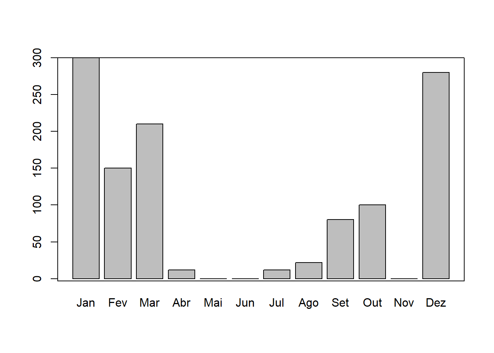
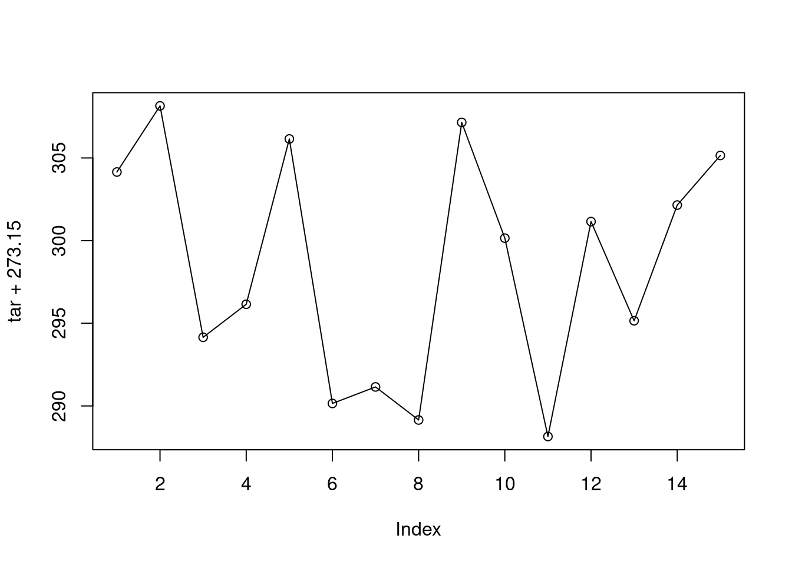

Apresentação

Ilustração: The Project Twins
Este livro é uma composição das notas de aula da disciplina
Análise de Dados Ambientais com  do curso de Graduação em meteorologia que eu ofereço no Departamento de Física da Universidade Federal de Santa Maria (UFSM).
do curso de Graduação em meteorologia que eu ofereço no Departamento de Física da Universidade Federal de Santa Maria (UFSM).
O livro pode ser útil para qualquer um com interesse em aprender o  e que quer alavancar a etapa de processamento de dados ambientais no seu projeto. O objetivo é prover uma material para ensinar os conceitos básicos de programação necessários para o processamento, a visualização e a análise de dados ambientais com o sistema computacional
e que quer alavancar a etapa de processamento de dados ambientais no seu projeto. O objetivo é prover uma material para ensinar os conceitos básicos de programação necessários para o processamento, a visualização e a análise de dados ambientais com o sistema computacional  . Estes procedimentos são potencializados com o uso do software RStudio, uma interface de desenvolvimento integrado (IDE) específica para o
. Estes procedimentos são potencializados com o uso do software RStudio, uma interface de desenvolvimento integrado (IDE) específica para o  .
.
Neste livro o leitor aprenderá a sintaxe básica da linguagem  , a importação e exportação de dados, a criação de gráficos, funções, a padronização e organização de conjunto de dados ambientais; e finalmente, a confecção de relatórios dinâmicos e reproduzíveis.
, a importação e exportação de dados, a criação de gráficos, funções, a padronização e organização de conjunto de dados ambientais; e finalmente, a confecção de relatórios dinâmicos e reproduzíveis.
O material do livro inclui o uso de dados ambientais de diferentes áreas (meteorologia, climatologia, hidrologia, sensoriamento remoto) em exemplos práticos e em exercícios, para estimular a prática da programação.
O texto é intercalado com trechos de códigos que podem ser reproduzidos e os resultados visualizados no computador do leitor.
Após a introdução ao  apresenta-se as capacidades específicas do
apresenta-se as capacidades específicas do  para manipulação de dados. Baseado na experiência do autor são empregados os pacotes mais adequados para cada finalidade, como dplyr e tidyr para o processamento de dados e o ggplot2 para visualização de dados.
para manipulação de dados. Baseado na experiência do autor são empregados os pacotes mais adequados para cada finalidade, como dplyr e tidyr para o processamento de dados e o ggplot2 para visualização de dados.
A intenção do livro é que após a leitura, o leitor tenha o conhecimento suficiente para desenvolver códigos que automatizem tarefas repetitivas, assim reduzindo o tempo gasto na etapa de preparação de dados. Esta programação mais efetiva permitirá focar mais na análise de dados e na comunicação dos resultados, seja ela na forma de documentos acadêmicos, ou relatórios técnicos em empresas públicas e privadas.
O texto está em formato html para tirar o melhor proveito de recursos de multimídia, da capacidade de busca de texto e links para websites.
O texto é organizado em 7 capítulos:
@ref(intro) Introdução
@ref(install) Instalação do
 e RStudio
e RStudio@ref(iu) Interface do Usuário
@ref(rstudio) Rstudio
@ref(operbasic) Operações Básicas
@ref(datatype) Tipos de dados
@ref(estrutura-dados) Estruturas de dados
@ref(io) Entrada de dados
@ref(data-wrangle) Processamento de dados

A versão on-line deste livro está licenciada com uma Licença Creative Commons - Atribuição-NãoComercial-CompartilhaIgual 4.0 Internacional.
(PART) Introdução
1 Motivação

1.1 Análise de dados meteorológicos
Processo pelo qual adquire-se conhecimento, compreensão e percepção dos fenômenos meteorológicos a partir de observações (dados) qualitativas e quantitativas.
1.2 Ciência de dados

1.3 Etapas para abordagem de um problema
- Questão científica/problema
- Obtenção de dados: coleta/medida do(as) estado/condições da atmosfera
- Instrumentos e sensores
- Instrumentos e sensores
- Processamento de dados:
download —> limpeza —> formatação —>
transformação —> controle de qualidade- ferramenta/software
- conhecimento em programação
- ferramenta/software
- Análise de dados
- ferramenta/software
- conhecimento em programação
- ferramenta/software
- Solução para o problema
- Proposta de um modelo
- estatístico, empírico, ou fisicamente baseado
- conhecimento em programação
- Proposta de um modelo
- Apresentação/divulgação/publicação
1.4 Programação computacional


1.5
R é o termo usado para se referir a linguagem de programação e ao software que interpreta os scripts escritos usando esta linguagem.
Comunidade fantástica
Contribuidores (R Core Team (2020))
milhares de pessoas usam o R diariamente e ajudam outras pessoas
- Software Livre (GPL), Código aberto e multiplataforma
Ambiente para Análise de dados interativa
1.6 Por que o R?
R não é uma GUI (Interface gráfica do usuário) e isso é bom
há uma natural resistência e dificuldade ao uso de códigos e scripts
scripts favorecem a automatização e reprodutibilidade
força você a ter um conhecimneto mais aprofundado do que está fazendo
-
qualquer pessoa (inclusive você mesmo no futuro) pode obter os mesmos resultados do mesmo conjunto de dados
R é integrado com outras ferramentas de que permitem atualizar seus resultados, figuras e análises automaticamente
Acesso ao estado da arte da ciência de dados (Big Data, Data Mining, Machine Learning)
é um software livre, de código fonte aberto e funciona em diversos sistemas operacionais (Linux, Windows e MacOS).
Interface com Fortran, C, C++, Python
-
- R produz gráficos de alta qualidade
R trabalha com dados de todas formas e tamanhos
Extensões para Manipulação de dados

1.8 R não é perfeito!
- Muitos códigos em R são escritos para resolver um problema;
- foco nos resultados e não no processo
- usuários não são programadores
- códigos deselegantes, lentos e difíceis de entender
Como o nosso idioma, há muitas exceções para serem lembradas
R não é muito rápido e códigos mal escritos serão lentos
São apenas ~20 anos de evolução
Há muito o que melhorar
1.9 Para saber mais sobre o R
Documentação oficial - Manuais do R traduzidos
Lista de Livros relacionados ao R
- Livros gratuitos (em inglês)
Fóruns:
lista Brasileira de discussão do programa R: R-br
(PART) Configuração do Sistema
2 Pré-requisitos
Para tirar melhor proveito deste livro, você precisará:
Das versões atualizadas do
-
- se estiver em SO Windows também precisará do programa Rtools.
RStudio: https://rstudio.com/download
-
- Criar uma conta GitHub: https://github.com.2
2.1 Instalação do R e RStudio
A interação do usuário com o  é por meio da linha de comando. A
interface da linha de comando tem suas vantagens, mas você será mais produtivo
com o uso de uma Interface de Desenvolvimento Integrado (IDE) como o RStudio Desktop.
é por meio da linha de comando. A
interface da linha de comando tem suas vantagens, mas você será mais produtivo
com o uso de uma Interface de Desenvolvimento Integrado (IDE) como o RStudio Desktop.
A seguir veremos como:
instalar o
nos SO Windows e Linux Ubuntumanter o
sempre atualizado no Linux Ubuntuconfigurar um diretório para armazenar os pacotes do R instalados
instalar pacotes
instalar o RStudio Desktop
Neste livro, o maior foco na instalação do  é dada para o SO Linux Ubuntu, pelo fato de assim como o R,
ser um software livre e de código aberto. Como o Linux Ubuntu é baseado no Debian o procedimento de instalação
também se estende a essa distribuição Linux e as versões derivadas do Ubuntu oficialmente reconhecidas.
é dada para o SO Linux Ubuntu, pelo fato de assim como o R,
ser um software livre e de código aberto. Como o Linux Ubuntu é baseado no Debian o procedimento de instalação
também se estende a essa distribuição Linux e as versões derivadas do Ubuntu oficialmente reconhecidas.
A instalação no SO Windows é igual a instalação de qualquer outro software e pode ser facilmente encontrada na internet. Por esta razão, somente indicou-se o caminho de instalação.
Ao instalar R recomenda-se optar por instalar na língua inglesa. Assim quando surgir uma mensagem de erro durante seu uso, basta usá-la numa pesquisa na internet para solucionar o problema. As chances de resolver o problema serão muito maiores se sua pesquisa for realizada em inglês.
2.1.1 Instalando o R
O  pode ser instalado a partir dos binários pré-compilados ou do código fonte. Nós veremos a instalação do
pode ser instalado a partir dos binários pré-compilados ou do código fonte. Nós veremos a instalação do  a partir dos arquivos binários.
a partir dos arquivos binários.
2.1.1.1 Windows
O binário executável do  para o Windows está disponível na Rede Abrangente de Arquivos do
para o Windows está disponível na Rede Abrangente de Arquivos do  (CRAN) e
pode ser baixado aqui.
(CRAN) e
pode ser baixado aqui.
Abra o executável e siga instruções de instalação mantendo todas as opções padrões.
No Windows a instalação do  inclui uma Interface Gráfica do Usuário
(GUI) acessível pelo executável
inclui uma Interface Gráfica do Usuário
(GUI) acessível pelo executável RGui.exe (Figura @ref(fig:r-gui)). Um atalho para esse executável é gerado por default na área de trabalho com o símbolo
do  .
.

(#fig:r-gui)Interface gráfica do usuário no R para Windows.
Para instalar pacotes de plataformas diferentes da CRAN (veja seção @ref(install-github)) é necessário instalar o programa Rtools,
selecionando a versão adequada para sua versão do  .
.
2.1.1.1.1 Atualização do R no Windows
Novas versões do R são disponibilizadas em geral com frequência de 5 vezes por ano. Recomenda-se manter o R atualizado, pois as novas versões incluem aperfeiçoamentos e a correção de bugs.
As novas versões do  vem com os pacotes padrões do R. Os demais pacotes instalados pelo usuário na versão anterior precisam ser reinstalados.
vem com os pacotes padrões do R. Os demais pacotes instalados pelo usuário na versão anterior precisam ser reinstalados.
Para atualizar o  no Windows, ao invés de baixar o executável a
cada nova versão e repetir o processo da seção anterior, você pode utilizar o pacote installr. A instalação de pacotes no
no Windows, ao invés de baixar o executável a
cada nova versão e repetir o processo da seção anterior, você pode utilizar o pacote installr. A instalação de pacotes no  será vista na seção @ref(install-pck).
será vista na seção @ref(install-pck).
2.1.1.2 Linux
2.1.1.2.1 Ubuntu
Há várias formas de instalar o  no Ubuntu. Mas primeiro, caso você
tenha alguma versão antiga do R, desinstale-a com:
no Ubuntu. Mas primeiro, caso você
tenha alguma versão antiga do R, desinstale-a com:
A forma mais fácil de instalar o  é usar a versão compilada no
repositório default do Ubuntu.
é usar a versão compilada no
repositório default do Ubuntu.
Entretanto, como o R é um projeto de evolução rápida, a versão estável mais recente3 não está disponível nos repositórios do Ubuntu. Dessa forma, não conseguimos usufruir dos pacotes mais recentes
(ou em desenvolvimento), que geralmente incluem o estado da arte da ciência de dados. Por esta razão, vamos instalar a última versão do  e de forma
que seja atualizado automaticamente pelo sistema. Isto pode ser feito com os comandos a seguir.
e de forma
que seja atualizado automaticamente pelo sistema. Isto pode ser feito com os comandos a seguir.
$ sudo touch /etc/apt/sources.list.d/cran.list
$ sudo sh -c "echo 'deb https://cloud.r-project.org/bin/linux/ubuntu `lsb_release -sc`-cran35/' >> /etc/apt/sources.list.d/cran.list" - Adicionamos a chave de autenticação6 do repositório.
- Atualizamos a lista de repositórios do sistema.
- Instalamos o R
Para iniciar o  no Linux, digite
no Linux, digite R no cursor do terminal:
$ RA partir desse momento já começamos uma sessão no  . Vamos gerar uma sequência numérica de 1 a 10 e plotá-la.
. Vamos gerar uma sequência numérica de 1 a 10 e plotá-la.

(#fig:Chunck4)Gráfico da sequência de 10 números.
Após este teste, podemos sair do  , sem salvar os dados da seção, com a expressão abaixo:
, sem salvar os dados da seção, com a expressão abaixo:
2.1.1.3 Diretório para pacotes instalados pelo usuário
Os pacotes que vem com os pacotes r-base e r-recommended são instalados no diretório /usr/lib/R/library. Estes pacotes são atualizados pelo sistema7 ou usando sudo apt-get update && sudo apt-get upgrade.
Uma boa prática para os pacotes R instalados pelo usuário é definir um diretório específico. Isso lhe dá mais controle sobre os pacotes do  instalados no sistema. Um local sugerido é o
instalados no sistema. Um local sugerido é o /home/usuario/.R/libs. O seu home ou pasta pessoal pode ser obtido com o comando echo $HOME. Para criar o diretório você pode digitar o comando abaixo:
Para informar ao  onde procurar os pacotes instalados, você precisa criar um arquivo chamado
onde procurar os pacotes instalados, você precisa criar um arquivo chamado .Renviron, no diretório $HOME, contendo a expressão R_LIBS=/home/usuario/.R/libs/. Você pode fazer isso em um terminal com os comandos:
Esse caminho fica então visível ao  , o que pode ser verificado executando a função
, o que pode ser verificado executando a função .libPaths() na linha de comando do  .
.
Abra o  :
:
e ao digitar:
> .libPaths()
[1] "/home/hidrometeorologista/.R/libs" "/usr/local/lib/R/site-library"
[3] "/usr/lib/R/site-library" "/usr/lib/R/library" o seu diretório /home/usuario/.R/libs8 deve aparecer em primeiro lugar. Indicando que este local tem prioridade para instalação dos pacotes. Caso o diretório deixe de existir os diretórios seguintes serão usados.
2.2 Instalação de Pacotes
Um pacote do  é uma coleção de funções, dados e documentação que estende as funcionalidades básicas do R, muito além do que se poderia imaginar. Os pacotes são desenvolvidos pela comunidade do
é uma coleção de funções, dados e documentação que estende as funcionalidades básicas do R, muito além do que se poderia imaginar. Os pacotes são desenvolvidos pela comunidade do  formada por vários contribuidores.
formada por vários contribuidores.
2.2.1 Da internet
2.2.1.1 CRAN
A forma mais fácil de instalar uma pacote do R é através da função install.packages("nome_do_pacote").
Por default o pacote informado é instalado a partir do repositório oficial de distribuição de pacotes: a (CRAN). A CRAN é uma rede de servidores e FTP distribuídas pelo mundo e mantida pela comunidade  . A Fundação R coordena a CRAN e estabelece diversos testes para assegurar que os pacotes publicados sigam as políticas da CRAN.
. A Fundação R coordena a CRAN e estabelece diversos testes para assegurar que os pacotes publicados sigam as políticas da CRAN.
Agora veremos como instalar um pacote. Como exemplo instalaremos o pacote remotes que dispõe de funções para instalar pacotes de repositórios remotos, como por exemplo do GitHub.
Para ter acesso as funções disponibilizadas com o pacote você precisa carregar o pacote:
Apesar de precisar só instalar uma vez um pacote, você precisará carregá-lo a cada nova sessão.
Para desinstalar um pacote você pode usar a função remove.packages("nome_do_pacote").
2.2.1.2 GitHub e R-forge
Nem todos pacotes são disponíveis na CRAN. Muitos desenvolvedores disponibilizam seus pacotes em plataformas como o GitHub e R-forge. As vezes um pacote pode estar em ambos CRAN e GitHub (ou R-forge), mas a última versão - a de desenvolvimento - é somente disponibilizada no GitHub (ou R-forge).
Para instalar um pacote de um repositório do GitHub usa-se a função install_github() do pacote remotes. Portanto, o pacote remotes precisa ser sido instalado primeiro (ver seção @ref(install-cran)).
A função para instalar um pacote do GitHub requer como argumento o nome do usuário/nome do repositório. Por exemplo, para instalar o pacote inmetr do repositório mantido pelo lhmet, usa-se:
library(remotes)
# instala o pacote inmetr do repositório
# https://github.com/lhmet/inmetr
install_github("lhmet/inmetr")
Você pode acessar uma função de um pacote instalado com a forma especial pacote::funcao. O trecho de código anterior poderia ser reduzido a:
remotes::install_github(“lhmet/inmetr”)
Essa forma deixa explícito que estamos usando a função install_github() do pacote remotes.
As vezes você pode estar com diversos pacotes carregados e eles podem ter funções de mesmo nome. Portanto, essa é a alternativa mais segura de avaliar funções afim de evitar conflitos.
Para instalar um pacote num repositório do R-forge, por exemplo o repositório do pacote raster, usa-se:
2.2.1.3 Arquivo fonte local
Códigos fonte de pacotes do R são armazenados como arquivos com a extensão .tar.gz. Binários compilados são armazenados com a extensão .zip. Exemplo de arquivos como estes podem ser baixados manualmente da CRAN (veja a seção Downloads em por exemplo, https://cran.r-project.org/web/packages/remotes/index.html), no GitHub ou R-forge.
Eventualmente um usuário pode instalar um pacote a partir desses arquivos localmente. Isto pode também ser feito com a função install.packages(), especificando o argumento repos = NULL e o argumento pkgs com o caminho do arquivo. Por exemplo:
2.3 Atualização de pacotes
Se o seu  foi atualizado, os pacotes da versão prévia do
foi atualizado, os pacotes da versão prévia do  devem ser reinstalados para evitar problemas de compatibilidade. O comando abaixo atualiza todos pacotes para a última versão. A opção
devem ser reinstalados para evitar problemas de compatibilidade. O comando abaixo atualiza todos pacotes para a última versão. A opção checkbuild = TRUE reinstala os pacotes que foram construídos uma versão mais antiga que a do  atual.
atual.
Se você usa muitos pacotes, este processo pode tornar-se trabalhoso e problemático, devido a cadeia de dependências de alguns pacotes. Por esta razão, há pacotes para facilitar este processo, como o rvcheck.
Com o rvcheck podemos:
- checar a versão mais recente do R
library(rvcheck)
check_r()
## $installed_version
## [1] "R-3.6.3"
##
## $latest_version
## [1] "R-4.0.0"
##
## $latest_url
## [1] "https://cran.r-project.org/src/base/R-4/R-4.0.0.tar.gz"
##
## $up_to_date
## [1] FALSE- checar a versão mais atual de um pacote na CRAN, no GitHub ou no Bioconductor
check_cran('dplyr')
## package is up-to-date release version
## $package
## [1] "dplyr"
##
## $installed_version
## [1] "0.8.5"
##
## $latest_version
## [1] "0.8.5"
##
## $up_to_date
## [1] TRUE
check_github('lhmet/inmetr')
## package is up-to-date devel version
## $package
## [1] "lhmet/inmetr"
##
## $installed_version
## [1] '0.3.0.9000'
##
## $latest_version
## [1] "0.3.0.9000"
##
## $up_to_date
## [1] TRUE
check_bioc('EBImage')
## package is up-to-date release version
## $package
## [1] "EBImage"
##
## $installed_version
## [1] "4.28.1"
##
## $latest_version
## [1] "4.28.1"
##
## $up_to_date
## [1] TRUEPor fim, para atualizar todos os pacotes:
Se você precisa manter a versão dos seus pacotes em uma nova versão do R, o pacote pkgsnap é uma solução. Esta opção é útil para evitar que mudanças nas versões dos pacotes possam fazer com que seu código se comporte de maneira diferente.
2.4 Pacotes necessários e dependências
Ao longo deste livro serão usados diversos pacotes para o processamento de dados ambientais. A maioria dos pacotes não vêm com o  .
.
Alguns pacotes dependenm de bibliotecas do Linux e precisamos instalá-las antes da instalação no  .
.
pcks <- c(
"easypackages",
"rmarkdown",
"knitr",
"pander",
"htmlTable",
"styler",
"tidyverse",
"rio", # instala readxl, openlxlsx, data.table, foreign, haven, feather,
# readODS, jsonlite, rmatio
"writexl",
"microbenchmark",
"ncdf4",
"raster",
"openair",
"lubridate",
"fields",
"viridis",
"WriteXLS",
"gcookbook"
)
pcks_dev <- c(
"vembedr",
"inmetr"
)2.5 RStudio no Ubuntu
RStudio é uma empresa que desenvolve ferramentas gratuitas para o  e produtos pagos para empresas.
e produtos pagos para empresas.
Uma de suas ferramentas gratuitas é o software RStudio Desktop que consiste em um ambiente integrado de desenvolvimento (IDE) construído especificamente para o  . Ele funciona é multiplataforma (servidores inclusive) e fornece diversos recursos, como a integração com controle de versão e manejo de projetos.
. Ele funciona é multiplataforma (servidores inclusive) e fornece diversos recursos, como a integração com controle de versão e manejo de projetos.
Para instalação da versão do RStudio Desktop, você precisa saber se seu SO é 64 ou 32-bit e a versão do Linux Ubuntu. Essas informações podem ser obtidas, respectivamente, pelos comandos:
x86_64Se retornar x86_64 sua máquina é 64-bit9.
18.04Com essas informações, você pode selecionar o RStudio adequado para o seu sistema e baixá-lo (Figura @ref(fig:rstudio-download)).

(#fig:rstudio-download)Opção para baixar o RStudio Desktop.
Ao clicar sobre o arquivo baixado com o botão direito, há a opção de abrir com Ubuntu Software Center e então clicar em instalar. Se no seu sistema não houver esta opção, instale via terminal10 com os seguintes comandos:
$ cd /local/do/arquivo/baixado/rstudio-x.y.zzzz-amd64.deb
$ sudo dpkg -i rstudio-x.y.zzzz-amd64.deb
$ sudo apt-get install -fAbra o RStudio digitando no terminal:
$ rstudio &Agora você está pronto para começar a programar em  aproveitando as facilidades que o RStudio oferece.
aproveitando as facilidades que o RStudio oferece.
2.6 Git e Github
Git é um sistema de controle de versão que permite você rastrear as mudanças feitas em arquivos. Estes arquivos podem ser .R, .Rmd, .doc, .pdf, .xls, mas as diferenças em arquivos de texto regular são mais facilmente visíveis (.txt, .csv, .md).
GitHub é um sistema de gerenciamento de projetos e versões de códigos assim como uma plataforma de rede social criado para desenvolvedores. O GitHub é permite que você trabalhe em projetos colaborativos com desenvolvedores de todo o mundo, planeje seus projetos e acompanhe o trabalho. O GitHub é um dos maiores depósitos online de trabalho colaborativo do mundo.
(PART) Interação
3 Interface do Usuário
Na maior parte do tempo você provavelmente usará o  no modo interativo: rodando comandos e vendo os resultados.
no modo interativo: rodando comandos e vendo os resultados.
Eventualmente esse processo pode ser inconveniente. Por exemplo, no caso de uma análise com um código bem extenso e que precisa ser repetida com dados atualizados semanalmente. Nessa situação, recomenda-se a criação de um script, ou seja, um arquivo texto, com a extensão .R, contendo o código de sua análise.
Esse script pode ser executado pelo R no modo de processamento em lote (do termo em inglês Batch Processing) através de um terminal do SO Linux, ou via o Prompt de comando (cmd.exe) do SO Windows.
Nesta seção apresenta-se ao leitor estes dois modos de execução do  .
.
3.1 no modo interativo
No Linux o  pode ser aberto simplesmente digitando em um terminal a letra
pode ser aberto simplesmente digitando em um terminal a letra R.
R version 3.6.3 (2020-02-29) -- "Holding the Windsock"
Copyright (C) 2020 The R Foundation for Statistical Computing
Platform: x86_64-pc-linux-gnu (64-bit)
R is free software and comes with ABSOLUTELY NO WARRANTY.
You are welcome to redistribute it under certain conditions.
Type 'license()' or 'licence()' for distribution details.
Natural language support but running in an English locale
R is a collaborative project with many contributors.
Type 'contributors()' for more information and
'citation()' on how to cite R or R packages in publications.
Type 'demo()' for some demos, 'help()' for on-line help, or
'help.start()' for an HTML browser interface to help.
Type 'q()' to quit R.
>A janela com a linha de comando do  apresenta o prompt do
apresenta o prompt do  (
(>). Após este símbolo digitamos os comandos, pressionamos a tecla <enter>, o  interpreta o comando e retorna o resultado.
interpreta o comando e retorna o resultado.
Os comandos digitados na linha de comando são chamados de expressões. Esse é o modo iterativo do  . Portanto, a linha de comando é a mais importante ferramenta do
. Portanto, a linha de comando é a mais importante ferramenta do  , pois todas expressões são avaliadas através dela.
, pois todas expressões são avaliadas através dela.
A expressão é avaliada pelo  , o resultado é mostrado, mas o seu valor é perdido.
, o resultado é mostrado, mas o seu valor é perdido.
O número entre colchetes que aparece como resultado da operação (“[1]” no caso acima) indica o conteúdo resultante da operação iniciando na posição 1 desse objeto. O significado dessa informação torna-se mais óbvio quando trabalhamos com objetos maiores, como por exemplo com vetores. Observe os valores nos colchetes para uma sequência de 100 até 1.
> 100:1
[1] 100 99 98 97 96 95 94 93 92 91 90 89 88 87 86 85 84 83
[19] 82 81 80 79 78 77 76 75 74 73 72 71 70 69 68 67 66 65
[37] 64 63 62 61 60 59 58 57 56 55 54 53 52 51 50 49 48 47
[55] 46 45 44 43 42 41 40 39 38 37 36 35 34 33 32 31 30 29
[73] 28 27 26 25 24 23 22 21 20 19 18 17 16 15 14 13 12 11
[91] 10 9 8 7 6 5 4 3 2 1O elemento [18] da sequência de 100 até 1 é o número 83.
Pode ocorrer da expressão digitada na linha ser muito extensa e ir além de uma linha. Se a expressão estiver incompleta o  mostra um sinal de
mostra um sinal de +.
Execute a expressão abaixo até o sinal de menos e tecle <enter>. Enquanto a instrução não estiver completa o sinal de + se repetirá. Você pode cancelar a execução digitando Ctrl + c ou Esc. No código abaixo isso acontecerá até que você digite o número que deseja subtrair de 4, no caso de o número 3.
3.1.1 Expressões em sequência
Podemos executar todas expressões anteriores em apenas uma linha, usando o ponto e vírgula ; para separar as expressões:
> 62 + 38; 100:1; 1 * 2 * 3 * 4 * 5 * 6 * 7 * 8 * 9 * 10; 4 - 3
[1] 100
[1] 100 99 98 97 96 95 94 93 92 91 90 89 88 87 86 85 84 83
[19] 82 81 80 79 78 77 76 75 74 73 72 71 70 69 68 67 66 65
[37] 64 63 62 61 60 59 58 57 56 55 54 53 52 51 50 49 48 47
[55] 46 45 44 43 42 41 40 39 38 37 36 35 34 33 32 31 30 29
[73] 28 27 26 25 24 23 22 21 20 19 18 17 16 15 14 13 12 11
[91] 10 9 8 7 6 5 4 3 2 1
[1] 3628800
[1] 13.1.2 Navegação entre as expressões já avaliadas
Você pode usar as teclas ↑ e ↓ para navegar entre as expressões já avaliadas pelo  . O que é útil quando precisamos repetir um comando anterior com alguma mudança ou para corrigir um erro de digitação ou a omissão de um parênteses.
. O que é útil quando precisamos repetir um comando anterior com alguma mudança ou para corrigir um erro de digitação ou a omissão de um parênteses.
Quando a linha de comando é usada por muito tempo a sua tela pode ficar poluída com a saída das expressões anteriores. Para limpar a tela, tecle Ctrl+l. Assim o console aparece na parte superior do terminal.
> 15 + 4
[1] 19
> 100:1
[1] 100 99 98 97 96 95 94 93 92 91 90 89 88 87 86 85 84 83
[19] 82 81 80 79 78 77 76 75 74 73 72 71 70 69 68 67 66 65
[37] 64 63 62 61 60 59 58 57 56 55 54 53 52 51 50 49 48 47
[55] 46 45 44 43 42 41 40 39 38 37 36 35 34 33 32 31 30 29
[73] 28 27 26 25 24 23 22 21 20 19 18 17 16 15 14 13 12 11
[91] 10 9 8 7 6 5 4 3 2 1
> #tecle <Ctr + l>Para parar ou cancelar a execução de uma expressão utilize as teclas Ctrl + C. As teclas Ctrl + l tem o efeito de limpar a tela.
3.1.3 Comentários
No  , a cerquilha
, a cerquilha # (hashtag) é um caractere especial. Qualquer coisa após esse caractere será ignorada pelo  . Somente as expressões antes da
. Somente as expressões antes da # são avaliadas. Por meio desse símbolo de comentário podemos fazer anotações e comentários no código sem atrapalhar a interpretação das expressões pelo  .
.
3.1.4 Auto preenchimento de funções
O  inclui o preenchimento automático de nomes de funções e arquivos por meio da tecla
inclui o preenchimento automático de nomes de funções e arquivos por meio da tecla <tab>. Uma lista de possíveis funções que começam com as letras inicialmente digitadas aparecerão.

(#fig:unnamed-chunk-3)Auto preenchimento de código na linha de comandos do R.
3.1.5 Primeiro script
O trecho de código abaixo apresenta nas primeiras linhas algumas expressões do  executadas anteriormente. Mas há também, na segunda parte, códigos para salvar um gráfico de pontos num arquivo pdf. Na última parte do trecho, define-se uma variável
executadas anteriormente. Mas há também, na segunda parte, códigos para salvar um gráfico de pontos num arquivo pdf. Na última parte do trecho, define-se uma variável x que contém aquela mesma sequência numérica usada no gráfico.
# Primeiro script no R
#----------------------------------------------------------------
# cálculos básicos
15 + 4
1:100
1 * 2 * 3 * 4 * 5 *6 * 7 * 8 * 9 * 10
4-3
#----------------------------------------------------------------
# salvando um gráfico em um arquivo pdf
arquivo_pdf <- "plot-script1.pdf"
pdf(arquivo_pdf) # cria e abre um arquivo pdf
plot(1:100) # faz o gráfico
dev.off() # fecha o arquivo pdf
#----------------------------------------------------------------
# definindo uma variável x
x <- 1:100
xEste conjunto de linhas de código, quando inseridos em um arquivo texto11 formam um primeiro script  . Este script pode ser executado pelo
. Este script pode ser executado pelo  através da função
através da função source(), usando como argumento o caminho para o local do script.
Este script produzirá como saída o arquivo /home/usuario/adar/plot-script1.pdf. Você pode visualizar o arquivo para conferir o gráficos de pontos gerado.
3.2 no modo de processamento em lote
Para rodar um script no modo de processamento em lote do  através do seguinte comando no terminal Linux:
através do seguinte comando no terminal Linux:
$ R CMD BATCH opcoes arqentrada arqsaidaOnde: arqentradaé o nome do script (arquivo com a extensão .R) a ser executado; arqsaida é o arquivo (com a extensão .Rout) com as saídas dos comandos executados no R; opcoes é a lista de opções que controlam a execução.
Vamos rodar como exemplo, o script1.R da seção @ref(primeiro-script).
$ R CMD BATCH /home/usuario/adar/script1.RO comando acima, produzirá dois arquivos de saída:
script1.Rout12 criado por default quando oarqsaidanão é especificado, e;
- arquivo "plot-script1.pdf".
Você pode especificar o nome do arqsaida como desejar. No exemplo abaixo, mostra-se como salvar o arquivo de saída incluindo a data em que ele foi gerado, script1-saida-adatadehoje.log.
$ R CMD BATCH script1.R script1-saida-`date "+%Y%m%d"`.logApós a execução do último comando, os mesmos arquivos resultantes do comando anterior serão gerados, exceto pelo primeiro (.Rout), que será nomeado script1-saida-20200427.Rout.
Para mais opções do comando R CMD BATCH digite no terminal do Linux R --help.
4 RStudio
O RStudio Desktop é um ambiente integrado de desenvolvimento (IDE) para o  . Portanto, o RStudio depende da instalação prévia do
. Portanto, o RStudio depende da instalação prévia do  . Ele funciona como uma interface gráfica do usuário (GUI), mas com muito mais potencialidades.
. Ele funciona como uma interface gráfica do usuário (GUI), mas com muito mais potencialidades.
O RStudio é uma ferramente que potencializará sua interação com o  :
:
na produção de gráficos
na organização de seu código na forma de projetos
na reprodutibilidade de seu trabalho ou pesquisa
na manutenção e criação de seus próprios pacotes do R
na criação e compartilhamento de seus relatórios
no compartilhamento de seu código e a colaboração com outros
Nessa seção você terá uma visão geral do RStudio Desktop.
4.1 Visão geral do RStudio
Assumindo que o RStudio tenha sido instalado (seção @ref(install-rstudio)), ao abri-lo e clicar em File ▶ New File ▶ R Script você verá uma tela com aspecto similar ao da Figura @ref(fig:rstudio-fig).

(#fig:rstudio-fig)Rstudio
O RStudio possui 4 painéis principais:
Editor para scripts e visualização de dados
- abrir e criar scripts
- rodar scripts
- código com sintaxe realçada
- rodar partes do código Ctrl+Enter
- rodar todo script Ctrl+Shift+S
- autopreenchimento das funções Tab
- comentar linhas Ctrl+Shift+C
- desfazer Ctrl+Z
- refazer Ctrl+Shift+Z
- referência para teclas de atalho Alt+Shift+K
- abrir script com Ctrl+Click
- encontrar e substituir Ctrl+F
- comentar texto em R Markdown shift+ctrl+c
Console do R
Navegador do espaço de trabalho e histórico de comandos
Arquivos/Plots/Pacotes/Ajuda/Visualizador
Configuração de texto e painéis em:
- Menus
Tools ▶ Global Options ▶ Appearance* mostrar linhas, alterar realce da sintaxe * Session * Plots
A Folha de referência do RStudio (Figura @ref(fig:rstudio-cheat-sheet))) fornece uma visão geral das suas principais funcionalidades.
(#fig:rstudio-cheat-sheet)Folha de referência do RStudio, disponível em https://www.rstudio.com/wp-content/uploads/2016/03/rstudio-IDE-cheatsheet-portuguese.pdf
4.2 Verificação ortográfica
O RStudio oferece o recurso de verificação ortográfica do texto. No caso de línguas diferentes da Inglesa é necessário instalar os dicionários para outras línguas. Os dicionários podem ser instalados indo em Tools ▶ Global Options, selecionando Spelling no painel à esquerda e Install More Languages na caixa de seleção dos dicionários de línguas (Figura @ref(fig:rstudio-spell-config)). Dessa forma, os dicionários de 28 linguagens serão instalados.

(#fig:rstudio-spell-config)Configuração do RStudio para instalar dicionários de outras línguas.
Após a adição dos dicionários, acesse novamente a caixa de seleção de dicionários e selecione Portuguese (Brazil) e depois clique em ok (Figura @ref(fig:rstudio-set-dict)).

(#fig:rstudio-set-dict)Configuração do dicionário de Portugês-BR no RStudio.
Agora você pode evitar erros ortográficos nos seus relatórios e demais documentos escritos em R Markdown através da tecla F7 (ou Edit ▶ Check Spelling).
(PART) Fundamentos do R
5 Operações básicas
Nesta seção veremos:
- operações aritméticas básicas com
- a atribuição de valores a uma variável
- o uso de funções matemáticas internas do
- valores numéricos especiais do
- os cuidados ao nomear variáveis
5.1 Convenção
A partir deste capítulo, os códigos a serem avaliadas no  terão o prompt do
terão o prompt do  (
(>) omitidos. Essa convenção é para tornar mais fácil a ação de copiar e colar os códigos na linha de comando do  . O resultado da avaliação das expressões será mostrado precedido do símbolo (
. O resultado da avaliação das expressões será mostrado precedido do símbolo (#>). Esses valores são os resultados que esperam-se sejam reproduzidos pelo leitor na sessão do  em seu computador. Por exemplo:
em seu computador. Por exemplo:
No trecho de código acima, a primeira linha contém o código a ser copiado pelo leitor para execução em seu computador. A segunda linha é a saída do código avaliado pelo R.
5.2 Calculadora
O  é uma calculadora turbinada com diversas funções matemáticas disponíveis. Para quem não conhece o
é uma calculadora turbinada com diversas funções matemáticas disponíveis. Para quem não conhece o  , essa uma forma de familiarizar-se com a linha de comandos.
, essa uma forma de familiarizar-se com a linha de comandos.
5.2.1 Aritmética básica
Todas operações feitas em uma calculadora podem ser realizadas no painel com console do  no RStudio. Podemos calcular diversas operações em uma expressão:
no RStudio. Podemos calcular diversas operações em uma expressão:
Além de números e operadores artiméticos a expressão acima inclui a constante pré-definida (\(\pi\)): pi (=3.1415927).
Note que no R, o separador decimal é o ponto “.”, ao invés da vírgula “,” usada na notação brasileira. As vírgulas tem a finalidade de separar os argumentos nas chamadas de funções, tal como log(10, 10), que veremos na seção (???)(matfuns) .
As operações no  seguem a mesma ordem de precedência que aprendemos em matemática na escola:
seguem a mesma ordem de precedência que aprendemos em matemática na escola:
parênteses:
()expoentes:
^ou**multiplicação:
*divisão:
/
Então use os parênteses para forçar a ordem das operações acima de acordo com sua intenção:
10 + ((8^2)/4) - pi # parênteses opcionais se você lembrar a regra
#> [1] 22.85841
(10 + 8^2)/4 - pi
#> [1] 15.35841
10 + 8^2/(4 - pi)
#> [1] 84.55668
10 + 8^(2/4) - pi
#> [1] 9.686834Se você quer saber se um número é divisor exato de outro número (resto da divisão igual a zero), o operador %% determina o resto de uma divisão:
O operador %/% fornece a parte inteira do quociente da divisão entre 2 números.
Operações que resultam em números muito pequenos ou muito grandes são representados em notação científica.
Este mesmo valor pode ser escrito nas seguintes formas equivalentes:
5.2.2 Cálculos problemáticos
Geralmente surge quando um cálculo não tem sentido matemático ou não pode ser propriamente realizado (Tabela @ref(tab:tab-num-esp)) você se deparará com os valores numéricos especiais: Inf(Infinito) e NaN (abreviação do termo em inglês Not a Number - valor indefinido).
| operação | resultado |
|---|---|
| 2/0 | Inf |
| -12/0 | -Inf |
| log(0) | -Inf |
| (c(-3, 3))^Inf | NaN, Inf |
| 0*Inf | NaN |
| log(-0.5) | NaN |
| sqrt(-1) | NaN |
| 0/0 | NaN |
| Inf-Inf | NaN |
| mean(c(NA, NA), na.rm = TRUE) | NaN |
A demonstração das diferentes formas de se obter essas constantes especiais é importante para entender a origem delas durante a execução de um script mais extenso.
Por outro lado, há operações válidas com estes valores especiais.
Outra constante especial do  é o
é o NA (Not Available) que representa valor faltante, um problema inerente a maioria dos conjuntos de dados ambientais. Qualquer operação envolvendo NA resultará em NA (Tabela @ref(tab:tab-nas)).
| operação | resultado |
|---|---|
| NA + 5 | NA |
| sqrt(NA) | NA |
| NA^2 | NA |
| NA/NaN | NA |
5.2.3 Funções matemáticas
O  tem diversas funções internas. A sintaxe para chamar uma função é simplesmente:
tem diversas funções internas. A sintaxe para chamar uma função é simplesmente:
funcão(argumento)
Por exemplo:
# cosseno de 60°
cos(60*pi/180)
#> [1] 0.5
# raiz quadrada de 100
sqrt(100)
#> [1] 10
# exponencial de 1
exp(1)
#> [1] 2.718282
# fatorial de 4 (4*3*2*1)
factorial(4)
#> [1] 24Por padrão a função logaritmo (log()) determina o logaritmo natural (logaritmo de base \(e\)).
Para obter o logaritmo de 10 na base 10, o segundo argumento da função log() deve ser especificado, ou pode-se usar a função log10().
No  você verá que parênteses são frequentemente utilizados. Em geral, uma palavra antecedendo um parênteses em uma expressão: é uma função.
você verá que parênteses são frequentemente utilizados. Em geral, uma palavra antecedendo um parênteses em uma expressão: é uma função.
Você não precisa lembrar do nome de cada função do  . Você pode ou buscar pelo termo em um site de busca, ou usar o auto-preenchimento de código (
. Você pode ou buscar pelo termo em um site de busca, ou usar o auto-preenchimento de código (
Digitando ? antes do nome de uma função ou operador abrirá a página de ajuda daquela função.
5.3 Variáveis
Até agora nós usamos expressões para fazer uma operação e obter um resultado. O termo "expressão" significa uma sentença de código que pode ser executada. Se a avaliação de uma expressão é salva usando o operador <-, esta combinação é chamada de operador atribuição. O resultado da "atribuição" é armazenado em uma variável e pode ser utilizado posteriormente. Então uma variável é um nome usado para guardar os dados.
variavel <- valor
m <- 100
# para mostrar a variável digite o nome da variável
m
#> [1] 100
# ou use a função print()
print(m)
#> [1] 100O R diferencia letras maiúsculas de minúsculas.
Como criamos apenas a variável m, M não foi encontrada.
A variável m pode ser utilizado para criar outras variáveis.
Os espaços em torno do símbolo de atribuição (<-) não são obrigatórios mas eles ajudam na legibilidade do código.
g <- 9.8 # g é igual a 9.8
g < -9.8 # g é menor que -9.8 ?
g<-9.8 # g é igual a 9.8 ou é menor que -9.8 ?Nós estamos definindo a variável, digitando o nome dela na linha de comando e teclando enter para ver o resultado. Há uma forma mais prática de fazer isso e mostrar o resultado cercando a atribuição por parênteses:
g <- 10 # não imprime nada
g # digitando o nome da variável também mostra o valor de g
(g <- 10) # a mesma chamada com parênteses define e mostra o valor de gSe desejamos calcular e já visualizar o valor da variável peso (p) definida abaixo, podemos fazer:
Quando usamos a mesma variável numa sequência de atribuições o seu valor é sobrescrito. Portanto não é bom usar nomes que já foram usados antes, exceto se a intenção for realmente essa. Para saber os nomes das variáveis já usados use a função ls()13 para verificar as variáveis existentes:
5.3.1 Removendo variáveis
Para remover variáveis usa-se a função rm(). Vamos remover a variável m criada previamente e ver a lista de objetos no espaço de trabalho.
Podemos remover mais de uma variável ao mesmo tempo.
Para remover todas variáveis do espaço de trabalho (use com cautela):
5.3.2 Nomeando variáveis
É preciso ter cuidado ao nomear variáveis no  porque existem algumas regras:
porque existem algumas regras:
- não iniciar com um número e não conter espaços
não conter símbolos especiais:
^, !, $, @, +, -, /, ou *
evitar o uso de nomes usados em objetos do sistema (funções internas do R ou constantes como o número \(\pi\)):
c q s t C D F I T diff exp log mean pi range rank var FALSE Inf NA NaN NULL TRUE break else for function if in next repeat whilevariáveis com acento são permitidas mas não recomendadas.
Há limitações de interpretação do R para caracteres latinos como cedilha e acentos. Por isso não recomenda-se o uso destes caracteres para nomear variáveis.
Uma boa prática de programação é dar nomes informativos às variáveis para maior legibilidade do código. Uma boa referência para isso é a seção Sintaxe do Guia de estilo tidyverse (ou universo arrumado).
Apesar do ganho de legibilidade do código com a aplicação das regras de formatação de código do tidyverse é difícil de lembrar de todas elas.
Mas este não é mais um problema, pois o pacote styler fornece funções para estilizar o seu código padrão tidyverse.
As funções são acessíveis Através do menu Addins do RStudio e incluem as opções de: estilizar um arquivo e uma região destacada do código.

5.4 Exercícios
- Execute as seguintes expressões no R mostrando os resultados obtidos.
- Utilize uma expressão para cada item.
- Escolha um número e some 3 a ele.
- Multiplique o resultado por 2.
- Subtraia 10 da resposta.
- Divida o que foi obtido por 4.
- Calcule \(\sqrt{16}\), \({16^{0.5}}^{3}\), \({(16^{0.5})}^{3}\) e \(4^{\frac{3}{2}}\).
- Teste as expressões
log10(1000),log(1000),exp(log(1000)). Depois teste a expressãolog2(64). Verifique se você entendeu as diferentes funções logarítmicas.
Defina as variáveis abaixo tomando cuidados ao nomear as variáveis, conforme visto em sala de aula. Mostre os valores para as seguintes constantes:
Velocidade da luz: \(\nu = 2.998 \times 10^{8} \left[m \, s^{-1}\right]\)
Carga elementar ou eletrônica: \(e = 1.602 \times 10^{-19} \left[C\right]\)
Permissividade do vácuo: \(\epsilon_{0} = 8.85 \times 10^{-12} \left[C^{2} \, N^{-1} \, m^{2}\right]\)
Constante de Planck: \(h=6.626 \times 10^{-34} \left[J \, s\right]\)
- Constante de Stefan Boltzman: \(\sigma = 5.67 \times 10^{-8} \left[W \, m^{-2} \, K^{-4}\right]\)
Constante solar: \(S_{0} = 1380 \left[W \, m^{-2}\right]\)
Constante de Avogadro: \(N_{A} = 6.022 \times 10^{23} \left[mol^{-1}\right]\)
Constante dos gases para o ar seco: \(R_{d} = 287.04 \left[J \, K^{-1} \, kg^{-1}\right]\)
Constante dos gases ideais para o vapor: \(R_{w} = 461.5 \left[J \, K^{-1} \, kg^{-1}\right]\)
Densidade do ar seco para CNTP (à 0 ° C em 1000 mb): \(\rho=1.2754 \left[kg \, m^{-3}\right]\)
Pressão média ao nível médio do mar para atmosfera padrão: \(P_{0}=1013.25 \left[mb\right]\)
Temperatura ao nível médio do mar para atmosfera padrão: \(T_{0}=288.15 \left[K\right]\)
Calor latente de vaporização ou condensação (à 0 °C): \(\lambda_{v} = 2.501 \times 10^{6}\left[J \, kg^{-1}\right]\)
Calor latente de fusão (à 0 °C): \(\lambda_{f} = 0.334 \times 10^{6}\left[J \, kg^{-1}\right]\)
Massa molecular da água: \(M_w = 18.016 \left[g \, mol^{-1}\right]\)
Peso molecular do ar: \(M_{ar} = 28.96 \left[g \, mol^{-1}\right]\)
Raio da terra: \(r = 6.37 \times 10^{6} \left[m\right]\)
Velocidade angular da Terra: \(\Omega=7.29 \times 10^{-5} \left[rad \, s^{-1}\right]\)
- Como você pode fazer para que a constante
piseja mostrada com 20 dígitos? (b) Como voltar a trabalhar a com 7 dígitos novamente? c. Mostre o número neperiano com 7 dígitos.
- Como você pode fazer para que a constante
- Determine a temperatura de bulbo úmido (\(T_{w}\)) usando a expressão empírica (Stull, 2011) abaixo. Salve os resultados em variáveis diferentes. Para uma temperatura do ar (\(T\)) de 20°C e Umidade relativa (\(UR\)) de 70%, qual o valor de
Tw? Defina variáveis para os valores \(T\) e (\(UR\)) e use-as na equação de \(T_{w}\).
\[ \begin{aligned} T_{w}=T\cdot atan\left [ 0.151977\cdot \left ( UR+8.313659 \right )^{1/2} \right ]+ \\ atan\left (T+UR \right )-\\ atan\left ( UR-1.676331 \right )+\\ 0.00391838\left ( UR \right )^{3/2}\cdot atan\left ( 0.023101\cdot UR \right )-\\ 4.686035 \end{aligned} \]
- Determine os valores de umidade do solo:
- no potencial hídrico de 10kPa (\(\theta_{10kPa}\))
- na capacidade de campo (\(\theta_{33kPa}\))
no ponto de murcha permanente (\(\theta_{1500kPa}\))
utilizando o conjunto de equações de pedotransferência abaixo (Tomasela et al. 2003):

- Considere \(SI = 16.29\) (%), \(CL = 49.25\) (%), \(Db = 1.25\) (\(g \, cm^{-3}\)), \(Me = 25\) (%), onde \(SI\) é a porcentagem de silte no solo, \(CL\) é a porcentagem de argila, \(Db\) é a densidade do solo e \(Me\) é a umidade equivalente em %.
- Arredonde para 2 casas decimais os resultados da questão 8. Dica ver
?round.
- Instale a última versão do R no (seu) computador usado para resolução desta lista. Crie um script chamado
solucao-q10-NomeDoAluno.Rcontendo os códigos gerados para solução das questões 7 e 8. Faça as seguintes alterações no código do script:
no código da questão 8, utilize a temperatura do ar (\(T\)) de 30°C e Umidade relativa (\(UR\)) de 30% para calcular \(Tw\).
no código da questão 9, considere \(SI = 13\) (%), \(CL = 37\) (%), \(Db = 1.3\) (\(g \, cm^{-3}\)), \(Me = 21\) (%) para recalcular \(\theta_{10kPa}\), \(\theta_{33kPa}\) e \(\theta_{1500kPa}\).
após os códigos usados para resolver as questões 8 e 9, adicione uma nova linha com a expressão
sessionInfo().Finalmente rode o script usando o R no modo não iterativo. Anexe o arquivo de saída
solucao-q10-NomeDoAluno.Routcomo resposta para este problema.
Instruções para entrega da resolução da lista de exercícios.
A resolução da lista deve conter um único arquivo compactado nomeado segundo o padrão lista1-adar-NomedoAluno.zip.
O arquivo compactado deve incluir pelo menos 3 arquivos:
-
solucao-q10-NomeDoAluno.R: um script com os códigos usados para resolver a questão 10. -
solucao-q10-NomeDoAluno.Routum arquivo texto de saída gerado (automaticamente) pelo R quando usado no modo não iterativo (Batch). Também faz parte da resolução da questão 10. -
lista1-adar-NomedoAluno.Rmd: arquivo Rmarkdown gerado no RStudio (File ▶ New File ▶ R Notebook) e editado de forma que contenha o texto e o código (chuncks) necessários para resolução das questões 1 a 9.
Sempre procure criar variáveis para cada etapa da resolução das questões. Utilize nomes contextualizados e intuitivos. Siga as boas práticas recomendadas no material para nomear as variáveis.
-
(Opcional)
lista1-adar-NomedoAluno.htmlarquivo html gerado pelo RStudio (botão knit na aba do painel do editor) a partir do arquivolista1-adar-NomedoAluno.Rmd.
6 Tipos de dados
Neste capítulo vamos:
- conhecer os tipos de dados mais usados no R
- descobrir qual é o tipo de dado de uma variável
- aprender a fazer testes com operadores lógicos
- saber como converter uma variável de um tipo para outro
6.1 Classes de dados
Existem vários classes de dados no R. As mais utilizadas são mostradas na @ref(tab:classes-r). A classe de um objeto é obtida com a função class().
| Classes de dados | Classes no R | exemplo |
|---|---|---|
| Números | numeric | 2.5, 2 |
| Caracteres | character | a |
| Lógicos | logical | TRUE, FALSE |
| Datas | Date | 2010-01-01 |
| Datas e horários | POSIX | 2010-01-01 00:00:00 |
6.1.1 Números
É a classe de objeto mais usada. Essa classe é chamada numeric no  e é similar a float ou double em outras linguagens. Ela trata de inteiros, decimais, positivos, negativos e zero. Um valor numérico armazenado em um objeto é automaticamente assumido ser numérico. Para testar se um objeto é numérico usa-se a função
e é similar a float ou double em outras linguagens. Ela trata de inteiros, decimais, positivos, negativos e zero. Um valor numérico armazenado em um objeto é automaticamente assumido ser numérico. Para testar se um objeto é numérico usa-se a função is.numeric().
Outro tipo é o integer (inteiro), ou seja não há parte decimal. Para definir um objeto como inteiro é necessário acrescentar ao valor numérico um L. Analogamente, uma forma de verificação se o objeto é inteiro é através função is.integer().
Mesmo com o objeto i sendo inteiro, ele também passa na verificação is.numeric().
O R converte inteiros para numéricos quando necessário. Vamos usar a função typeof() para determinar o tipo de dado e as conversões que o R faz. Por exemplo:
6.1.2 Caractere
O tipo de dado caractere (do termo em inglês character ou string) é bastante utilizado e deve ser manipulado com cuidado. Há duas principais formas de lidar com caracteres: a função character() e a factor(). Embora pareçam similares eles são tratados de forma diferente.
(char <- "Vai chover hoje?")
#> [1] "Vai chover hoje?"
charf <- factor("Vai chover hoje?")
charf
#> [1] Vai chover hoje?
#> Levels: Vai chover hoje?
levels(charf)
#> [1] "Vai chover hoje?"
ordered(charf)
#> [1] Vai chover hoje?
#> Levels: Vai chover hoje?char contém as palavras "Vai chover hoje?", enquanto, charf tem as mesmas palavras porém sem as aspas e a segunda linha de informação sobre os níveis (levels) de charf. Nós veremos esse tipos de dado futuramente em vetores.
Lembre-se que caracteres em letras minúsculas e maiúsculas são coisas diferentes no R.
Para encontrar o tamanho de um character usamos a função nchar().
Esta função não funcionará para um objeto do tipo factor.
6.1.3 Lógico
Valores lógicos (logical no  ) são uma forma de representar dados que podem assumir valores booleanos, isto é, TRUE (verdadeiro) ou FALSE (falso). O
) são uma forma de representar dados que podem assumir valores booleanos, isto é, TRUE (verdadeiro) ou FALSE (falso). O  aceita as abreviaturas T e F para representar TRUE e FALSE,
aceita as abreviaturas T e F para representar TRUE e FALSE,
Entretanto, esta não é uma prática recomendável, conforme exemplo abaixo.
Valores lógicos podem ser usados em operações aritméticas. Neste caso, serão convertidos numericamente para 1 (TRUE) e 0 (FALSE).
Assim como as outras classes de dados, existem funções para verificar a classe de dados lógicos.
Valores lógicos resultam da comparação de números ou caracteres.
4 == 3 # 4 é idêntico a 3?
#> [1] FALSE
teste2i2 <- 2 * 2 == 2 + 2
teste2i2
#> [1] TRUE
teste2d2 <- 2 * 2 != 2 + 2 # operador: diferente de
teste2d2
#> [1] FALSE
4 < 3
#> [1] FALSE
4 > 3
#> [1] TRUE
4 >= 3 & 4 <= 5
#> [1] TRUE
4 <= 3 | 4 <= 5
#> [1] TRUE
"abc" == "defg"
#> [1] FALSE
"abc" < "defg"
#> [1] TRUE
nchar("abc") < nchar("defg")
#> [1] TRUEA Tabela @ref(tab:oper-logic) apresenta os principais operadores lógicos disponíveis no  .
.
| Operador | Descrição |
|---|---|
| < | menor que |
| <= | menor ou igual a |
| > | maior que |
| >= | maior ou igual |
| == | idêntico |
| != | diferente |
| !x | não é x (negação) |
| x | y | x ou y |
| x & y | x e y |
| isTRUE(x) | teste se x é verdadeiro |
| %in% | está contido em |
6.1.4 Datas e horários
Lidar com datas e horários pode ser difícil em qualquer linguagem e pode complicar mais ainda quando há diversas opções de classes de datas disponíveis, como no  . Entre as classes mais convenientes para este tipo de informação consideram-se:
. Entre as classes mais convenientes para este tipo de informação consideram-se:
DatePOSIXct
Date armazena apenas a data enquanto POSIXct armazena a data e o horário. Ambos dados são representados como o número de dias (Date) ou segundos (POSIXct) decorridos desde 1 de Janeiro de 1970.
data1 <- as.Date("2012-06-28")
data1
#> [1] "2012-06-28"
class(data1)
#> [1] "Date"
as.numeric(data1)
#> [1] 15519
data2 <- as.POSIXct("2012-06-28 17:42")
data2
#> [1] "2012-06-28 17:42:00 -03"
class(data2)
#> [1] "POSIXct" "POSIXt"
as.numeric(data2)
#> [1] 1340916120A manipulação de dados da classe de datas e horários (Date-time) torna-se mais versátil através dos pacotes lubridate e chron, o que será visto posteriormente no curso.
Funções como as.numeric() e as.Date() não apenas mudam o formato de um objeto mas muda realmente a classe original do objeto.
6.2 Testes sobre tipos de dados
Além função typeof(), a família is.*() também permite descobrir o tipo de dado, p.ex.: is.numeric(), is.character() e etc.
x; typeof(x)
#> [1] 51
#> [1] "double"
vl; typeof(vl)
#> [1] FALSE TRUE FALSE TRUE
#> [1] "logical"
data1; typeof(data1)
#> [1] "2012-06-28"
#> [1] "double"
x; is.numeric(x)
#> [1] 51
#> [1] TRUE
# num.real?
is.double(x/5)
#> [1] TRUE
is.double(5L)
#> [1] FALSE
is.character("12.34")
#> [1] TRUE
charf; is.factor(charf)
#> [1] Vai chover hoje?
#> Levels: Vai chover hoje?
#> [1] TRUE
i; is.integer(i)
#> [1] 3
#> [1] TRUE
is.function(sqrt)
#> [1] TRUE
is.finite(i)
#> [1] TRUE
is.nan(x)
#> [1] FALSE
is.na(x)
#> [1] FALSE6.3 Conversão entre tipos de dados
Em algumas circunstâncias precisamos alterar o tipo de uma variável. A maioria das funções is.*() possui uma função as.*() correspondente de conversão para aquele tipo de dado.
# de character para numeric
as.numeric("12.34")
#> [1] 12.34
# de factor para character
as.character(charf)
#> [1] "Vai chover hoje?"
# character para factor
as.factor("a")
#> [1] a
#> Levels: a
# de double para integer
typeof(x)
#> [1] "double"
typeof(as.integer(x))
#> [1] "integer"
as.integer(x) == 51L
#> [1] TRUE
as.integer("12.34")
#> [1] 12
# arredondamento
as.integer(12.34)
#> [1] 12
# lógico para inteiro
as.integer(TRUE)
#> [1] 1
# numérico para lógico
as.logical(0:2)
#> [1] FALSE TRUE TRUE
# character para numérico?
as.numeric("a")
#> Warning: NAs introduced by coercion
#> [1] NA
# de character para date
dt_char <- "2016-03-17"
dt <- as.Date(dt_char)
dt
#> [1] "2016-03-17"
# de character para date-time
data_hora <- as.POSIXct("2016-03-17 15:30:00")
data_hora
#> [1] "2016-03-17 15:30:00 -03"7 Estrutura de dados
Existem diferentes formas de armazenar dados no R. Algumas vezes os dados precisam ser armazenados de forma mais complexa do que por exemplo vetores.
O  possui uma variedade de estruturas (Figura @ref(fig:fig-estrut-dados)). Dentre elas as fundamentais que serão vistas neste capítulo são:
possui uma variedade de estruturas (Figura @ref(fig:fig-estrut-dados)). Dentre elas as fundamentais que serão vistas neste capítulo são:
dataframe (tabela de dados)
matrix (matriz)
list (lista)
array e vector (vetor)

(#fig:fig-estrut-dados)Principais estruturas de dados no R.
7.1 Vetor
Um vetor é uma coleção de elementos. Os vetores são amplamente usados e compõem a estrutura básica de dados do R, por ser uma linguagem vetorizada.
Os vetores podem ser de dois tipos: vetores atômicos e listas.
7.1.1 Vetores atômicos
Os vetores atômicos são constituem a estrutura de dados mais simples do R (como se fossem os átomos do R). Um vetor atômico é uma coleção de elementos, em que todos são do mesmo tipo de dado (todos double, ou integer, ou logical, etc).
Como linguagem vetorizada, as operações são aplicadas a cada elemento do vetor automaticamente, sem a necessidade de laços (ou loopings) ao longo do vetor. Esse conceito pode ser estranho para quem vem de outras linguagens, mas é uma das grandes vantagens do R.
Vetores não tem dimensões, ou seja não existem é um vetor linha ou vetor coluna.
7.1.1.1 Propriedades
typeof()para descobrir o tipo de dadolength()para descobrir o tamanho de um tipo de dadoattributes(informações acionais específicas do dado), entre eles o atributo mais comum está onames().
7.1.1.2 Criação
Vetores atômicos são geralmente criados com c(), abreviatura para o verbo combinar ou concatenar.
# vetor numérico
vetor_num <- c(5, 2.5, 4.5)
# Note o sufixo L que distingue variaveis "double" de "integers"
vetor_int <- c(1L, 6L, 10L)
# Vetor logico
vetor_log <- c(TRUE, FALSE, TRUE, FALSE)
# Vetor de caracteres
vetor_char <- c("Analise de dados", "ambientais com o R")Vetores atômicos podem ser criados a partir de outros vetores aninhados entre si pela função c().
v1 <- 1 # vetor com 1 elemento
v2 <- c(2) # vetor com 1 elemento
v3 <- c(4, 6) # vetor com 2 elementoFormas diferentes para criação de vetor que resultam num mesmo vetor:
7.1.1.3 Coerção de vetores
Você pode manualmente forçar um tipo de vetor para outro usando funções de coerção: as.character(), as.double(),as.integer(), as.logical(). Coerção frequentemente acontece automaticamente, mas geralmente será mostrada uma mensagem quando ocorrer.
Vamos usar a coerção no seguinte caso. Imagine um vetor com valores de chuva mensal de um ano e outro vetor com os meses do ano. Note a diferença da forma como criamos o vetor meses e o vetor months. Como descobrir o número de meses sem chuva nesse ano?
# vetor com nomes criados com 1 comando
meses <- c(
jan = 1, fev = 2, mar = 3, abr = 4, mai = 5, jun = 6,
jul = 7, ago = 8, set = 9, out = 10, nov = 11, dez = 12
)
meses
#> jan fev mar abr mai jun jul ago set out nov dez
#> 1 2 3 4 5 6 7 8 9 10 11 12
# vetor definido e depois adiciona-se o nome das variáveis
months <- c(1, 2, 3, 4, 5, 6, 7, 8, 9, 10, 11, 12)
names(months) <- c("Jan", "Feb", "Mar", "Apr", "May", "Jun", "Jul", "Aug", "Sep", "Oct", "Nov", "Dec")
months
#> Jan Feb Mar Apr May Jun Jul Aug Sep Oct Nov Dec
#> 1 2 3 4 5 6 7 8 9 10 11 12
# o atibuto mais comum de um vetor
attributes(meses)
#> $names
#> [1] "jan" "fev" "mar" "abr" "mai" "jun" "jul" "ago" "set" "out" "nov" "dez"
length(meses)
#> [1] 12
# Vetor com dados de prec
chuva <- c(100, 0, 20, 140, 110, 50, 90, 0, 0, 10, 0, 6)
length(chuva)
#> [1] 12
# quando nao choveu?
seco <- chuva == 0
seco
#> [1] FALSE TRUE FALSE FALSE FALSE FALSE FALSE TRUE TRUE FALSE TRUE FALSE
# coerção de lógico para numérico
seco01 <- as.numeric(seco)
# seco01 <- as.integer(seco)
seco01
#> [1] 0 1 0 0 0 0 0 1 1 0 1 0
# total de meses secos no ano
sum(seco01)
#> [1] 4
# também funciona com vetores lógicos
sum(seco)
#> [1] 47.1.1.4 Nomeando vetores
Nós podemos nomear um vetor de 3 formas:
Durante a criação
Modificando um vetor
Criando um vetor modificado
Nomes devem ser únicos (sem repetições), porque para filtragem de elementos de um vetor ou a seleção de um subconjunto (razão pela qual usam-se os names) retornará somente o primeiro elemento que tiver nome repetido.
# Durante a criação:
x <- c(a = 1, b = 2, c = 3)
x
#> a b c
#> 1 2 3
# Modificando um vetor:
x <- 1:3
names(x) <- c("a", "b", "c")
x
#> a b c
#> 1 2 3
# Criando um vetor modificado
x <- setNames(1:3, c("a", "b", "c"))
x
#> a b c
#> 1 2 3Nem todos elementos precisam ter nomes. Se os nomes são faltantes, names() retornará um string vazia ("") para aqueles elementos. Se todos forem faltantes, names() retornará NULL.
Podemos criar um vetor sem nomes usando a função unname(x), ou remover names com names(x) <- NULL.
7.1.2 Operações com vetores
Para multiplicar cada elemento de um vetor por um valor é usar o operador de multiplicação (*). O mesmo procedimento se aplica as demais operações de soma, subtração, divisão, exponenciação e etc.
x <- 1:10
x * 3
#> [1] 3 6 9 12 15 18 21 24 27 30
x + 2
#> [1] 3 4 5 6 7 8 9 10 11 12
x - 3
#> [1] -2 -1 0 1 2 3 4 5 6 7
x / 4
#> [1] 0.25 0.50 0.75 1.00 1.25 1.50 1.75 2.00 2.25 2.50
2 ^ (x / 4)
#> [1] 1.189207 1.414214 1.681793 2.000000 2.378414 2.828427 3.363586 4.000000
#> [9] 4.756828 5.656854
x ^ 2
#> [1] 1 4 9 16 25 36 49 64 81 100
sqrt(x)
#> [1] 1.000000 1.414214 1.732051 2.000000 2.236068 2.449490 2.645751 2.828427
#> [9] 3.000000 3.162278Operações vetoriais podem ser estendidas para mais de um vetor.
# criando 2 vetores de mesmo tamanho
x <- 1:10
y <- -5:4
# somando-os
x + y
#> [1] -4 -2 0 2 4 6 8 10 12 14
x - y
#> [1] 6 6 6 6 6 6 6 6 6 6
x * y
#> [1] -5 -8 -9 -8 -5 0 7 16 27 40
x / y
#> [1] -0.2 -0.5 -1.0 -2.0 -5.0 Inf 7.0 4.0 3.0 2.5
x ^ y
#> [1] 1.000000e+00 6.250000e-02 3.703704e-02 6.250000e-02 2.000000e-01
#> [6] 1.000000e+00 7.000000e+00 6.400000e+01 7.290000e+02 1.000000e+04
2 ^ x
#> [1] 2 4 8 16 32 64 128 256 512 1024
x %% y
#> [1] -4 -2 0 0 0 NA 0 0 0 2
# tamanho dos vetores
length(x)
#> [1] 10
length(y)
#> [1] 10
length(x + y)
#> [1] 10Uma peculiaridade do R é o tratamento de operações com vetores de tamanhos diferentes. O vetor menor é reciclado, de forma que seus elementos sejam repetidos em ordem até atingirem o tamanho do vetor mais longo envolvido na operação.
Se o vetor mais longo não é múltiplo do mais curto, o R imprime um aviso.
v1 <- c(3, 5, 88, 90)
v2 <- c(2, 1, 3)
v1 + v2
#> Warning in v1 + v2: longer object length is not a multiple of shorter object
#> length
#> [1] 5 6 91 92A reciclagem é intrinsecamente usada em operações envolvendo vetores.
O número 4 nesse caso é reciclado 4 vezes e então multiplicado por cada elemento do vetor v1.
Avisos e erros:
v1 <- c(3, 5, 88, 90)
srt(v1)
#> Error in srt(v1): could not find function "srt"
sqrt(-v1)
#> Warning in sqrt(-v1): NaNs produced
#> [1] NaN NaN NaN NaNComparações também funcionam com vetores.
x <= 5
#> [1] TRUE TRUE TRUE TRUE TRUE FALSE FALSE FALSE FALSE FALSE
x > y
#> [1] TRUE TRUE TRUE TRUE TRUE TRUE TRUE TRUE TRUE TRUE
x < y
#> [1] FALSE FALSE FALSE FALSE FALSE FALSE FALSE FALSE FALSE FALSEEntre os operadores lógicos vistos (Tabela @ref(tab:oper-logic)) alguns deles não foram aplicados em exemplos. Vamos então usar o operador %in% para verificar se um vetor está contido parcial ou totalmente em outro vetor.
# operador está contido em
2:4 %in% x
#> [1] TRUE TRUE TRUE
# 2:4 são elementos de x?
is.element(2:4, x)
#> [1] TRUE TRUE TRUEA função nchar() também funciona sobre cada elemento do vetor. Esse é mais um exemplo de função vetorizada do R.
7.1.2.1 Operadores any e all
vetor <- c(0, 1, -1, -2, 3, 5, -5)
all(vetor < 0) # todas as posições são maiores que 0 ?
#> [1] FALSE
any(vetor > 0) # alguma posição é maior que 0?
#> [1] TRUEAmbas as funções sintetizam a informação:
all()verifica se a condição avaliada é válida para todos elementos do vetor;any()verifica se a condição avaliada é válida para pelo menos um dos elementos do vetor;
As funções fornecem um único valor (vetor lógico de tamanho 1) para resumir ou descrever o resultado da condição aplicada ao vetor.
7.1.3 Sequências
Vimos nas seções anteriores que é muito simples criar sequências de números inteiros com o operador :. Nesta seção veremos outras formas de gerar sequências, como uma sequência de números não inteiros e sequências de números repetidos.
7.1.3.1 Sequências de números inteiros
Sequências de números formam um vetor. Há diversas formas de se gerar sequências no R. Para gerar uma sequência de 1 até 365, em vez de escrevermos cada número e combiná-los usando c(1,2,3,...,365), podemos usar o operador : da seguinte forma:
# dias do ano
dda <- 1:365
dda
#> [1] 1 2 3 4 5 6 7 8 9 10 11 12 13 14 15 16 17 18
#> [19] 19 20 21 22 23 24 25 26 27 28 29 30 31 32 33 34 35 36
#> [37] 37 38 39 40 41 42 43 44 45 46 47 48 49 50 51 52 53 54
#> [55] 55 56 57 58 59 60 61 62 63 64 65 66 67 68 69 70 71 72
#> [73] 73 74 75 76 77 78 79 80 81 82 83 84 85 86 87 88 89 90
#> [91] 91 92 93 94 95 96 97 98 99 100 101 102 103 104 105 106 107 108
#> [109] 109 110 111 112 113 114 115 116 117 118 119 120 121 122 123 124 125 126
#> [127] 127 128 129 130 131 132 133 134 135 136 137 138 139 140 141 142 143 144
#> [145] 145 146 147 148 149 150 151 152 153 154 155 156 157 158 159 160 161 162
#> [163] 163 164 165 166 167 168 169 170 171 172 173 174 175 176 177 178 179 180
#> [181] 181 182 183 184 185 186 187 188 189 190 191 192 193 194 195 196 197 198
#> [199] 199 200 201 202 203 204 205 206 207 208 209 210 211 212 213 214 215 216
#> [217] 217 218 219 220 221 222 223 224 225 226 227 228 229 230 231 232 233 234
#> [235] 235 236 237 238 239 240 241 242 243 244 245 246 247 248 249 250 251 252
#> [253] 253 254 255 256 257 258 259 260 261 262 263 264 265 266 267 268 269 270
#> [271] 271 272 273 274 275 276 277 278 279 280 281 282 283 284 285 286 287 288
#> [289] 289 290 291 292 293 294 295 296 297 298 299 300 301 302 303 304 305 306
#> [307] 307 308 309 310 311 312 313 314 315 316 317 318 319 320 321 322 323 324
#> [325] 325 326 327 328 329 330 331 332 333 334 335 336 337 338 339 340 341 342
#> [343] 343 344 345 346 347 348 349 350 351 352 353 354 355 356 357 358 359 360
#> [361] 361 362 363 364 365
# sequencia de anos
anos <- 1961:1990
anos
#> [1] 1961 1962 1963 1964 1965 1966 1967 1968 1969 1970 1971 1972 1973 1974 1975
#> [16] 1976 1977 1978 1979 1980 1981 1982 1983 1984 1985 1986 1987 1988 1989 1990
# sequencia de inteiros decrescente
si_dec <- 10:-10
si_dec
#> [1] 10 9 8 7 6 5 4 3 2 1 0 -1 -2 -3 -4 -5 -6 -7 -8
#> [20] -9 -10
# sequencia de numeros não inteiros
seqn <- 1.5:10
seqn
#> [1] 1.5 2.5 3.5 4.5 5.5 6.5 7.5 8.5 9.5
c(seqn, 10)
#> [1] 1.5 2.5 3.5 4.5 5.5 6.5 7.5 8.5 9.5 10.07.1.3.2 Sequências de números não inteiros
Mas para gerar uma sequencia de números não inteiros há uma função específica para tal tarefa.
# igual a c(snum, 10), mas usando o seq
(snum_b <- seq(from = 1.5, to = 10, by = 0.5))
#> [1] 1.5 2.0 2.5 3.0 3.5 4.0 4.5 5.0 5.5 6.0 6.5 7.0 7.5 8.0 8.5
#> [16] 9.0 9.5 10.0Exemplos de sequência de anos, meses e dias.
# vetor com de anos decimais (2 valores por dia)
anos_dec <- seq(2010, 2011, length.out = 365 * 2)
# para ver só o início do vetor ao invés de todo o vetor
head(anos_dec)
#> [1] 2010.000 2010.001 2010.003 2010.004 2010.005 2010.007
# mas não dá pra ver a parte decimal, vamos alterar as opções
# aumentando as casas decimais
options(digits = 6)
# verifique agora
head(anos_dec)
#> [1] 2010.00 2010.00 2010.00 2010.00 2010.01 2010.01
# só os primeiros 30 elementos
head(anos_dec, 30)
#> [1] 2010.00 2010.00 2010.00 2010.00 2010.01 2010.01 2010.01 2010.01 2010.01
#> [10] 2010.01 2010.01 2010.02 2010.02 2010.02 2010.02 2010.02 2010.02 2010.02
#> [19] 2010.02 2010.03 2010.03 2010.03 2010.03 2010.03 2010.03 2010.03 2010.04
#> [28] 2010.04 2010.04 2010.04
# para ver só o final do vetor yrFrac
tail(anos_dec)
#> [1] 2010.99 2010.99 2011.00 2011.00 2011.00 2011.00
# para ver só os último 50 elementos do yrFrac
tail(anos_dec, 50)
#> [1] 2010.93 2010.93 2010.94 2010.94 2010.94 2010.94 2010.94 2010.94 2010.94
#> [10] 2010.95 2010.95 2010.95 2010.95 2010.95 2010.95 2010.95 2010.95 2010.96
#> [19] 2010.96 2010.96 2010.96 2010.96 2010.96 2010.96 2010.97 2010.97 2010.97
#> [28] 2010.97 2010.97 2010.97 2010.97 2010.98 2010.98 2010.98 2010.98 2010.98
#> [37] 2010.98 2010.98 2010.98 2010.99 2010.99 2010.99 2010.99 2010.99 2010.99
#> [46] 2010.99 2011.00 2011.00 2011.00 2011.00
# pentadas
pent <- seq(from = 1, to = 365, by = 5)
# dencendios
decd <- seq(from = 1, to = 365, by = 10)
# fracoes de dia
frac_d30mn <- seq(0, 365, length.out = 365 * 48) + 1
head(frac_d30mn, 48 * 2)
#> [1] 1.00000 1.02083 1.04167 1.06250 1.08334 1.10417 1.12501 1.14584 1.16668
#> [10] 1.18751 1.20835 1.22918 1.25001 1.27085 1.29168 1.31252 1.33335 1.35419
#> [19] 1.37502 1.39586 1.41669 1.43752 1.45836 1.47919 1.50003 1.52086 1.54170
#> [28] 1.56253 1.58337 1.60420 1.62504 1.64587 1.66670 1.68754 1.70837 1.72921
#> [37] 1.75004 1.77088 1.79171 1.81255 1.83338 1.85422 1.87505 1.89588 1.91672
#> [46] 1.93755 1.95839 1.97922 2.00006 2.02089 2.04173 2.06256 2.08340 2.10423
#> [55] 2.12506 2.14590 2.16673 2.18757 2.20840 2.22924 2.25007 2.27091 2.29174
#> [64] 2.31257 2.33341 2.35424 2.37508 2.39591 2.41675 2.43758 2.45842 2.47925
#> [73] 2.50009 2.52092 2.54175 2.56259 2.58342 2.60426 2.62509 2.64593 2.66676
#> [82] 2.68760 2.70843 2.72927 2.75010 2.77093 2.79177 2.81260 2.83344 2.85427
#> [91] 2.87511 2.89594 2.91678 2.93761 2.95845 2.97928
tail(frac_d30mn, 48 * 2)
#> [1] 364.021 364.042 364.062 364.083 364.104 364.125 364.146 364.167 364.187
#> [10] 364.208 364.229 364.250 364.271 364.292 364.312 364.333 364.354 364.375
#> [19] 364.396 364.417 364.437 364.458 364.479 364.500 364.521 364.542 364.562
#> [28] 364.583 364.604 364.625 364.646 364.667 364.687 364.708 364.729 364.750
#> [37] 364.771 364.792 364.812 364.833 364.854 364.875 364.896 364.917 364.937
#> [46] 364.958 364.979 365.000 365.021 365.042 365.062 365.083 365.104 365.125
#> [55] 365.146 365.167 365.187 365.208 365.229 365.250 365.271 365.292 365.312
#> [64] 365.333 365.354 365.375 365.396 365.417 365.437 365.458 365.479 365.500
#> [73] 365.521 365.542 365.562 365.583 365.604 365.625 365.646 365.667 365.687
#> [82] 365.708 365.729 365.750 365.771 365.792 365.812 365.833 365.854 365.875
#> [91] 365.896 365.917 365.937 365.958 365.979 366.000
# diferentes funções para gerar uma sequência
an <- c(1, 7, 2, 5, 3, 2)
# gerando uma sequencia a partir de um número
seq_len(length.out = 6)
#> [1] 1 2 3 4 5 6
# gerando uma sequência a partir de um número
seq(6)
#> [1] 1 2 3 4 5 6
# de acordo com o tamanho do vetor gera-se uma sequencia
seq(along = an)
#> [1] 1 2 3 4 5 6
seq(along = 0) # ! melhor opção para gerar sequencias do tamanho do vetor
#> [1] 1
seq(0) # ! cuidado, veja ?seq para entender a razão desse resultado inusitado
#> [1] 1 0
# conflito entre parâmetros
# a <-seq(from = -5, to = 5, by = 0.05, length.out=200)
s5by <- seq(from = -5, to = 5, by = 0.05)
length(s5by)
#> [1] 201
tail(s5by)
#> [1] 4.75 4.80 4.85 4.90 4.95 5.00
s5len <- seq(from = -5, to = 5, length.out = 200)
length(s5len)
#> [1] 200
tail(s5len)
#> [1] 4.74874 4.79899 4.84925 4.89950 4.94975 5.000007.1.3.3 Sequências de números repetidos
rep_t4 <- rep(1:2, times = 4)
rep_t4
#> [1] 1 2 1 2 1 2 1 2
rep_e31 <- rep(1:12, each = 31)
rep_e31
#> [1] 1 1 1 1 1 1 1 1 1 1 1 1 1 1 1 1 1 1 1 1 1 1 1 1 1
#> [26] 1 1 1 1 1 1 2 2 2 2 2 2 2 2 2 2 2 2 2 2 2 2 2 2 2
#> [51] 2 2 2 2 2 2 2 2 2 2 2 2 3 3 3 3 3 3 3 3 3 3 3 3 3
#> [76] 3 3 3 3 3 3 3 3 3 3 3 3 3 3 3 3 3 3 4 4 4 4 4 4 4
#> [101] 4 4 4 4 4 4 4 4 4 4 4 4 4 4 4 4 4 4 4 4 4 4 4 4 5
#> [126] 5 5 5 5 5 5 5 5 5 5 5 5 5 5 5 5 5 5 5 5 5 5 5 5 5
#> [151] 5 5 5 5 5 6 6 6 6 6 6 6 6 6 6 6 6 6 6 6 6 6 6 6 6
#> [176] 6 6 6 6 6 6 6 6 6 6 6 7 7 7 7 7 7 7 7 7 7 7 7 7 7
#> [201] 7 7 7 7 7 7 7 7 7 7 7 7 7 7 7 7 7 8 8 8 8 8 8 8 8
#> [226] 8 8 8 8 8 8 8 8 8 8 8 8 8 8 8 8 8 8 8 8 8 8 8 9 9
#> [251] 9 9 9 9 9 9 9 9 9 9 9 9 9 9 9 9 9 9 9 9 9 9 9 9 9
#> [276] 9 9 9 9 10 10 10 10 10 10 10 10 10 10 10 10 10 10 10 10 10 10 10 10 10
#> [301] 10 10 10 10 10 10 10 10 10 10 11 11 11 11 11 11 11 11 11 11 11 11 11 11 11
#> [326] 11 11 11 11 11 11 11 11 11 11 11 11 11 11 11 11 12 12 12 12 12 12 12 12 12
#> [351] 12 12 12 12 12 12 12 12 12 12 12 12 12 12 12 12 12 12 12 12 12 12
rep_t13 <- rep(c("chuva", "sol"), times = c(1, 3))
rep_t13
#> [1] "chuva" "sol" "sol" "sol"
rep_t13_t4 <- rep(rep(c("chuva", "sol"), times = c(1, 3)), times = 4)
rep_t13_t4
#> [1] "chuva" "sol" "sol" "sol" "chuva" "sol" "sol" "sol" "chuva"
#> [10] "sol" "sol" "sol" "chuva" "sol" "sol" "sol"7.1.4 Indexação de vetores
Os elementos de um vetor são indexados e para acessá-los usamos a notação de índices do R.
Podemos selecionar partes de um vetor por números (posição do elemento), caracteres (nome) e vetores lógicos.
Através do operador [ podemos acessar ou filtrar elementos de um vetor. O operador colchete [ aplicado a um vetor retornará um vetor.
Considere os seguintes vetores como exemplo:
# vetor de chuva mensal para um dado ano
prec <- c(300, 150, 210, 12, 0, 0, 12, 22, 80, 100, 0, 280)
meses <- c("Jan", "Fev", "Mar", "Abr", "Mai", "Jun", "Jul", "Ago", "Set", "Out", "Nov", "Dez")
names(prec) <- meses
prec
#> Jan Fev Mar Abr Mai Jun Jul Ago Set Out Nov Dez
#> 300 150 210 12 0 0 12 22 80 100 0 280
# gráfico de barras
barplot(prec)
box()
# temperatura do ar média mensal para um dado ano
temp <- c(25, 23.2, 22.5, 21, 19, 17.6, 18, 19.7, 21.3, 22, 24, 26.8)
names(temp) <- meses
temp
#> Jan Fev Mar Abr Mai Jun Jul Ago Set Out Nov Dez
#> 25.0 23.2 22.5 21.0 19.0 17.6 18.0 19.7 21.3 22.0 24.0 26.8
plot(temp, type = "o")
Como selecionar o valor de chuva e temperatura só para janeiro?
Usando a seguinte sintaxe:
vetor[i]
onde i representa os elementos a serem selecionados.
7.1.4.1 Indexação por vetores inteiros
7.1.4.1.1 Positivos
Para selecionar o valor de chuva e temperatura só para janeiro, digitamos:
Como selecionar os últimos valores dos vetores de chuva e temperatura?
# vetor de temperatura do ar média mensal de um ano qualquer
temp_dez <- temp[length(temp)]
temp_dez
#> Dez
#> 26.8
prec_dez <- prec[length(prec)]
prec_dez
#> Dez
#> 280Como selecionar os valores de chuva do trimestre JJA e de temperatura para o trimestre DJF?
sel_prec <- c(6, 7, 8)
# vetor de chuva JJA
prec_jja <- prec[sel_prec]
prec_jja
#> Jun Jul Ago
#> 0 12 22
# total de chuva trimestral nesse ano
prect_jja_tot <- sum(prec_jja)
prect_jja_tot
#> [1] 34
# vetor de temperatura DJF
sel_temp <- c(12, 1, 2)
temp_djf <- temp[sel_temp]
temp_djf
#> Dez Jan Fev
#> 26.8 25.0 23.2
# temp média trimestral nesse ano
temp_djf_med <- mean(temp_djf)
temp_djf_med
#> [1] 257.1.4.1.2 Negativos
Como selecionar todos valores menos o primeiro e o último?
# exceto o primeiro e ultimo
prec[-c(1, length(prec))]
#> Fev Mar Abr Mai Jun Jul Ago Set Out Nov
#> 150 210 12 0 0 12 22 80 100 0
# exceto os 3 primeiros meses
temp[-c(1:3)]
#> Abr Mai Jun Jul Ago Set Out Nov Dez
#> 21.0 19.0 17.6 18.0 19.7 21.3 22.0 24.0 26.8
# exceto os 3 últimos meses
temp[-c(length(temp):(length(temp) - 2))]
#> Jan Fev Mar Abr Mai Jun Jul Ago Set
#> 25.0 23.2 22.5 21.0 19.0 17.6 18.0 19.7 21.37.1.4.2 Indexação por nomes
7.1.4.3 Indexação por vetores lógicos
Vamos criar um vetor lógico e usá-lo para exemplificar a seleção lógica de elementos de um vetor.
vetor_l <- c(TRUE, FALSE, FALSE, TRUE, TRUE, FALSE, TRUE, FALSE, TRUE, FALSE, FALSE,
TRUE)
meses[vetor_l]
#> [1] "Jan" "Abr" "Mai" "Jul" "Set" "Dez"Os elementos de vetor_l correspondentes a TRUE foram selecionados. Aplicando-se a função sum() a um vetor lógico obtemos o total de elementos verdadeiros:
Vamos considerar agora a seguinte forma do vetor lógico (vetor_l) e relembrar da coerção de vetores.
# vetor lógico
vetor_l <- c(TRUE, FALSE)
meses[vetor_l]
#> [1] "Jan" "Mar" "Mai" "Jul" "Set" "Nov"
vetor_l <- c(TRUE, FALSE, FALSE)
meses[vetor_l]
#> [1] "Jan" "Abr" "Jul" "Out"
prec[c(TRUE, FALSE)]
#> Jan Mar Mai Jul Set Nov
#> 300 210 0 12 80 0
temp[c(rep(FALSE, 3), TRUE)]
#> Abr Ago Dez
#> 21.0 19.7 26.8A indexação pode ser feita também por comparações:
# vetor prec
prec
#> Jan Fev Mar Abr Mai Jun Jul Ago Set Out Nov Dez
#> 300 150 210 12 0 0 12 22 80 100 0 280
# teste para chuva > 80 mm/mês
prec > 80
#> Jan Fev Mar Abr Mai Jun Jul Ago Set Out Nov Dez
#> TRUE TRUE TRUE FALSE FALSE FALSE FALSE FALSE FALSE TRUE FALSE TRUE
# salvando resultado do teste
above80 <- prec > 80
# extraindo valores atendidos ao teste
prec[above80]
#> Jan Fev Mar Out Dez
#> 300 150 210 100 280
# teste para meses com chuva abaixo da média mensal
(prec_med <- mean(prec))
#> [1] 97.1667
# salvando resultado do teste
(below_avg <- prec < prec_med)
#> Jan Fev Mar Abr Mai Jun Jul Ago Set Out Nov Dez
#> FALSE FALSE FALSE TRUE TRUE TRUE TRUE TRUE TRUE FALSE TRUE FALSE
# extraindo valores que atendem a condição
prec[below_avg]
#> Abr Mai Jun Jul Ago Set Nov
#> 12 0 0 12 22 80 0
# extraindo os 3 primeiros meses com prec abaixo da média
prec[below_avg][1:3]
#> Abr Mai Jun
#> 12 0 0
# forma equivalente em uma linha só
prec[prec < mean(prec)][1:3]
#> Abr Mai Jun
#> 12 0 0
# teste para meses com prec diferente de zero
prec[prec != 0]
#> Jan Fev Mar Abr Jul Ago Set Out Dez
#> 300 150 210 12 12 22 80 100 2807.1.4.4 Indexação com múltiplas condições
Nos exemplo acima vimos como buscar os os elementos de um vetor para apenas uma condição. Entretanto frequentemente precisamos testar mais condições. Por exemplo, para condições do tipo:
- \(0.5 < prec \leq 100\)
- \(temp < 5\) ou \(temp \geq 25\)
precisamos usar os operadores relacionais:
&e&&("e")|e||("ou")
A ordem das operações pode ser controladas por parênteses. Os operadores & e | são vetorizados (retornam vetores de mesmo tamanho que os vetores testados).
As diferenças entre os operadores são mostradas nos exemplos a seguir.
# prec
prec
#> Jan Fev Mar Abr Mai Jun Jul Ago Set Out Nov Dez
#> 300 150 210 12 0 0 12 22 80 100 0 280
# combinação de operador lógico e relacional
below100 <- prec > 0 & prec <= 100
prec_cond1 <- prec[below100]
prec_cond1
#> Abr Jul Ago Set Out
#> 12 12 22 80 100A forma dupla (&& ou ||) compara somente um elemento de cada lado, enquanto a forma normal (& e |), compara cada elemento dos vetores em cada lado.
a <- c(1, 1, 0, 1)
b <- c(2, 1, 0, 1)
# forma normal verifica cada elemento de a e cada elemento de b
a == 1 & b == 1
#> [1] FALSE TRUE FALSE TRUE
# forma dupla verifica somente o primeiro elemento de a e o primeiro elemento de
# b retornando somente um resultado
a == 1 && b == 1
#> [1] FALSE| a | b | a==1 | b==1 | a == 1 & b == 1 | a == 1 && b == 1 |
|---|---|---|---|---|---|
| 1 | 2 | TRUE | FALSE | FALSE | FALSE |
| 1 | 1 | TRUE | TRUE | TRUE | |
| 0 | 0 | FALSE | FALSE | FALSE | |
| 1 | 1 | TRUE | TRUE | TRUE |
Podem haver mais que duas condições a serem testadas. As condições podem ser combinadas usando múltiplos & ou |. As diferentes condições podem ser agrupadas por parênteses assim como operações matemáticas. Sem parênteses, a ordem das operações é semelhante a das operações matemáticas:
- PEMDAS: Parênteses > Expoentes > Multiplicação > Divisão > Adição e Subtração
Onde &é equivalente à multiplicação e | é equivalente à adição, logo e tem precedência sobre ou.
# vetor de horas
horas <- 0:23
# vetor de temperaturas horárias
tar_hor <- c(
19.9, 19.8, 19.5, 19.4, 19.4, 19.3,
19.2, 19, 19.2, 19.5, 20.1, 20.6, 20.9,
21.8, 22.5, 22.6, 22.5, 22, 21.4, 20.1,
20, 19.8, 19.6, 19.4
)
# gráfico do varição horária da temperatura do ar
plot(horas, tar_hor, type = "o", pch = 20)
# temperaturas noturnas abaixo de 20ºC
(night_below20 <- (horas < 6 | horas > 18) & tar_hor < 20)
#> [1] TRUE TRUE TRUE TRUE TRUE TRUE FALSE FALSE FALSE FALSE FALSE FALSE
#> [13] FALSE FALSE FALSE FALSE FALSE FALSE FALSE FALSE FALSE TRUE TRUE TRUE
tar_hor[night_below20]
#> [1] 19.9 19.8 19.5 19.4 19.4 19.3 19.8 19.6 19.4
# destacando no gráfico
points(
x = horas[night_below20],
y = tar_hor[night_below20],
pch = 20, # tipo de símbolo para os ponts
col = "blue", # cor do símbolo
cex = 2
) # tamanho do ponto
# temperaturas abaixo de 20ºC que não ocorreram a noite
day_below20 <- tar_hor < 20 & !night_below20
points(horas[day_below20], tar_hor[day_below20], pch = 20, col = "red", cex = 2)
# adicionando linha horizontal ao longo da temperatura = 20ºC
abline(h = 20, col = "gray")
Vimos que a filtragem consiste em extrair elementos de um vetor que satisfaça uma (ou várias) condição(ões). Entretanto, em alguns casos, o interesse é na posição dentro do vetor na qual a condição é verdadeira Nós podemos localizar essas ocorrências usando a função which():
# prec sem nomes
names(prec) <- NULL
# combinação de operador lógico e relacional
below100
#> Jan Fev Mar Abr Mai Jun Jul Ago Set Out Nov Dez
#> FALSE FALSE FALSE TRUE FALSE FALSE TRUE TRUE TRUE TRUE FALSE FALSE
which(below100)
#> Abr Jul Ago Set Out
#> 4 7 8 9 10
# qual os meses em que a chuva foi acima da media
which(prec > prec_med)
#> [1] 1 2 3 10 12
prec[which(prec > prec_med)]
#> [1] 300 150 210 100 280
# Qual a temp quando a chuva ou a temp foi acima da media?
sel <- which(prec > prec_med | !temp < mean(temp))
sel
#> Jan Fev Mar Out Nov Dez
#> 1 2 3 10 11 12
prec[sel]
#> [1] 300 150 210 100 0 280
# quais posições do vetor prec não choveu
which(prec == 0)
#> [1] 5 6 11
# quando ocorreu a prec max
which(prec == max(prec))
#> [1] 1
# equivalente a ...
which.max(prec)
#> [1] 1
# seleciona só a primeira ocorrência!
which.min(prec)
#> [1] 5
prec
#> [1] 300 150 210 12 0 0 12 22 80 100 0 280Um outro operador útil para comparação entre vetores é o operador %in%, que pode ser interpretado como "está contido em". O resultado é um vetor de mesmo tamanho que o vetor à esquerda do teste.
# compare o tamanho dos vetores resultantes
which(meses %in% c("JAN", "Feb", "Mar"))
#> [1] 3
# note a diferença
which(c("JAN", "Feb", "Mar") %in% meses)
#> [1] 3
cond <- names(temp) %in% c("Jun", "Jul", "Ago")
quais <- which(cond)
quais
#> [1] 6 7 8
prec[cond]
#> [1] 0 12 22
prec[quais]
#> [1] 0 12 227.1.5 Substituição de elementos de um vetor
# posição a ser alterada
pos <- 10
# valor da temperatura naquela posição
old_temp <- temp[pos]
old_temp
#> Out
#> 22
# vetor de temperatura
temp
#> Jan Fev Mar Abr Mai Jun Jul Ago Set Out Nov Dez
#> 25.0 23.2 22.5 21.0 19.0 17.6 18.0 19.7 21.3 22.0 24.0 26.8
# substituição do valor original por um novo valor
new_temp <- 30
# alterando temperatura do mês de outubro
temp[pos] <- new_temp
temp
#> Jan Fev Mar Abr Mai Jun Jul Ago Set Out Nov Dez
#> 25.0 23.2 22.5 21.0 19.0 17.6 18.0 19.7 21.3 30.0 24.0 26.8A substituição também pode ser feita também pelo nome das variáveis.
prec
#> [1] 300 150 210 12 0 0 12 22 80 100 0 280
prec["Mai"] <- 5
temp
#> Jan Fev Mar Abr Mai Jun Jul Ago Set Out Nov Dez
#> 25.0 23.2 22.5 21.0 19.0 17.6 18.0 19.7 21.3 30.0 24.0 26.8
temp[c("Mai", "Jul")] <- temp[c("Mai", "Jul")] + 2
temp
#> Jan Fev Mar Abr Mai Jun Jul Ago Set Out Nov Dez
#> 25.0 23.2 22.5 21.0 21.0 17.6 20.0 19.7 21.3 30.0 24.0 26.87.1.6 Criação de vetores com vector
Outra forma de se criar vetores é através da função vector().
# criação de vetor v
v <- 3
v
#> [1] 3
# adicionando elementos
v[2] <- 100
v
#> [1] 3 100
v[5] <- 6
v
#> [1] 3 100 NA NA 6
# adicionando elementos de vetores
x <- c(88, 5, 12, 13)
x <- c(x[1:3], 168, x[4]) # insere 168 antes do 13
x
#> [1] 88 5 12 168 13
# outra opção
k <- vector()
class(k)
#> [1] "logical"
# vetor k existe?
ls()
#> [1] "a" "a_sn" "above80" "an"
#> [5] "anos" "anos_dec" "b" "below_avg"
#> [9] "below100" "chuva" "cond" "cte"
#> [13] "day_below20" "dda" "decd" "desc"
#> [17] "frac_d30mn" "horas" "k" "meses"
#> [21] "months" "new_temp" "night_below20" "old_temp"
#> [25] "oper" "pcks" "pent" "pos"
#> [29] "prec" "prec_cond1" "prec_dez" "prec_jan"
#> [33] "prec_jja" "prec_med" "prect_jja_tot" "quais"
#> [37] "rblue" "rep_e31" "rep_t13" "rep_t13_t4"
#> [41] "rep_t4" "s5by" "s5len" "seco"
#> [45] "seco01" "sel" "sel_prec" "sel_temp"
#> [49] "seqn" "si_dec" "snum_b" "tar_hor"
#> [53] "temp" "temp_dez" "temp_djf" "temp_djf_med"
#> [57] "temp_jan" "v" "v_123" "v_123a"
#> [61] "v_123b" "v1" "v2" "v3"
#> [65] "vetor" "vetor_char" "vetor_int" "vetor_l"
#> [69] "vetor_log" "vetor_num" "x" "y"
#> [73] "z"
# alocando o valor 45 no 3º elemento de k
k[3] <- 45
k
#> [1] NA NA 45
class(k)
#> [1] "numeric"
# diminuindo o tamanho de k
length(k)
#> [1] 3
length(k) <- 2
k
#> [1] NA NA
length(k) <- 0
k
#> numeric(0)
class(k)
#> [1] "numeric"
is.null(k)
#> [1] FALSE
# exemplo
temp <- c(25, 23.2, 22.5, 21, 19, 17.6, 18, 19.7, 21.3, 22, 24, 26.8)
temp_orig <- temp
# mostrando o vetor temp
temp
#> [1] 25.0 23.2 22.5 21.0 19.0 17.6 18.0 19.7 21.3 22.0 24.0 26.8
temp[]
#> [1] 25.0 23.2 22.5 21.0 19.0 17.6 18.0 19.7 21.3 22.0 24.0 26.8
# substituir todos elementos do vetor temp por um vetor com apenas um valor
temp <- 0
temp
#> [1] 0
# vamos redefinir temp e comparar o anterior com o obtido com o próximo comando
temp <- temp_orig
temp[1:length(temp)] <- 0
temp
#> [1] 0 0 0 0 0 0 0 0 0 0 0 0
# qual diferença de x <- 0 e x[] <-0 ?
temp <- temp_orig
temp[] <- 0
temp
#> [1] 0 0 0 0 0 0 0 0 0 0 0 0
# Um vetor com tamanho pre-definido e do tipo numeric
umvetor <- vector(mode = "numeric", length = 100)
umvetor
#> [1] 0 0 0 0 0 0 0 0 0 0 0 0 0 0 0 0 0 0 0 0 0 0 0 0 0 0 0 0 0 0 0 0 0 0 0 0 0
#> [38] 0 0 0 0 0 0 0 0 0 0 0 0 0 0 0 0 0 0 0 0 0 0 0 0 0 0 0 0 0 0 0 0 0 0 0 0 0
#> [75] 0 0 0 0 0 0 0 0 0 0 0 0 0 0 0 0 0 0 0 0 0 0 0 0 0 0
# populando o vetor
umvetor[1] <- 10
umvetor[10] <- 100
umvetor
#> [1] 10 0 0 0 0 0 0 0 0 100 0 0 0 0 0 0 0 0
#> [19] 0 0 0 0 0 0 0 0 0 0 0 0 0 0 0 0 0 0
#> [37] 0 0 0 0 0 0 0 0 0 0 0 0 0 0 0 0 0 0
#> [55] 0 0 0 0 0 0 0 0 0 0 0 0 0 0 0 0 0 0
#> [73] 0 0 0 0 0 0 0 0 0 0 0 0 0 0 0 0 0 0
#> [91] 0 0 0 0 0 0 0 0 0 07.1.7 Vetores nulos e elementos faltantes
Seja qual for a razão, ao realizar um experimento em condições reais sempre haverá situações em que não conhecemos o valor de uma determinada variável. Por exemplo, a série de uma variável meteorológica medida em estação de superfície, sempre ocorrem datas em que não há registro da variável. Falha instrumental, dado não coletado pelo observador, falta de energia, são causas inerentes de falhas em séries climáticas de longo prazo.
No R dados faltantes são representados pela string NA.
v1 <- c(1:8, NA)
v1 > 5 # NA sai na resposta
#> [1] FALSE FALSE FALSE FALSE FALSE TRUE TRUE TRUE NA
# teste lógico com o operador idêntico "=="
v1 == NA
#> [1] NA NA NA NA NA NA NA NA NA
# não funcionou, porque há funções específicas para vetores com NA
onde_falta <- is.na(v1)
# função apropriada p/ checar se tem NAs
faltante <- which(is.na(v1))
v1[-faltante]
#> [1] 1 2 3 4 5 6 7 8
# ou
v1[!onde_falta]
#> [1] 1 2 3 4 5 6 7 8
# vamos calcular a média de v1
sum(v1) / length(v1)
#> [1] NA
# vamos remover valores NA
sum(v1[-faltante]) / length(v1[-faltante])
#> [1] 4.5
sum(v1[!onde_falta]) / length(v1[!onde_falta])
#> [1] 4.5
# mas o R possui a função mean
mean(v1)
#> [1] NA
# não retornou o que desejamos, removendo as posicoes dos dados faltantes
mean(v1[-faltante])
#> [1] 4.5
# ok, mas olhando o help ...
# ?mean
mean(v1, na.rm = TRUE)
#> [1] 4.5
# definir como faltante todos elementos de v1
v1[] <- NA
v1
#> [1] NA NA NA NA NA NA NA NA NA
length(v1)
#> [1] 9
# vetor com dados faltantes indicados por -999
# substituir onde é -999 por NA
x <- c(-999, 10, 15, -999, 50)
x == -999
#> [1] TRUE FALSE FALSE TRUE FALSE
x[x == -999] <- NA
# total de dados faltantes
sum(!is.na(x))
#> [1] 37.1.8 Diferença entre NA e NULL
O NULL é um tipo de dado especial do R.
# v1 existe ?
ls()
#> [1] "a" "a_sn" "above80" "an"
#> [5] "anos" "anos_dec" "b" "below_avg"
#> [9] "below100" "chuva" "cond" "cte"
#> [13] "day_below20" "dda" "decd" "desc"
#> [17] "faltante" "frac_d30mn" "horas" "k"
#> [21] "meses" "months" "new_temp" "night_below20"
#> [25] "old_temp" "onde_falta" "oper" "pcks"
#> [29] "pent" "pos" "prec" "prec_cond1"
#> [33] "prec_dez" "prec_jan" "prec_jja" "prec_med"
#> [37] "prect_jja_tot" "quais" "rblue" "rep_e31"
#> [41] "rep_t13" "rep_t13_t4" "rep_t4" "s5by"
#> [45] "s5len" "seco" "seco01" "sel"
#> [49] "sel_prec" "sel_temp" "seqn" "si_dec"
#> [53] "snum_b" "tar_hor" "temp" "temp_dez"
#> [57] "temp_djf" "temp_djf_med" "temp_jan" "temp_orig"
#> [61] "umvetor" "v" "v_123" "v_123a"
#> [65] "v_123b" "v1" "v2" "v3"
#> [69] "vetor" "vetor_char" "vetor_int" "vetor_l"
#> [73] "vetor_log" "vetor_num" "x" "y"
#> [77] "z"
exists("v1")
#> [1] TRUE
# vamos anular todo v1
v1 <- NULL
ls()
#> [1] "a" "a_sn" "above80" "an"
#> [5] "anos" "anos_dec" "b" "below_avg"
#> [9] "below100" "chuva" "cond" "cte"
#> [13] "day_below20" "dda" "decd" "desc"
#> [17] "faltante" "frac_d30mn" "horas" "k"
#> [21] "meses" "months" "new_temp" "night_below20"
#> [25] "old_temp" "onde_falta" "oper" "pcks"
#> [29] "pent" "pos" "prec" "prec_cond1"
#> [33] "prec_dez" "prec_jan" "prec_jja" "prec_med"
#> [37] "prect_jja_tot" "quais" "rblue" "rep_e31"
#> [41] "rep_t13" "rep_t13_t4" "rep_t4" "s5by"
#> [45] "s5len" "seco" "seco01" "sel"
#> [49] "sel_prec" "sel_temp" "seqn" "si_dec"
#> [53] "snum_b" "tar_hor" "temp" "temp_dez"
#> [57] "temp_djf" "temp_djf_med" "temp_jan" "temp_orig"
#> [61] "umvetor" "v" "v_123" "v_123a"
#> [65] "v_123b" "v1" "v2" "v3"
#> [69] "vetor" "vetor_char" "vetor_int" "vetor_l"
#> [73] "vetor_log" "vetor_num" "x" "y"
#> [77] "z"
v1
#> NULL
# NULL
vetor1 <- c()
vetor2 <- NULL
is.null(c(vetor1, vetor2))
#> [1] TRUE
# vetor1 e vetor2 são equivalentes?
identical(vetor1, vetor2)
#> [1] TRUE
# remoção de elementos de um vetor com NULL
a <- c(10, 2, NA, 20)
a
#> [1] 10 2 NA 20
typeof(a)
#> [1] "double"
# remover de a o dado faltante
a <- a[!is.na(a)]
a
#> [1] 10 2 20
# é possível remover um elemento com o NULL?
a[length(a)] <- NULL
#> Error in a[length(a)] <- NULL: replacement has length zero
a
#> [1] 10 2 20
a <- a[-length(a)]
a
#> [1] 10 2
typeof(a)
#> [1] "double"
# anulando a
a <- NULL
# qual modo de um objeto nulo?
typeof(a)
#> [1] "NULL"
# qual modo de NA?
b <- NA
b
#> [1] NA
typeof(b)
#> [1] "logical"
length(a)
#> [1] 0
length(b)
#> [1] 17.2 Matriz
Vetores são dados unidimensionais. Vetores multidimensionais são denominados arranjos (tradução do termo em inglês array). As matrizes são um caso especial de array em que o número de dimensões é igual a 2, uma dimensão corresponde as linhas e a outra as colunas. Os dados armazenados em uma matriz só podem ser de um tipo de dado (ou numeric, ou character, por exemplo).
7.2.1 Criação de matrizes
7.2.1.1 Função matrix()
Uma forma mais clara de se criar uma matriz é usando a função matrix().
Ao aplicarmos a função matrix() a um vetor sem especificar nenhum argumento ela produz uma matriz de uma coluna.
# atribuindo novas dimensões ao vetor
m <- matrix(vetor) # matriz de uma coluna
m
#> [,1]
#> [1,] 0
#> [2,] 1
#> [3,] -1
#> [4,] -2
#> [5,] 3
#> [6,] 5
#> [7,] -5Se desejamos construir uma matriz com 3 linhas e 4 colunas a partir do vetor vetor podemos fazer da seguinte forma:
# criando a matriz gerada com dim
mat <- matrix(vetor, nrow = 3, ncol = 4)
#> Warning in matrix(vetor, nrow = 3, ncol = 4): data length [7] is not a sub-
#> multiple or multiple of the number of rows [3]
mat
#> [,1] [,2] [,3] [,4]
#> [1,] 0 -2 -5 -1
#> [2,] 1 3 0 -2
#> [3,] -1 5 1 3
# não há necessidade de especificar ambos ncol e nrow
mat <- matrix(vetor, nrow = 3)
#> Warning in matrix(vetor, nrow = 3): data length [7] is not a sub-multiple or
#> multiple of the number of rows [3]
mat
#> [,1] [,2] [,3]
#> [1,] 0 -2 -5
#> [2,] 1 3 0
#> [3,] -1 5 1No exemplo a seguir os dados do vetor aparecem distribuídos ao longo das linhas e não das colunas como no caso acima. Nós definimos isso com o argumento byrow = TRUE da função matrix():
7.2.2 Nomes das linhas e colunas de uma matriz
Nas matrizes, assim como nos vetores, também é possível dar nomes aos elementos para tornar a leitura da informação mais clara.
Vamos usar os vetores de temperatura mensal dos anos de 1990:1992para construir uma matriz com os meses ao longo das colunas e os anos ao longo das linhas.
# temperatura do ar média mensal do ano de 1990
temp90 <- c(25, 23.2, 22.5, 21, 19, 17.6, 18, 19.7, 21.3, 22, 24, 26.8)
# temperatura do ar média mensal do ano de 1991
temp91 <- c(24.89, 24.07, 23.56, 23.11, 18.29, 18.22, 16.72, 19.37, 20.08, 21.45,
26.61, 25.99)
# temperatura do ar média mensal do ano de 1992
temp92 <- c(23.2, 26.61, 18, 23.11, 26.8, 21.3, 18.22, 21.45, 19.7, 22.5, 24.07,
20.08)
# vetor com as temperaturas dos 3 anos
vtemp <- c(temp90, temp91, temp92)
vtemp
#> [1] 25.00 23.20 22.50 21.00 19.00 17.60 18.00 19.70 21.30 22.00 24.00 26.80
#> [13] 24.89 24.07 23.56 23.11 18.29 18.22 16.72 19.37 20.08 21.45 26.61 25.99
#> [25] 23.20 26.61 18.00 23.11 26.80 21.30 18.22 21.45 19.70 22.50 24.07 20.08
# arranjar matrix com meses ao longo das colunas e anos ao longo das linhas
temp_mat <- matrix(vtemp, ncol = 12, byrow = TRUE)
temp_mat
#> [,1] [,2] [,3] [,4] [,5] [,6] [,7] [,8] [,9] [,10] [,11] [,12]
#> [1,] 25.00 23.20 22.50 21.00 19.00 17.60 18.00 19.70 21.30 22.00 24.00 26.80
#> [2,] 24.89 24.07 23.56 23.11 18.29 18.22 16.72 19.37 20.08 21.45 26.61 25.99
#> [3,] 23.20 26.61 18.00 23.11 26.80 21.30 18.22 21.45 19.70 22.50 24.07 20.08
# cópia da matriz temp_mat (sem nomes)
temp_matO <- temp_matAtribuindo nomes às linhas (rownames()) e colunas (colnames()) da matriz criada dos vetores de temperatura mensal (temp_mat).
# atribuindo nomes as colunas e linhas da temp_mat
rownames(temp_mat) <- c("ano1990", "ano1991", "ano1992")
colnames(temp_mat) <- c("Jan", "Fev", "Mar", "Abr", "Mai", "Jun", "Jul", "Ago", "Set",
"Out", "Nov", "Dez")
temp_mat
#> Jan Fev Mar Abr Mai Jun Jul Ago Set Out Nov Dez
#> ano1990 25.00 23.20 22.50 21.00 19.00 17.60 18.00 19.70 21.30 22.00 24.00 26.80
#> ano1991 24.89 24.07 23.56 23.11 18.29 18.22 16.72 19.37 20.08 21.45 26.61 25.99
#> ano1992 23.20 26.61 18.00 23.11 26.80 21.30 18.22 21.45 19.70 22.50 24.07 20.087.2.3 Indexação de matrizes
Como acessamos o valor de temperatura de maio de 1991 na matriz temp_mat?
temp_mat # matriz de temperaturas com nomes
#> Jan Fev Mar Abr Mai Jun Jul Ago Set Out Nov Dez
#> ano1990 25.00 23.20 22.50 21.00 19.00 17.60 18.00 19.70 21.30 22.00 24.00 26.80
#> ano1991 24.89 24.07 23.56 23.11 18.29 18.22 16.72 19.37 20.08 21.45 26.61 25.99
#> ano1992 23.20 26.61 18.00 23.11 26.80 21.30 18.22 21.45 19.70 22.50 24.07 20.08
temp_matO # matriz de temperaturas sem nomes
#> [,1] [,2] [,3] [,4] [,5] [,6] [,7] [,8] [,9] [,10] [,11] [,12]
#> [1,] 25.00 23.20 22.50 21.00 19.00 17.60 18.00 19.70 21.30 22.00 24.00 26.80
#> [2,] 24.89 24.07 23.56 23.11 18.29 18.22 16.72 19.37 20.08 21.45 26.61 25.99
#> [3,] 23.20 26.61 18.00 23.11 26.80 21.30 18.22 21.45 19.70 22.50 24.07 20.08
# qual a linha do ano de 1991
linha <- 2
# qual a coluna do mês de maio
coluna <- 5
# extraindo
temp_mat[linha, coluna]
#> [1] 18.29
# ou usando os nomes
temp_mat["ano1991", "Mai"]
#> [1] 18.29Com o operador [ podemos usar todos os esquemas de indexação vistos em vetores.
# temperaturas de todos janeiros
temp_mat[, 1]
#> ano1990 ano1991 ano1992
#> 25.00 24.89 23.20
temp_mat[, "Jan"]
#> ano1990 ano1991 ano1992
#> 25.00 24.89 23.20
# só as temperaturas de 1990 e 1993
temp_mat[-2, ]
#> Jan Fev Mar Abr Mai Jun Jul Ago Set Out Nov Dez
#> ano1990 25.0 23.20 22.5 21.00 19.0 17.6 18.00 19.70 21.3 22.0 24.00 26.80
#> ano1992 23.2 26.61 18.0 23.11 26.8 21.3 18.22 21.45 19.7 22.5 24.07 20.08
# só as temperaturas dos verões
temp_mat[, c(12, 1, 2)]
#> Dez Jan Fev
#> ano1990 26.80 25.00 23.20
#> ano1991 25.99 24.89 24.07
#> ano1992 20.08 23.20 26.61
# invertendo ordem das colunas
temp_mat[, ncol(temp_mat):1]
#> Dez Nov Out Set Ago Jul Jun Mai Abr Mar Fev Jan
#> ano1990 26.80 24.00 22.00 21.30 19.70 18.00 17.60 19.00 21.00 22.50 23.20 25.00
#> ano1991 25.99 26.61 21.45 20.08 19.37 16.72 18.22 18.29 23.11 23.56 24.07 24.89
#> ano1992 20.08 24.07 22.50 19.70 21.45 18.22 21.30 26.80 23.11 18.00 26.61 23.20
# invertendo ordem das colunas e das linhas
temp_mat[3:1, 12:1]
#> Dez Nov Out Set Ago Jul Jun Mai Abr Mar Fev Jan
#> ano1992 20.08 24.07 22.50 19.70 21.45 18.22 21.30 26.80 23.11 18.00 26.61 23.20
#> ano1991 25.99 26.61 21.45 20.08 19.37 16.72 18.22 18.29 23.11 23.56 24.07 24.89
#> ano1990 26.80 24.00 22.00 21.30 19.70 18.00 17.60 19.00 21.00 22.50 23.20 25.00
# invertendo ordem das colunas e das linhas
temp_mat[c(2, 1, 3), c(6:1, 12, 10:8)]
#> Jun Mai Abr Mar Fev Jan Dez Out Set Ago
#> ano1991 18.22 18.29 23.11 23.56 24.07 24.89 25.99 21.45 20.08 19.37
#> ano1990 17.60 19.00 21.00 22.50 23.20 25.00 26.80 22.00 21.30 19.70
#> ano1992 21.30 26.80 23.11 18.00 26.61 23.20 20.08 22.50 19.70 21.45
# só as temperaturas dos invernos
temp_mat[, colnames(temp_mat) %in% c("Jun", "Jul", "Ago")]
#> Jun Jul Ago
#> ano1990 17.60 18.00 19.70
#> ano1991 18.22 16.72 19.37
#> ano1992 21.30 18.22 21.45
# exceto as temperaturas dos invernos
temp_mat[, -which(colnames(temp_mat) %in% c("Jun", "Jul", "Ago"))]
#> Jan Fev Mar Abr Mai Set Out Nov Dez
#> ano1990 25.00 23.20 22.50 21.00 19.00 21.30 22.00 24.00 26.80
#> ano1991 24.89 24.07 23.56 23.11 18.29 20.08 21.45 26.61 25.99
#> ano1992 23.20 26.61 18.00 23.11 26.80 19.70 22.50 24.07 20.08
# seleção de colunas intercaladas da matriz: mês sim, mês nao
temp_mat[, c(TRUE, FALSE)]
#> Jan Mar Mai Jul Set Nov
#> ano1990 25.00 22.50 19.00 18.00 21.30 24.00
#> ano1991 24.89 23.56 18.29 16.72 20.08 26.61
#> ano1992 23.20 18.00 26.80 18.22 19.70 24.07
# 2 meses sim, 1 mes não
temp_mat[, c(TRUE, TRUE, FALSE)]
#> Jan Fev Abr Mai Jul Ago Out Nov
#> ano1990 25.00 23.20 21.00 19.00 18.00 19.70 22.00 24.00
#> ano1991 24.89 24.07 23.11 18.29 16.72 19.37 21.45 26.61
#> ano1992 23.20 26.61 23.11 26.80 18.22 21.45 22.50 24.07Podemos fazer uso do operador [ de forma aninhada:
temp_mat
#> Jan Fev Mar Abr Mai Jun Jul Ago Set Out Nov Dez
#> ano1990 25.00 23.20 22.50 21.00 19.00 17.60 18.00 19.70 21.30 22.00 24.00 26.80
#> ano1991 24.89 24.07 23.56 23.11 18.29 18.22 16.72 19.37 20.08 21.45 26.61 25.99
#> ano1992 23.20 26.61 18.00 23.11 26.80 21.30 18.22 21.45 19.70 22.50 24.07 20.08
temp_mat[, 1:6]
#> Jan Fev Mar Abr Mai Jun
#> ano1990 25.00 23.20 22.50 21.00 19.00 17.60
#> ano1991 24.89 24.07 23.56 23.11 18.29 18.22
#> ano1992 23.20 26.61 18.00 23.11 26.80 21.30
temp_mat[, 1:6]["ano1991", ]
#> Jan Fev Mar Abr Mai Jun
#> 24.89 24.07 23.56 23.11 18.29 18.22
temp_mat[, 1:6]["ano1991", ][2:4]
#> Fev Mar Abr
#> 24.07 23.56 23.11Podemos substituir valores de uma submatriz da matriz:
M <- temp_mat
M
#> Jan Fev Mar Abr Mai Jun Jul Ago Set Out Nov Dez
#> ano1990 25.00 23.20 22.50 21.00 19.00 17.60 18.00 19.70 21.30 22.00 24.00 26.80
#> ano1991 24.89 24.07 23.56 23.11 18.29 18.22 16.72 19.37 20.08 21.45 26.61 25.99
#> ano1992 23.20 26.61 18.00 23.11 26.80 21.30 18.22 21.45 19.70 22.50 24.07 20.08
# 1990 e 1992 os meses de jan e dez
M[c(1, 3), c(1, 12)]
#> Jan Dez
#> ano1990 25.0 26.80
#> ano1992 23.2 20.08
# matriz com novos valores
matrix(c(21, 22, 23, 24), ncol = 2)
#> [,1] [,2]
#> [1,] 21 23
#> [2,] 22 24
# substituindo
M[c(1, 3), c(1, 12)] <- matrix(c(21, 22, 23, 24), ncol = 2)
M
#> Jan Fev Mar Abr Mai Jun Jul Ago Set Out Nov Dez
#> ano1990 21.00 23.20 22.50 21.00 19.00 17.60 18.00 19.70 21.30 22.00 24.00 23.00
#> ano1991 24.89 24.07 23.56 23.11 18.29 18.22 16.72 19.37 20.08 21.45 26.61 25.99
#> ano1992 22.00 26.61 18.00 23.11 26.80 21.30 18.22 21.45 19.70 22.50 24.07 24.007.2.4 Número de linhas e colunas de uma matriz
M
#> Jan Fev Mar Abr Mai Jun Jul Ago Set Out Nov Dez
#> ano1990 21.00 23.20 22.50 21.00 19.00 17.60 18.00 19.70 21.30 22.00 24.00 23.00
#> ano1991 24.89 24.07 23.56 23.11 18.29 18.22 16.72 19.37 20.08 21.45 26.61 25.99
#> ano1992 22.00 26.61 18.00 23.11 26.80 21.30 18.22 21.45 19.70 22.50 24.07 24.00
ncol(temp_mat)
#> [1] 12
nrow(temp_mat)
#> [1] 3
dim(temp_mat)
#> [1] 3 12Existem funções específicas para saber a coluna e a linha de cada elemento de uma matriz.
# colunas de cada elemento da matriz
col(temp_mat)
#> [,1] [,2] [,3] [,4] [,5] [,6] [,7] [,8] [,9] [,10] [,11] [,12]
#> [1,] 1 2 3 4 5 6 7 8 9 10 11 12
#> [2,] 1 2 3 4 5 6 7 8 9 10 11 12
#> [3,] 1 2 3 4 5 6 7 8 9 10 11 12
# linhas de cada elemento da matriz
row(temp_mat)
#> [,1] [,2] [,3] [,4] [,5] [,6] [,7] [,8] [,9] [,10] [,11] [,12]
#> [1,] 1 1 1 1 1 1 1 1 1 1 1 1
#> [2,] 2 2 2 2 2 2 2 2 2 2 2 2
#> [3,] 3 3 3 3 3 3 3 3 3 3 3 37.2.5 Adição de linhas e colunas a uma matriz
Na construção de um vetor concatenaram-se valores com a função c(). A concatenação por linhas ou colunas em uma matriz pode ser feita com as funções rbind() e cbind(), respectivamente. No exemplo abaixo concatenam-se vetores de temperaturas mensais de 3 anos (ver seção @ref(nomes-lin-col-mat)), primeiro por linhas e depois por colunas.
(temp_mat_lin <- rbind(temp90, temp91, temp92))
#> [,1] [,2] [,3] [,4] [,5] [,6] [,7] [,8] [,9] [,10] [,11] [,12]
#> temp90 25.00 23.20 22.50 21.00 19.00 17.60 18.00 19.70 21.30 22.00 24.00 26.80
#> temp91 24.89 24.07 23.56 23.11 18.29 18.22 16.72 19.37 20.08 21.45 26.61 25.99
#> temp92 23.20 26.61 18.00 23.11 26.80 21.30 18.22 21.45 19.70 22.50 24.07 20.08
(temp_mat_col <- cbind(temp90, temp91, temp92))
#> temp90 temp91 temp92
#> [1,] 25.0 24.89 23.20
#> [2,] 23.2 24.07 26.61
#> [3,] 22.5 23.56 18.00
#> [4,] 21.0 23.11 23.11
#> [5,] 19.0 18.29 26.80
#> [6,] 17.6 18.22 21.30
#> [7,] 18.0 16.72 18.22
#> [8,] 19.7 19.37 21.45
#> [9,] 21.3 20.08 19.70
#> [10,] 22.0 21.45 22.50
#> [11,] 24.0 26.61 24.07
#> [12,] 26.8 25.99 20.087.2.6 Matriz transposta e diagonal
A primeira entre as diversas funções de álgebra matricial no R é a transposta t().
temp_mat
#> Jan Fev Mar Abr Mai Jun Jul Ago Set Out Nov Dez
#> ano1990 25.00 23.20 22.50 21.00 19.00 17.60 18.00 19.70 21.30 22.00 24.00 26.80
#> ano1991 24.89 24.07 23.56 23.11 18.29 18.22 16.72 19.37 20.08 21.45 26.61 25.99
#> ano1992 23.20 26.61 18.00 23.11 26.80 21.30 18.22 21.45 19.70 22.50 24.07 20.08
t(temp_mat)
#> ano1990 ano1991 ano1992
#> Jan 25.0 24.89 23.20
#> Fev 23.2 24.07 26.61
#> Mar 22.5 23.56 18.00
#> Abr 21.0 23.11 23.11
#> Mai 19.0 18.29 26.80
#> Jun 17.6 18.22 21.30
#> Jul 18.0 16.72 18.22
#> Ago 19.7 19.37 21.45
#> Set 21.3 20.08 19.70
#> Out 22.0 21.45 22.50
#> Nov 24.0 26.61 24.07
#> Dez 26.8 25.99 20.08
# diagonal
diag(temp_mat)
#> [1] 25.00 24.07 18.00Operações matriciais adicionais são apresentadas no Apêndice @ref(oper-mat).
7.2.7 Conversão de matriz para vetor
Frequentemente é mais conveniente trabalhar com um vetor do que com uma matriz, por isso precisamos saber como fazer o caminho inverso. Quando criamos uma matriz (p. ex.: temp_mat) no início da seção ela foi baseada em um vetor (vtemp). Como fazemos para voltar aquele vetor original a partir da matriz?
temp_mat[1:nrow(temp_mat) * ncol(temp_mat) ]
#> [1] 23.11 21.45 20.08
# vetor de temperaturas
vtemp <- temp_mat[1:(ncol(temp_mat) * nrow(temp_mat))]
vtemp
#> [1] 25.00 24.89 23.20 23.20 24.07 26.61 22.50 23.56 18.00 21.00 23.11 23.11
#> [13] 19.00 18.29 26.80 17.60 18.22 21.30 18.00 16.72 18.22 19.70 19.37 21.45
#> [25] 21.30 20.08 19.70 22.00 21.45 22.50 24.00 26.61 24.07 26.80 25.99 20.08
# outra forma de converte temp_mat para vetor
c(temp_mat)
#> [1] 25.00 24.89 23.20 23.20 24.07 26.61 22.50 23.56 18.00 21.00 23.11 23.11
#> [13] 19.00 18.29 26.80 17.60 18.22 21.30 18.00 16.72 18.22 19.70 19.37 21.45
#> [25] 21.30 20.08 19.70 22.00 21.45 22.50 24.00 26.61 24.07 26.80 25.99 20.08
# função formal para converter
as.vector(temp_mat)
#> [1] 25.00 24.89 23.20 23.20 24.07 26.61 22.50 23.56 18.00 21.00 23.11 23.11
#> [13] 19.00 18.29 26.80 17.60 18.22 21.30 18.00 16.72 18.22 19.70 19.37 21.45
#> [25] 21.30 20.08 19.70 22.00 21.45 22.50 24.00 26.61 24.07 26.80 25.99 20.08
# para desmanchar a matriz com os elementos seguindo a ordem das linhas
c(t(temp_mat))
#> [1] 25.00 23.20 22.50 21.00 19.00 17.60 18.00 19.70 21.30 22.00 24.00 26.80
#> [13] 24.89 24.07 23.56 23.11 18.29 18.22 16.72 19.37 20.08 21.45 26.61 25.99
#> [25] 23.20 26.61 18.00 23.11 26.80 21.30 18.22 21.45 19.70 22.50 24.07 20.08
as.vector(t(temp_mat))
#> [1] 25.00 23.20 22.50 21.00 19.00 17.60 18.00 19.70 21.30 22.00 24.00 26.80
#> [13] 24.89 24.07 23.56 23.11 18.29 18.22 16.72 19.37 20.08 21.45 26.61 25.99
#> [25] 23.20 26.61 18.00 23.11 26.80 21.30 18.22 21.45 19.70 22.50 24.07 20.08
# serie temporal de temp_mat
stemp <- c(t(temp_mat))
plot(stemp, type = "o")
# criar matriz com colunas temp e meses 1:12
cbind(rep(1:12, nrow(temp_mat)), stemp)
#> stemp
#> [1,] 1 25.00
#> [2,] 2 23.20
#> [3,] 3 22.50
#> [4,] 4 21.00
#> [5,] 5 19.00
#> [6,] 6 17.60
#> [7,] 7 18.00
#> [8,] 8 19.70
#> [9,] 9 21.30
#> [10,] 10 22.00
#> [11,] 11 24.00
#> [12,] 12 26.80
#> [13,] 1 24.89
#> [14,] 2 24.07
#> [15,] 3 23.56
#> [16,] 4 23.11
#> [17,] 5 18.29
#> [18,] 6 18.22
#> [19,] 7 16.72
#> [20,] 8 19.37
#> [21,] 9 20.08
#> [22,] 10 21.45
#> [23,] 11 26.61
#> [24,] 12 25.99
#> [25,] 1 23.20
#> [26,] 2 26.61
#> [27,] 3 18.00
#> [28,] 4 23.11
#> [29,] 5 26.80
#> [30,] 6 21.30
#> [31,] 7 18.22
#> [32,] 8 21.45
#> [33,] 9 19.70
#> [34,] 10 22.50
#> [35,] 11 24.07
#> [36,] 12 20.08
# dados de temp e meses
tempdat <- cbind(1:12, stemp)
# plot da temperatura pelos meses (os meses repetem)
plot(
tempdat,
type = "p", # tipo de grafico: pontos
pch = 20, # codigo numérico do simbolo do ponto
col = rep(1:3, each = ncol(temp_mat)), # cores dos pontos
cex = rep(seq(1, 2, by = 0.5), each = ncol(temp_mat)), # aumenta tamanho dos pontos
las = 1, # orientação dos labels dos eixos perpendiculares ao eixo
ylab = expression(Tar ~ (degree ~ C)), # label da variável y
xlab = "meses", # label da variavel x
main = "Temperatura mensal (1990-1992)" # título
) # end plot
# para entender a variação nas cores e símbolos usadas no gráfico
cbind(
meses = 1:12, temp = stemp,
cores = rep(1:3, each = ncol(temp_mat)), # cores
simb_tam = rep(seq(1, 2, by = 0.5), each = ncol(temp_mat))
) # tamanho dos símbolos
#> meses temp cores simb_tam
#> [1,] 1 25.00 1 1.0
#> [2,] 2 23.20 1 1.0
#> [3,] 3 22.50 1 1.0
#> [4,] 4 21.00 1 1.0
#> [5,] 5 19.00 1 1.0
#> [6,] 6 17.60 1 1.0
#> [7,] 7 18.00 1 1.0
#> [8,] 8 19.70 1 1.0
#> [9,] 9 21.30 1 1.0
#> [10,] 10 22.00 1 1.0
#> [11,] 11 24.00 1 1.0
#> [12,] 12 26.80 1 1.0
#> [13,] 1 24.89 2 1.5
#> [14,] 2 24.07 2 1.5
#> [15,] 3 23.56 2 1.5
#> [16,] 4 23.11 2 1.5
#> [17,] 5 18.29 2 1.5
#> [18,] 6 18.22 2 1.5
#> [19,] 7 16.72 2 1.5
#> [20,] 8 19.37 2 1.5
#> [21,] 9 20.08 2 1.5
#> [22,] 10 21.45 2 1.5
#> [23,] 11 26.61 2 1.5
#> [24,] 12 25.99 2 1.5
#> [25,] 1 23.20 3 2.0
#> [26,] 2 26.61 3 2.0
#> [27,] 3 18.00 3 2.0
#> [28,] 4 23.11 3 2.0
#> [29,] 5 26.80 3 2.0
#> [30,] 6 21.30 3 2.0
#> [31,] 7 18.22 3 2.0
#> [32,] 8 21.45 3 2.0
#> [33,] 9 19.70 3 2.0
#> [34,] 10 22.50 3 2.0
#> [35,] 11 24.07 3 2.0
#> [36,] 12 20.08 3 2.07.3 Arranjo
Arranjo é uma estrutura de dados multidimensional. A matriz é um caso particular de arranjo com 2 dimensões: linhas e colunas. Mas podemos ter dados com n dimensões.
Por exemplo, imagine o campo espacial representado por uma grade de espaçamento horizontal regular de uma variável meteorológica. Nessa situação podemos usar uma matriz com valores de temperatura, onde as colunas representam as longitudes e as linhas as latitudes dos pontos da grade. Em um dados tempo, a matriz da variável com valores de temperatura do ar, por exemplo, representa o estado térmico espacial daquele momento. Então podemos dizer que esse arranjo possui 3 dimensões: latitude (linha), longitude (coluna) e tempo (camadas).
7.3.1 Criação
Suponha que os campos espaciais médios mensais de temperatura sejam dados pelo vetor temp_vetor abaixo.
temp_vetor <- c(
18, 24, 19, 23, 19, 27, 24, 18, 13, 20, 25, 19, 18, 22, 17,
9, 17, 22, 13, 19, 29, 18, 19, 18, 11, 18, 19, 17, 13, 17, 26,
21, 22, 20, 14, 17
)O vetor temp_vetor pode ser convertido em um arranjo dos campos espaciais usando a função array(), com o argumento dim especificando as dimensões.
temp_array <- array(data = temp_vetor, dim = c(3, 4, 3))
temp_array
#> , , 1
#>
#> [,1] [,2] [,3] [,4]
#> [1,] 18 23 24 20
#> [2,] 24 19 18 25
#> [3,] 19 27 13 19
#>
#> , , 2
#>
#> [,1] [,2] [,3] [,4]
#> [1,] 18 9 13 18
#> [2,] 22 17 19 19
#> [3,] 17 22 29 18
#>
#> , , 3
#>
#> [,1] [,2] [,3] [,4]
#> [1,] 11 17 26 20
#> [2,] 18 13 21 14
#> [3,] 19 17 22 17
dim(temp_array)
#> [1] 3 4 3
class(temp_array)
#> [1] "array"O arranjo também pode ter atributos, como o nomes das linhas, colunas e camadas.
colnames(temp_array) <- -(45:42)
rownames(temp_array) <- -(19:21)
# nomes das dimensões
dimnames(temp_array)
#> [[1]]
#> [1] "-19" "-20" "-21"
#>
#> [[2]]
#> [1] "-45" "-44" "-43" "-42"
#>
#> [[3]]
#> NULL
# nomes para camadas
dimnames(temp_array)[[3]] <- c("Jan", "Fev", "Mar")
temp_array
#> , , Jan
#>
#> -45 -44 -43 -42
#> -19 18 23 24 20
#> -20 24 19 18 25
#> -21 19 27 13 19
#>
#> , , Fev
#>
#> -45 -44 -43 -42
#> -19 18 9 13 18
#> -20 22 17 19 19
#> -21 17 22 29 18
#>
#> , , Mar
#>
#> -45 -44 -43 -42
#> -19 11 17 26 20
#> -20 18 13 21 14
#> -21 19 17 22 177.3.2 Indexação
Os mesmo procedimentos de indexação usados para matriz são aplicados a um arranjo (A), mas com a seguinte convenção de índices A[linha, coluna, camada].
# serie temporal do 1º ponto
temp_array[1, 1, ]
#> Jan Fev Mar
#> 18 18 11
temp_array["-19", "-45", ]
#> Jan Fev Mar
#> 18 18 11
# para 1a faixa de latitude (-19),
# os valores de temp das longitudes em todos tempos
temp_array[1, , ]
#> Jan Fev Mar
#> -45 18 18 11
#> -44 23 9 17
#> -43 24 13 26
#> -42 20 18 20
# para 2a faixa de longitude (-44), todas longitudes e tempos
temp_array[, 2, ]
#> Jan Fev Mar
#> -19 23 9 17
#> -20 19 17 13
#> -21 27 22 17
# média meridional
colMeans(temp_array[, 2, ])
#> Jan Fev Mar
#> 23.0000 16.0000 15.6667
# subdominio "espacial"
temp_array[2:3, 2:3, ]
#> , , Jan
#>
#> -44 -43
#> -20 19 18
#> -21 27 13
#>
#> , , Fev
#>
#> -44 -43
#> -20 17 19
#> -21 22 29
#>
#> , , Mar
#>
#> -44 -43
#> -20 13 21
#> -21 17 22
# média espacial do 1o mês
mean(temp_array[, , 1])
#> [1] 20.75
# média espacial do segundo mês
mean(temp_array[, , "Jan"])
#> [1] 20.75
# demanchando o arranjo (conversão para vetor)
c(temp_array)
#> [1] 18 24 19 23 19 27 24 18 13 20 25 19 18 22 17 9 17 22 13 19 29 18 19 18 11
#> [26] 18 19 17 13 17 26 21 22 20 14 17
c(temp_array[, , 1])
#> [1] 18 24 19 23 19 27 24 18 13 20 25 19
# para entender a forma como a matriz é convertida para vetor
mat_temp <- cbind(
mes = rep(1:3, each = 20),
elemat = rep(1:20, times = 6),
valores = c(temp_array),
elearr = 1:(cumprod(dim(temp_array))[3])
)
#> Warning in cbind(mes = rep(1:3, each = 20), elemat = rep(1:20, times = 6), :
#> number of rows of result is not a multiple of vector length (arg 3)
mat_temp
#> mes elemat valores elearr
#> [1,] 1 1 18 1
#> [2,] 1 2 24 2
#> [3,] 1 3 19 3
#> [4,] 1 4 23 4
#> [5,] 1 5 19 5
#> [6,] 1 6 27 6
#> [7,] 1 7 24 7
#> [8,] 1 8 18 8
#> [9,] 1 9 13 9
#> [10,] 1 10 20 10
#> [11,] 1 11 25 11
#> [12,] 1 12 19 12
#> [13,] 1 13 18 13
#> [14,] 1 14 22 14
#> [15,] 1 15 17 15
#> [16,] 1 16 9 16
#> [17,] 1 17 17 17
#> [18,] 1 18 22 18
#> [19,] 1 19 13 19
#> [20,] 1 20 19 20
#> [21,] 2 1 29 21
#> [22,] 2 2 18 22
#> [23,] 2 3 19 23
#> [24,] 2 4 18 24
#> [25,] 2 5 11 25
#> [26,] 2 6 18 26
#> [27,] 2 7 19 27
#> [28,] 2 8 17 28
#> [29,] 2 9 13 29
#> [30,] 2 10 17 30
#> [31,] 2 11 26 31
#> [32,] 2 12 21 32
#> [33,] 2 13 22 33
#> [34,] 2 14 20 34
#> [35,] 2 15 14 35
#> [36,] 2 16 17 36
#> [37,] 2 17 18 1
#> [38,] 2 18 24 2
#> [39,] 2 19 19 3
#> [40,] 2 20 23 4
#> [41,] 3 1 19 5
#> [42,] 3 2 27 6
#> [43,] 3 3 24 7
#> [44,] 3 4 18 8
#> [45,] 3 5 13 9
#> [46,] 3 6 20 10
#> [47,] 3 7 25 11
#> [48,] 3 8 19 12
#> [49,] 3 9 18 13
#> [50,] 3 10 22 14
#> [51,] 3 11 17 15
#> [52,] 3 12 9 16
#> [53,] 3 13 17 17
#> [54,] 3 14 22 18
#> [55,] 3 15 13 19
#> [56,] 3 16 19 20
#> [57,] 3 17 29 21
#> [58,] 3 18 18 22
#> [59,] 3 19 19 23
#> [60,] 3 20 18 24
#> [61,] 1 1 11 25
#> [62,] 1 2 18 26
#> [63,] 1 3 19 27
#> [64,] 1 4 17 28
#> [65,] 1 5 13 29
#> [66,] 1 6 17 30
#> [67,] 1 7 26 31
#> [68,] 1 8 21 32
#> [69,] 1 9 22 33
#> [70,] 1 10 20 34
#> [71,] 1 11 14 35
#> [72,] 1 12 17 36
#> [73,] 1 13 18 1
#> [74,] 1 14 24 2
#> [75,] 1 15 19 3
#> [76,] 1 16 23 4
#> [77,] 1 17 19 5
#> [78,] 1 18 27 6
#> [79,] 1 19 24 7
#> [80,] 1 20 18 8
#> [81,] 2 1 13 9
#> [82,] 2 2 20 10
#> [83,] 2 3 25 11
#> [84,] 2 4 19 12
#> [85,] 2 5 18 13
#> [86,] 2 6 22 14
#> [87,] 2 7 17 15
#> [88,] 2 8 9 16
#> [89,] 2 9 17 17
#> [90,] 2 10 22 18
#> [91,] 2 11 13 19
#> [92,] 2 12 19 20
#> [93,] 2 13 29 21
#> [94,] 2 14 18 22
#> [95,] 2 15 19 23
#> [96,] 2 16 18 24
#> [97,] 2 17 11 25
#> [98,] 2 18 18 26
#> [99,] 2 19 19 27
#> [100,] 2 20 17 28
#> [101,] 3 1 13 29
#> [102,] 3 2 17 30
#> [103,] 3 3 26 31
#> [104,] 3 4 21 32
#> [105,] 3 5 22 33
#> [106,] 3 6 20 34
#> [107,] 3 7 14 35
#> [108,] 3 8 17 36
#> [109,] 3 9 18 1
#> [110,] 3 10 24 2
#> [111,] 3 11 19 3
#> [112,] 3 12 23 4
#> [113,] 3 13 19 5
#> [114,] 3 14 27 6
#> [115,] 3 15 24 7
#> [116,] 3 16 18 8
#> [117,] 3 17 13 9
#> [118,] 3 18 20 10
#> [119,] 3 19 25 11
#> [120,] 3 20 19 127.4 Lista
Listas são o segundo tipo de vetor. O primeiro tipo nós já vimos, são os vetores atômicos, nos quais todos os elementos devem ser de uma mesma classe de objeto. Listas são uma estrutura de dados muito versátil por pelo menos 3 razões:
- Os elementos podem ser de diferentes classes de objetos (p.ex.: um elemento
numeric, outrocharacter); - Cada elemento pode ter um tamanho diferente;
- Os elementos podem conter diferentes estrutura de dados (p.ex.: um elemento
matrix, outrovector);
Dentro da lista o conjunto de objetos são ordenados e cada elemento pode conter sub-elementos.
7.4.1 Criação
As vezes precisamos de um container para armazenar diferentes tipos de dados do R e com diferente tamanhos. As listas servem para isso e permitem armazenar qualquer número de itens de qualquer tipo. Uma lista pode conter números, caracteres ou uma mistura de dataframes, sub-listas, matrizes e vetores.
Listas podem ser criadas com a função list(). A especificação do conteúdo de uma lista é muito similar a da função c() vista anteriormente. Nós simplesmente listamos os elementos da lista separados por uma vírgula dentro da função list().
# lista de dados heterogêneos
lst <- list(1:4, c(1.1, 2.3, 5.9), c(TRUE, FALSE), "R", list(0, 1))
lst
#> [[1]]
#> [1] 1 2 3 4
#>
#> [[2]]
#> [1] 1.1 2.3 5.9
#>
#> [[3]]
#> [1] TRUE FALSE
#>
#> [[4]]
#> [1] "R"
#>
#> [[5]]
#> [[5]][[1]]
#> [1] 0
#>
#> [[5]][[2]]
#> [1] 1
# estrutura da lista
str(lst)
#> List of 5
#> $ : int [1:4] 1 2 3 4
#> $ : num [1:3] 1.1 2.3 5.9
#> $ : logi [1:2] TRUE FALSE
#> $ : chr "R"
#> $ :List of 2
#> ..$ : num 0
#> ..$ : num 1
# tamanho da lista (num. de componentes ou elementos)
length(lst)
#> [1] 5
# atribuindo nomes a lista
names(lst)
#> NULL
names(lst) <- c("vetor_int", "vetor_num", "logico", "char", "lista")Os índices em colchetes duplos [[]] identificam o elemento ou a componente da lista. Os índices em colchete simples [] indicam qual sub-elemento da lista está sendo mostrado. Por exemplo 1.1 é o primeiro sub-elemento do segundo elemento da lista lst. Desse aninhamento de elementos surge o sistema de indexação de listas. A estrutura de uma lista pode se tornar complicada com o aumento do grau de sub-elementos. Mas essa flexibilidade, faz das listas uma ferramenta de armazenamento de dados para todos propósitos.
Veremos que no R, listas são frequentemente usadas para armazenar a saída de funções com diversos resultados. Como por exemplo a saída das funções rle().
Para verificar se uma lista é aninhada usamos a função is.recursive().
Vamos ver um exemplo onde criamos uma lista com informações de duas estações meteorológicas.
# matriz de dados meteorológicos da estação de Santa Maria
dados_sm <- cbind(
tar = c(31, 35, 21, 23, 33, 17),
prec = c(300, 200, 150, 120, 210, 110)
)
dados_sm
#> tar prec
#> [1,] 31 300
#> [2,] 35 200
#> [3,] 21 150
#> [4,] 23 120
#> [5,] 33 210
#> [6,] 17 110
# lista com informações da estação de santa maria
sm_l <- list(
c(-45, -23),
"Santa Maria",
dados_sm
)
sm_l
#> [[1]]
#> [1] -45 -23
#>
#> [[2]]
#> [1] "Santa Maria"
#>
#> [[3]]
#> tar prec
#> [1,] 31 300
#> [2,] 35 200
#> [3,] 21 150
#> [4,] 23 120
#> [5,] 33 210
#> [6,] 17 110
# adicionar nomes aos elementos
names(sm_l) <- c("coords", "cidade", "dados")
sm_l
#> $coords
#> [1] -45 -23
#>
#> $cidade
#> [1] "Santa Maria"
#>
#> $dados
#> tar prec
#> [1,] 31 300
#> [2,] 35 200
#> [3,] 21 150
#> [4,] 23 120
#> [5,] 33 210
#> [6,] 17 110
# matriz de dados meteorológicos da estação de Júlio de Castilhos
dados_jc <- cbind(
tar = c(22.5, 20, 18.75, 18, 20.25, 17.75),
prec = c(360, 310, 285, 270, 315, 265)
)
# criando lista de JC, mas nomeando de forma diferente
jc_l <- list(
coords = c(-45.1, -23.2),
cidade = "Júlio de Castilhos",
dados = dados_jc
)
# adicionar nomes as componentes
names(jc_l) <- names(sm_l)
jc_l
#> $coords
#> [1] -45.1 -23.2
#>
#> $cidade
#> [1] "Júlio de Castilhos"
#>
#> $dados
#> tar prec
#> [1,] 22.50 360
#> [2,] 20.00 310
#> [3,] 18.75 285
#> [4,] 18.00 270
#> [5,] 20.25 315
#> [6,] 17.75 265As informações de cada estação estão armazenadas em 2 listas. Mas é mais prático termos todas estações em um única lista:
# combinando listas mantendo os elementos separadamente
dados_l <- list(sm_l, jc_l)
dados_l
#> [[1]]
#> [[1]]$coords
#> [1] -45 -23
#>
#> [[1]]$cidade
#> [1] "Santa Maria"
#>
#> [[1]]$dados
#> tar prec
#> [1,] 31 300
#> [2,] 35 200
#> [3,] 21 150
#> [4,] 23 120
#> [5,] 33 210
#> [6,] 17 110
#>
#>
#> [[2]]
#> [[2]]$coords
#> [1] -45.1 -23.2
#>
#> [[2]]$cidade
#> [1] "Júlio de Castilhos"
#>
#> [[2]]$dados
#> tar prec
#> [1,] 22.50 360
#> [2,] 20.00 310
#> [3,] 18.75 285
#> [4,] 18.00 270
#> [5,] 20.25 315
#> [6,] 17.75 265
names(dados_l)
#> NULL
names(dados_l) <- c("sm", "jc")
dados_l
#> $sm
#> $sm$coords
#> [1] -45 -23
#>
#> $sm$cidade
#> [1] "Santa Maria"
#>
#> $sm$dados
#> tar prec
#> [1,] 31 300
#> [2,] 35 200
#> [3,] 21 150
#> [4,] 23 120
#> [5,] 33 210
#> [6,] 17 110
#>
#>
#> $jc
#> $jc$coords
#> [1] -45.1 -23.2
#>
#> $jc$cidade
#> [1] "Júlio de Castilhos"
#>
#> $jc$dados
#> tar prec
#> [1,] 22.50 360
#> [2,] 20.00 310
#> [3,] 18.75 285
#> [4,] 18.00 270
#> [5,] 20.25 315
#> [6,] 17.75 265
# como a lista é um tipo vetor, a função length()
# fornece o número de elementos da lista
length(dados_l)
#> [1] 2Para resumir a estrutura de uma lista (ou dataframe) podemos usar a função str():
str(dados_l)
#> List of 2
#> $ sm:List of 3
#> ..$ coords: num [1:2] -45 -23
#> ..$ cidade: chr "Santa Maria"
#> ..$ dados : num [1:6, 1:2] 31 35 21 23 33 17 300 200 150 120 ...
#> .. ..- attr(*, "dimnames")=List of 2
#> .. .. ..$ : NULL
#> .. .. ..$ : chr [1:2] "tar" "prec"
#> $ jc:List of 3
#> ..$ coords: num [1:2] -45.1 -23.2
#> ..$ cidade: chr "Júlio de Castilhos"
#> ..$ dados : num [1:6, 1:2] 22.5 20 18.8 18 20.2 ...
#> .. ..- attr(*, "dimnames")=List of 2
#> .. .. ..$ : NULL
#> .. .. ..$ : chr [1:2] "tar" "prec"As listas também poderiam ser combinadas com função concatena ou combina c().
dados_l2 <- c(sm_l, jc_l)
dados_l2
#> $coords
#> [1] -45 -23
#>
#> $cidade
#> [1] "Santa Maria"
#>
#> $dados
#> tar prec
#> [1,] 31 300
#> [2,] 35 200
#> [3,] 21 150
#> [4,] 23 120
#> [5,] 33 210
#> [6,] 17 110
#>
#> $coords
#> [1] -45.1 -23.2
#>
#> $cidade
#> [1] "Júlio de Castilhos"
#>
#> $dados
#> tar prec
#> [1,] 22.50 360
#> [2,] 20.00 310
#> [3,] 18.75 285
#> [4,] 18.00 270
#> [5,] 20.25 315
#> [6,] 17.75 265
str(dados_l2)
#> List of 6
#> $ coords: num [1:2] -45 -23
#> $ cidade: chr "Santa Maria"
#> $ dados : num [1:6, 1:2] 31 35 21 23 33 17 300 200 150 120 ...
#> ..- attr(*, "dimnames")=List of 2
#> .. ..$ : NULL
#> .. ..$ : chr [1:2] "tar" "prec"
#> $ coords: num [1:2] -45.1 -23.2
#> $ cidade: chr "Júlio de Castilhos"
#> $ dados : num [1:6, 1:2] 22.5 20 18.8 18 20.2 ...
#> ..- attr(*, "dimnames")=List of 2
#> .. ..$ : NULL
#> .. ..$ : chr [1:2] "tar" "prec"7.4.2 Indexação
7.4.2.1 Operador [
Assim como em vetores, podemos acessar os elementos de uma lista usando os colchetes [ com índices numéricos positivos, negativos, caracteres (nomes dos elementos) e lógicos. As expressões abaixo, ilustram o uso dessas diferentes formas de seleção de elementos e produzem o mesmo resultado.
sm_l[1:2]
#> $coords
#> [1] -45 -23
#>
#> $cidade
#> [1] "Santa Maria"
sm_l[c("coords", "alt")]
#> $coords
#> [1] -45 -23
#>
#> $<NA>
#> NULLO resultado da seleção do 1º e 2º elemento é uma lista menor que a original. Isso não é muito útil, uma vez que muitas funções do R não lidam com listas. Por exemplo, se quiséssemos calcular a soma do vetor contido do primeiro elemento da lista lst obtém-se um erro.
# seleção do 1º elemento da lst
lst[1]
#> $vetor_int
#> [1] 1 2 3 4
# o resultado da seleção é uma lista
mode(lst[1])
#> [1] "list"
# a função sum() espera como entrada um vetor
sum(lst[1])
#> Error in sum(lst[1]): invalid 'type' (list) of argument
# acessando elemento inexistente
lst[6]
#> $<NA>
#> NULLEntão ao selecionar elementos de uma lista com o operador [ o resultado preserva a estrutura original do objeto. lst é uma lista e o resultado da seleção lst[1] também é uma lista.
Portanto, a seleção de elementos com o operador [ preserva a estrutura do objeto original.
7.4.2.2 Operador [[ e $
Entretanto na maioria das vezes estamos interessados no conteúdo dos elementos de uma lista. Para fazer isso há dois operadores: o duplo colchetes [[ e o $. Para acessar elementos individuais de uma lista usamos o duplo colchetes [[ especificando o número do elemento ou o nome. Essa forma de seleção de dados permite o acesso a um elemento por vez.
# 1º elemento de sm_l
sm_l[[1]]
#> [1] -45 -23
sm_l[["coords"]]
#> [1] -45 -23
# modo de sm_l
mode(sm_l)
#> [1] "list"
# ultimo elemento de sm_l
sm_l[[length(sm_l)]]
#> tar prec
#> [1,] 31 300
#> [2,] 35 200
#> [3,] 21 150
#> [4,] 23 120
#> [5,] 33 210
#> [6,] 17 110
sm_l[["dados"]]
#> tar prec
#> [1,] 31 300
#> [2,] 35 200
#> [3,] 21 150
#> [4,] 23 120
#> [5,] 33 210
#> [6,] 17 110
# subelementos
dados_l[["sm"]][["cidade"]]
#> [1] "Santa Maria"Para acessar o conteúdo de elementos de uma lista que possui nomes podemos também usar o operador $. Ele funciona de forma similar ao duplo colchetes usado com o nome do elemento da lista. Mas esse operador tem duas vantagens: a IDE RStudio autocompleta o nome do elemento (usando a tecla <tab>) e o R aceita o nome parcial dos nomes dos elementos.
# seleção de dados por nomes usando o símbolo $
dados_l$s
#> $coords
#> [1] -45 -23
#>
#> $cidade
#> [1] "Santa Maria"
#>
#> $dados
#> tar prec
#> [1,] 31 300
#> [2,] 35 200
#> [3,] 21 150
#> [4,] 23 120
#> [5,] 33 210
#> [6,] 17 110
dados_l$j
#> $coords
#> [1] -45.1 -23.2
#>
#> $cidade
#> [1] "Júlio de Castilhos"
#>
#> $dados
#> tar prec
#> [1,] 22.50 360
#> [2,] 20.00 310
#> [3,] 18.75 285
#> [4,] 18.00 270
#> [5,] 20.25 315
#> [6,] 17.75 265
dados_l$sm$dados
#> tar prec
#> [1,] 31 300
#> [2,] 35 200
#> [3,] 21 150
#> [4,] 23 120
#> [5,] 33 210
#> [6,] 17 110
dados_l$sm$dados[3:5, 1:2]
#> tar prec
#> [1,] 21 150
#> [2,] 23 120
#> [3,] 33 210
dados_l$sm$dados[, "tar"]
#> [1] 31 35 21 23 33 17
dados_l$sm$dados[, "tar", drop = FALSE]
#> tar
#> [1,] 31
#> [2,] 35
#> [3,] 21
#> [4,] 23
#> [5,] 33
#> [6,] 177.4.2.3 Lista de condimentos
É fácil de confundir quando usar ] e ]]. A tabela abaixo ajuda lembrar da diferença entre eles.
| descrição | código | resultado |
|---|---|---|
| frasco de pimenta | frasco |  |
| frasco de pimenta com apenas 1 pacote de pimenta | frasco[1] |  |
| 1 pacote de pimenta | frasco[[1]] |  |
| conteúdo de um pacote de pimenta | frasco[[1]][[1]] |  |
7.4.3 Conversão de lista para vetor e vice-versa.
vet <- 1:10
vet
#> [1] 1 2 3 4 5 6 7 8 9 10
vet.list <- as.list(vet)
vet.list
#> [[1]]
#> [1] 1
#>
#> [[2]]
#> [1] 2
#>
#> [[3]]
#> [1] 3
#>
#> [[4]]
#> [1] 4
#>
#> [[5]]
#> [1] 5
#>
#> [[6]]
#> [1] 6
#>
#> [[7]]
#> [1] 7
#>
#> [[8]]
#> [1] 8
#>
#> [[9]]
#> [1] 9
#>
#> [[10]]
#> [1] 10
# desmanchando a lista
unlist(vet.list)
#> [1] 1 2 3 4 5 6 7 8 9 10
# deletando um elemento de uma lista
length(vet.list)
#> [1] 10
vet.list[8] <- NULL
vet.list
#> [[1]]
#> [1] 1
#>
#> [[2]]
#> [1] 2
#>
#> [[3]]
#> [1] 3
#>
#> [[4]]
#> [1] 4
#>
#> [[5]]
#> [1] 5
#>
#> [[6]]
#> [1] 6
#>
#> [[7]]
#> [1] 7
#>
#> [[8]]
#> [1] 9
#>
#> [[9]]
#> [1] 10
length(vet.list)
#> [1] 97.4.4 Conversão de list para data.frame
Vamos modificar a lista sm_l para convertê-la em um dataframe.
sm_l
#> $coords
#> [1] -45 -23
#>
#> $cidade
#> [1] "Santa Maria"
#>
#> $dados
#> tar prec
#> [1,] 31 300
#> [2,] 35 200
#> [3,] 21 150
#> [4,] 23 120
#> [5,] 33 210
#> [6,] 17 110
# ao invés da componente coords, criamos uma lon e lat
sm_l$lon <- sm_l$coords[1]
sm_l$lat <- sm_l$coords[2]
sm_l$coords <- NULL
sm_l
#> $cidade
#> [1] "Santa Maria"
#>
#> $dados
#> tar prec
#> [1,] 31 300
#> [2,] 35 200
#> [3,] 21 150
#> [4,] 23 120
#> [5,] 33 210
#> [6,] 17 110
#>
#> $lon
#> [1] -45
#>
#> $lat
#> [1] -23
# converter para dataframe
sm_df <- data.frame(sm_l)
sm_df
#> cidade dados.tar dados.prec lon lat
#> 1 Santa Maria 31 300 -45 -23
#> 2 Santa Maria 35 200 -45 -23
#> 3 Santa Maria 21 150 -45 -23
#> 4 Santa Maria 23 120 -45 -23
#> 5 Santa Maria 33 210 -45 -23
#> 6 Santa Maria 17 110 -45 -237.5 Dataframe
Um dataframe é o objeto mais usado para guardar conjunto de dados na forma de tabela (tabulares ou planos).
A estrutura de um dataframe é retangular como a de uma matriz. Mas tem a vantagem de armazenar vetores de diferentes tipos (character, numeric, logical e etc) nas suas colunas. O que não é possível em uma matriz. Ou seja é uma estrutura de armazenamento de dados heterogênea. Matrix, arrays e vector só armazenam dados homogêneos.
Cada linha do dataframe corresponde a um registro da tabela. Cada coluna corresponde a uma variável a ser armazenada para cada registro da tabela.
7.5.1 Criação
Uma das formas mais simples de se criar um dataframe é através da função data.frame().
# criando um dataframe
dados <- data.frame(
datas = c(
"2013-01-01", "2013-01-02", "2013-01-03", "2013-01-04", "2013-01-05",
"2013-01-06", "2013-01-07", "2013-01-08", "2013-01-09", "2013-01-10",
"2013-01-11", "2013-01-12", "2013-01-13", "2013-01-14", "2013-01-15"
),
cidade = rep("Santa Maria", 15),
tar = c(31, 35, 21, 23, 33, 17, 18, 16, 34, 27, 15, 28, 22, 29, 32)
)
dados
#> datas cidade tar
#> 1 2013-01-01 Santa Maria 31
#> 2 2013-01-02 Santa Maria 35
#> 3 2013-01-03 Santa Maria 21
#> 4 2013-01-04 Santa Maria 23
#> 5 2013-01-05 Santa Maria 33
#> 6 2013-01-06 Santa Maria 17
#> 7 2013-01-07 Santa Maria 18
#> 8 2013-01-08 Santa Maria 16
#> 9 2013-01-09 Santa Maria 34
#> 10 2013-01-10 Santa Maria 27
#> 11 2013-01-11 Santa Maria 15
#> 12 2013-01-12 Santa Maria 28
#> 13 2013-01-13 Santa Maria 22
#> 14 2013-01-14 Santa Maria 29
#> 15 2013-01-15 Santa Maria 32
class(dados)
#> [1] "data.frame"
is.data.frame(dados)
#> [1] TRUEPara um diagnóstico rápido das variáveis de um dataframe usamos a função str():
# descrição geral do conjunto de dados
str(dados)
#> 'data.frame': 15 obs. of 3 variables:
#> $ datas : Factor w/ 15 levels "2013-01-01","2013-01-02",..: 1 2 3 4 5 6 7 8 9 10 ...
#> $ cidade: Factor w/ 1 level "Santa Maria": 1 1 1 1 1 1 1 1 1 1 ...
#> $ tar : num 31 35 21 23 33 17 18 16 34 27 ...A saída da função str()indica que há duas variáveis da classe factor.
Em um dataframe vetores do tipo character são automaticamente convertidos em factor. Este é o comportamento default da função data.frame(). Para desabilitar essa conversão você precisa definir o parâmetro stringsAsFactors = FALSE na função data.frame(). Vamos recriar o dataframe dados sem a conversão de character para factor.
# criando um dataframe
dados <- data.frame(
datas = c(
"2013-01-01", "2013-01-02", "2013-01-03", "2013-01-04", "2013-01-05",
"2013-01-06", "2013-01-07", "2013-01-08", "2013-01-09", "2013-01-10",
"2013-01-11", "2013-01-12", "2013-01-13", "2013-01-14", "2013-01-15"
),
cidade = rep("Santa Maria", 15),
tar = c(31, 35, 21, 23, 33, 17, 18, 16, 34, 27, 15, 28, 22, 29, 32),
stringsAsFactors = FALSE
)
str(dados)
#> 'data.frame': 15 obs. of 3 variables:
#> $ datas : chr "2013-01-01" "2013-01-02" "2013-01-03" "2013-01-04" ...
#> $ cidade: chr "Santa Maria" "Santa Maria" "Santa Maria" "Santa Maria" ...
#> $ tar : num 31 35 21 23 33 17 18 16 34 27 ...A função summary() fornece um resumo estatístico das variáveis (colunas) de um dataframe.
7.5.2 Atributos de um dataframe
dataframe é uma estrutura de dados avançada e possui diversos atributos.
# atributos
attributes(dados)
#> $names
#> [1] "datas" "cidade" "tar"
#>
#> $class
#> [1] "data.frame"
#>
#> $row.names
#> [1] 1 2 3 4 5 6 7 8 9 10 11 12 13 14 15
# atributos armazenados em uma lista
str(attributes(dados))
#> List of 3
#> $ names : chr [1:3] "datas" "cidade" "tar"
#> $ class : chr "data.frame"
#> $ row.names: int [1:15] 1 2 3 4 5 6 7 8 9 10 ...
# número de colunas
ncol(dados)
#> [1] 3
# número de linhas
nrow(dados)
#> [1] 15
# dimensões
dim(dados)
#> [1] 15 3
# nomes podem ser atribuídos as linhas e as colunas
rownames(dados)
#> [1] "1" "2" "3" "4" "5" "6" "7" "8" "9" "10" "11" "12" "13" "14" "15"
# novos nomes para as linhas de dados
rownames(dados) <- paste0("linha", rownames(dados))
dados
#> datas cidade tar
#> linha1 2013-01-01 Santa Maria 31
#> linha2 2013-01-02 Santa Maria 35
#> linha3 2013-01-03 Santa Maria 21
#> linha4 2013-01-04 Santa Maria 23
#> linha5 2013-01-05 Santa Maria 33
#> linha6 2013-01-06 Santa Maria 17
#> linha7 2013-01-07 Santa Maria 18
#> linha8 2013-01-08 Santa Maria 16
#> linha9 2013-01-09 Santa Maria 34
#> linha10 2013-01-10 Santa Maria 27
#> linha11 2013-01-11 Santa Maria 15
#> linha12 2013-01-12 Santa Maria 28
#> linha13 2013-01-13 Santa Maria 22
#> linha14 2013-01-14 Santa Maria 29
#> linha15 2013-01-15 Santa Maria 32
# removendo nomes das linhas
rownames(dados) <- NULL
dados
#> datas cidade tar
#> 1 2013-01-01 Santa Maria 31
#> 2 2013-01-02 Santa Maria 35
#> 3 2013-01-03 Santa Maria 21
#> 4 2013-01-04 Santa Maria 23
#> 5 2013-01-05 Santa Maria 33
#> 6 2013-01-06 Santa Maria 17
#> 7 2013-01-07 Santa Maria 18
#> 8 2013-01-08 Santa Maria 16
#> 9 2013-01-09 Santa Maria 34
#> 10 2013-01-10 Santa Maria 27
#> 11 2013-01-11 Santa Maria 15
#> 12 2013-01-12 Santa Maria 28
#> 13 2013-01-13 Santa Maria 22
#> 14 2013-01-14 Santa Maria 29
#> 15 2013-01-15 Santa Maria 32
# mesmo que names(dados)
colnames(dados)
#> [1] "datas" "cidade" "tar"
# ou simplesmente
names(dados)
#> [1] "datas" "cidade" "tar"7.5.3 Acesso as variáveis de um dataframe
Existem várias formas de acessar as variáveis de um dataframe. Os operadores para extração de elementos são os mesmos utilizados para extração de elementos de uma lista: [, [[ e $. Mas observe a diferença nos resultados extraídos com cada operador.
# variáveis do dataframe
names(dados)
#> [1] "datas" "cidade" "tar"
# acessando os dados de temperatura
dados[, 3]
#> [1] 31 35 21 23 33 17 18 16 34 27 15 28 22 29 32
# ou
dados[, "tar"]
#> [1] 31 35 21 23 33 17 18 16 34 27 15 28 22 29 32
# ou
dados$tar
#> [1] 31 35 21 23 33 17 18 16 34 27 15 28 22 29 32
is.vector(dados$tar)
#> [1] TRUE
# note a diferença no resultado da extração
dados["tar"]
#> tar
#> 1 31
#> 2 35
#> 3 21
#> 4 23
#> 5 33
#> 6 17
#> 7 18
#> 8 16
#> 9 34
#> 10 27
#> 11 15
#> 12 28
#> 13 22
#> 14 29
#> 15 32
class(dados["tar"])
#> [1] "data.frame"
dados[["tar"]]
#> [1] 31 35 21 23 33 17 18 16 34 27 15 28 22 29 32
class(dados[["tar"]])
#> [1] "numeric"
dados[, "tar"]
#> [1] 31 35 21 23 33 17 18 16 34 27 15 28 22 29 32
class(dados[, "tar"])
#> [1] "numeric"Portanto dataframes tem estrutura retangular similar a das matrizes e algumas de listas (diferentes colunas podem conter diferentes tipos de objetos).
7.5.3.1 Função with()
O acesso as variáveis de um dataframe também é possível com a função with(data, expr).
# acesso a variáveis de um dataframe
with(data = dados, expr = tar)
#> [1] 31 35 21 23 33 17 18 16 34 27 15 28 22 29 32
tarK <- with(data = dados, expr = tar + 273.15)
tarK
#> [1] 304.15 308.15 294.15 296.15 306.15 290.15 291.15 289.15 307.15 300.15
#> [11] 288.15 301.15 295.15 302.15 305.15
# gráfico de uma variável usando with()
with(data = dados,
# parâmetro expr geralmente não é mostrado
plot(tar + 273.15, type = "o")
)
O argumento pode ser substituído por qualquer expressão ou conjunto de expressões que envolvam as variáveis do dataframe de entrada.
Quando houver uma expressão com mais de uma linha você agrupa o código usando chaves {}.

7.5.4 Indexação, seleção e substituição
Todos esquemas de indexação usados para matrizes (seleção por índices, nomes, vetores lógicos - ver Aula9) podem ser usados com dataframes.
# exclui a primeiro e a última observação para todas variáveis
dados[-c(1, nrow(dados)), ]
#> datas cidade tar
#> 2 2013-01-02 Santa Maria 35
#> 3 2013-01-03 Santa Maria 21
#> 4 2013-01-04 Santa Maria 23
#> 5 2013-01-05 Santa Maria 33
#> 6 2013-01-06 Santa Maria 17
#> 7 2013-01-07 Santa Maria 18
#> 8 2013-01-08 Santa Maria 16
#> 9 2013-01-09 Santa Maria 34
#> 10 2013-01-10 Santa Maria 27
#> 11 2013-01-11 Santa Maria 15
#> 12 2013-01-12 Santa Maria 28
#> 13 2013-01-13 Santa Maria 22
#> 14 2013-01-14 Santa Maria 29
# temperatura dos primeiros 5 dias
dados[1:5, 3]
#> [1] 31 35 21 23 33
# temperatura no dia 2013-01-09
dados[dados$datas == "2013-01-09", "tar"]
#> [1] 34
# acrescentar uma nova variavel
dados$prec <- c(rep(0, 5), 10, 18, 4, 0, 0, 5, 0, 0, 2, 0)
dados
#> datas cidade tar prec
#> 1 2013-01-01 Santa Maria 31 0
#> 2 2013-01-02 Santa Maria 35 0
#> 3 2013-01-03 Santa Maria 21 0
#> 4 2013-01-04 Santa Maria 23 0
#> 5 2013-01-05 Santa Maria 33 0
#> 6 2013-01-06 Santa Maria 17 10
#> 7 2013-01-07 Santa Maria 18 18
#> 8 2013-01-08 Santa Maria 16 4
#> 9 2013-01-09 Santa Maria 34 0
#> 10 2013-01-10 Santa Maria 27 0
#> 11 2013-01-11 Santa Maria 15 5
#> 12 2013-01-12 Santa Maria 28 0
#> 13 2013-01-13 Santa Maria 22 0
#> 14 2013-01-14 Santa Maria 29 2
#> 15 2013-01-15 Santa Maria 32 0Uma função específica para gerar subconjunto de dados em dataframes é a subset().
# subconjunto baseado em condição lógica
ss1 <- subset(dados, datas == "2013-01-09", select = "tar")
ss1
#> tar
#> 9 34
# subconjunto baseado em condição lógica
ss2 <- subset(dados, tar > 26 & prec > 0)
ss2
#> datas cidade tar prec
#> 14 2013-01-14 Santa Maria 29 2
# subconjunto baseado em condição lógica
ss3 <- subset(dados, tar > 26 | prec > 0)
ss3
#> datas cidade tar prec
#> 1 2013-01-01 Santa Maria 31 0
#> 2 2013-01-02 Santa Maria 35 0
#> 5 2013-01-05 Santa Maria 33 0
#> 6 2013-01-06 Santa Maria 17 10
#> 7 2013-01-07 Santa Maria 18 18
#> 8 2013-01-08 Santa Maria 16 4
#> 9 2013-01-09 Santa Maria 34 0
#> 10 2013-01-10 Santa Maria 27 0
#> 11 2013-01-11 Santa Maria 15 5
#> 12 2013-01-12 Santa Maria 28 0
#> 14 2013-01-14 Santa Maria 29 2
#> 15 2013-01-15 Santa Maria 32 0
# subconjunto baseado em condição lógica
ss4 <- subset(dados,
datas %in% c("2013-01-09", "2013-01-13", "2013-01-15"),
select = -cidade
)
ss4
#> datas tar prec
#> 9 2013-01-09 34 0
#> 13 2013-01-13 22 0
#> 15 2013-01-15 32 0
# subconjunto baseado em condição lógica
ss4 <- subset(dados,
!datas %in% c("2013-01-09", "2013-01-13", "2013-01-15"),
select = -cidade
)
ss4
#> datas tar prec
#> 1 2013-01-01 31 0
#> 2 2013-01-02 35 0
#> 3 2013-01-03 21 0
#> 4 2013-01-04 23 0
#> 5 2013-01-05 33 0
#> 6 2013-01-06 17 10
#> 7 2013-01-07 18 18
#> 8 2013-01-08 16 4
#> 10 2013-01-10 27 0
#> 11 2013-01-11 15 5
#> 12 2013-01-12 28 0
#> 14 2013-01-14 29 2Uma função específica para alteração, remoção e inclusão de variáveis em um dataframe é a transform(). Essa função é mais indicada para alteração de mais de uma variável (ao mesmo tempo) de um dataframe.
# mudança do dataframe, alteração de várias variáveis
dados <- transform(dados,
cidade = ifelse(1:nrow(dados) > 8, "Sao Sepe", cidade),
datas = c(datas[1:8], datas[1:7]),
anomalias = ifelse(cidade == "Santa Maria",
tar - mean(tar[cidade == "Santa Maria"]),
tar - mean(tar[cidade == "Sao Sepe"])
)
)
dados
#> datas cidade tar prec anomalias
#> 1 2013-01-01 Santa Maria 31 0 5.6
#> 2 2013-01-02 Santa Maria 35 0 9.6
#> 3 2013-01-03 Santa Maria 21 0 -4.4
#> 4 2013-01-04 Santa Maria 23 0 -2.4
#> 5 2013-01-05 Santa Maria 33 0 7.6
#> 6 2013-01-06 Santa Maria 17 10 -8.4
#> 7 2013-01-07 Santa Maria 18 18 -7.4
#> 8 2013-01-08 Santa Maria 16 4 -9.4
#> 9 2013-01-01 Sao Sepe 34 0 8.6
#> 10 2013-01-02 Sao Sepe 27 0 1.6
#> 11 2013-01-03 Sao Sepe 15 5 -10.4
#> 12 2013-01-04 Sao Sepe 28 0 2.6
#> 13 2013-01-05 Sao Sepe 22 0 -3.4
#> 14 2013-01-06 Sao Sepe 29 2 3.6
#> 15 2013-01-07 Sao Sepe 32 0 6.6
# alterar só uma variavel, anomalia normalizada
dados$anomalias.norm <- ifelse(dados$cidade == "Santa Maria",
dados$anomalias / sd(dados$anomalias[dados$cidade == "Santa Maria"]),
dados$anomalias / sd(dados$anomalias[dados$cidade == "Sao Sepe"])
)
dados
#> datas cidade tar prec anomalias anomalias.norm
#> 1 2013-01-01 Santa Maria 31 0 5.6 0.732167
#> 2 2013-01-02 Santa Maria 35 0 9.6 1.255143
#> 3 2013-01-03 Santa Maria 21 0 -4.4 -0.575274
#> 4 2013-01-04 Santa Maria 23 0 -2.4 -0.313786
#> 5 2013-01-05 Santa Maria 33 0 7.6 0.993655
#> 6 2013-01-06 Santa Maria 17 10 -8.4 -1.098250
#> 7 2013-01-07 Santa Maria 18 18 -7.4 -0.967506
#> 8 2013-01-08 Santa Maria 16 4 -9.4 -1.228994
#> 9 2013-01-01 Sao Sepe 34 0 8.6 1.339211
#> 10 2013-01-02 Sao Sepe 27 0 1.6 0.249156
#> 11 2013-01-03 Sao Sepe 15 5 -10.4 -1.619512
#> 12 2013-01-04 Sao Sepe 28 0 2.6 0.404878
#> 13 2013-01-05 Sao Sepe 22 0 -3.4 -0.529456
#> 14 2013-01-06 Sao Sepe 29 2 3.6 0.560600
#> 15 2013-01-07 Sao Sepe 32 0 6.6 1.0277677.5.5 Combinando dataframes
coords_df <- data.frame(
lon = c(rep(-45, 8), rep(-45.1, 7)), # longitudes
lat = c(rep(-23, 8), rep(-23.1, 7))
) # latitudes
d <- cbind(dados, coords_df)
d
#> datas cidade tar prec anomalias anomalias.norm lon lat
#> 1 2013-01-01 Santa Maria 31 0 5.6 0.732167 -45.0 -23.0
#> 2 2013-01-02 Santa Maria 35 0 9.6 1.255143 -45.0 -23.0
#> 3 2013-01-03 Santa Maria 21 0 -4.4 -0.575274 -45.0 -23.0
#> 4 2013-01-04 Santa Maria 23 0 -2.4 -0.313786 -45.0 -23.0
#> 5 2013-01-05 Santa Maria 33 0 7.6 0.993655 -45.0 -23.0
#> 6 2013-01-06 Santa Maria 17 10 -8.4 -1.098250 -45.0 -23.0
#> 7 2013-01-07 Santa Maria 18 18 -7.4 -0.967506 -45.0 -23.0
#> 8 2013-01-08 Santa Maria 16 4 -9.4 -1.228994 -45.0 -23.0
#> 9 2013-01-01 Sao Sepe 34 0 8.6 1.339211 -45.1 -23.1
#> 10 2013-01-02 Sao Sepe 27 0 1.6 0.249156 -45.1 -23.1
#> 11 2013-01-03 Sao Sepe 15 5 -10.4 -1.619512 -45.1 -23.1
#> 12 2013-01-04 Sao Sepe 28 0 2.6 0.404878 -45.1 -23.1
#> 13 2013-01-05 Sao Sepe 22 0 -3.4 -0.529456 -45.1 -23.1
#> 14 2013-01-06 Sao Sepe 29 2 3.6 0.560600 -45.1 -23.1
#> 15 2013-01-07 Sao Sepe 32 0 6.6 1.027767 -45.1 -23.1
# usando a própria função data.frame()
d2 <- data.frame(dados, coords_df, stringsAsFactors = FALSE)
d2
#> datas cidade tar prec anomalias anomalias.norm lon lat
#> 1 2013-01-01 Santa Maria 31 0 5.6 0.732167 -45.0 -23.0
#> 2 2013-01-02 Santa Maria 35 0 9.6 1.255143 -45.0 -23.0
#> 3 2013-01-03 Santa Maria 21 0 -4.4 -0.575274 -45.0 -23.0
#> 4 2013-01-04 Santa Maria 23 0 -2.4 -0.313786 -45.0 -23.0
#> 5 2013-01-05 Santa Maria 33 0 7.6 0.993655 -45.0 -23.0
#> 6 2013-01-06 Santa Maria 17 10 -8.4 -1.098250 -45.0 -23.0
#> 7 2013-01-07 Santa Maria 18 18 -7.4 -0.967506 -45.0 -23.0
#> 8 2013-01-08 Santa Maria 16 4 -9.4 -1.228994 -45.0 -23.0
#> 9 2013-01-01 Sao Sepe 34 0 8.6 1.339211 -45.1 -23.1
#> 10 2013-01-02 Sao Sepe 27 0 1.6 0.249156 -45.1 -23.1
#> 11 2013-01-03 Sao Sepe 15 5 -10.4 -1.619512 -45.1 -23.1
#> 12 2013-01-04 Sao Sepe 28 0 2.6 0.404878 -45.1 -23.1
#> 13 2013-01-05 Sao Sepe 22 0 -3.4 -0.529456 -45.1 -23.1
#> 14 2013-01-06 Sao Sepe 29 2 3.6 0.560600 -45.1 -23.1
#> 15 2013-01-07 Sao Sepe 32 0 6.6 1.027767 -45.1 -23.1
# verificando se os dois dataframes são idênticos
identical(d, d2)
#> [1] TRUE
# dados de Caçapava
cacapava <- data.frame(
datas = "2013-01-01",
cidade = "Cacapava",
tar = 19,
prec = 0,
anomalias = NA,
anomalias.norm = NA,
lon = -45.1,
lat = -23.2
)
d <- rbind(d, cacapava)
d
#> datas cidade tar prec anomalias anomalias.norm lon lat
#> 1 2013-01-01 Santa Maria 31 0 5.6 0.732167 -45.0 -23.0
#> 2 2013-01-02 Santa Maria 35 0 9.6 1.255143 -45.0 -23.0
#> 3 2013-01-03 Santa Maria 21 0 -4.4 -0.575274 -45.0 -23.0
#> 4 2013-01-04 Santa Maria 23 0 -2.4 -0.313786 -45.0 -23.0
#> 5 2013-01-05 Santa Maria 33 0 7.6 0.993655 -45.0 -23.0
#> 6 2013-01-06 Santa Maria 17 10 -8.4 -1.098250 -45.0 -23.0
#> 7 2013-01-07 Santa Maria 18 18 -7.4 -0.967506 -45.0 -23.0
#> 8 2013-01-08 Santa Maria 16 4 -9.4 -1.228994 -45.0 -23.0
#> 9 2013-01-01 Sao Sepe 34 0 8.6 1.339211 -45.1 -23.1
#> 10 2013-01-02 Sao Sepe 27 0 1.6 0.249156 -45.1 -23.1
#> 11 2013-01-03 Sao Sepe 15 5 -10.4 -1.619512 -45.1 -23.1
#> 12 2013-01-04 Sao Sepe 28 0 2.6 0.404878 -45.1 -23.1
#> 13 2013-01-05 Sao Sepe 22 0 -3.4 -0.529456 -45.1 -23.1
#> 14 2013-01-06 Sao Sepe 29 2 3.6 0.560600 -45.1 -23.1
#> 15 2013-01-07 Sao Sepe 32 0 6.6 1.027767 -45.1 -23.1
#> 16 2013-01-01 Cacapava 19 0 NA NA -45.1 -23.27.5.6 Teste e Coerção
Podemos converter um objeto para dataframe com as.data.frame():
Um vetor é transformado em um dataframe de uma coluna;
- Uma lista terá uma coluna para elemento, se os elementos não forem de mesmo tamanho haverá um erro;
Uma matriz cria um dataframe com mesma estrutura de uma matriz;
# convertendo lista para dataframe
sm_l
#> $cidade
#> [1] "Santa Maria"
#>
#> $dados
#> tar prec
#> [1,] 31 300
#> [2,] 35 200
#> [3,] 21 150
#> [4,] 23 120
#> [5,] 33 210
#> [6,] 17 110
#>
#> $lon
#> [1] -45
#>
#> $lat
#> [1] -23
sm_l_df <- as.data.frame(sm_l)
sm_l_df
#> cidade dados.tar dados.prec lon lat
#> 1 Santa Maria 31 300 -45 -23
#> 2 Santa Maria 35 200 -45 -23
#> 3 Santa Maria 21 150 -45 -23
#> 4 Santa Maria 23 120 -45 -23
#> 5 Santa Maria 33 210 -45 -23
#> 6 Santa Maria 17 110 -45 -23
# convertendo array para dataframe
v
#> [1] 3 100 NA NA 6
v_df <- as.data.frame(v)
# convertendo vetor para dataframe
temp90_df <- as.data.frame(temp90)
# convertendo matrix para dataframe
mat
#> [,1] [,2] [,3] [,4]
#> [1,] 0 1 -1 -2
#> [2,] 3 5 -5 0
mat_df <- as.data.frame(mat)
names(mat_df)
#> [1] "V1" "V2" "V3" "V4"
mat_df
#> V1 V2 V3 V4
#> 1 0 1 -1 -2
#> 2 3 5 -5 0
# testes
is.data.frame(mat_df)
#> [1] TRUE
class(v_df)
#> [1] "data.frame"7.6 Exercícios
- Crie um vetor com os valores de \(e^{x}cos{x}\) para os valores de \(x = (3, 3.1, 3.2, ..., 6\)).
- Crie os seguintes vetores.
\((0.1^{3}\times0.2^{1}, 0.1^{6}\times0.2^{4}, ..., 0.1^{36}\times0.2^{34})\)
\((2, \frac{2^{2}}{2}, \frac{2^{3}}{3}, ..., \frac{2^{25}}{25})\)
- Reproduza a criação do vetor dias da semana (
dds) mostrado abaixo.
Domingo Segunda-feira Terca-feira Quarta-feira Quinta-feira
1 2 3 4 5
Sexta-feira Sabado
6 7 - Escreva os códigos necessários para determinar:
o vetor lógico indicando quais números são pares na sequência de valores 85, 79, 70, 6, 32, 8, 17, 93, 81, 76. Calcule o total de números ímpares.
Se um ano é bissexto. Verifique os resultados de seu código para os anos 1974, 1968, 1959, 1895, 1921, 1897, 1906, 1982, 1970, 1965. Calcule o total de anos com 365 dias.
- Quais códigos para gerar os seguintes dados:
[1] -20 0 10 20 30 40[1] -1.00 -0.75 -0.50 -0.25 0.00 0.25 0.50 0.75 1.00 [1] -3.141593 -2.570394 -1.999195 -1.427997 -0.856798 -0.285599 0.285599
[8] 0.856798 1.427997 1.999195 2.570394 3.141593 [1] 1 1 1 1 1 2 2 2 2 3 3 3 4 4 5 [1] 1 1 1 1 1 2 2 2 2 3 3 3 4 4 5 4 4 3 3 3 2 2 2 2 1 1 1 1 1- Dica: lembre da função
rep()e seus argumentoseachetimes. Experimente usar vetores nesses argumentos.
[,1] [,2] [,3] [,4]
[1,] 1 1 2 2
[2,] 1 1 2 2
[3,] 3 3 4 4
[4,] 3 3 4 4- Como a partir da matriz gerada na letra f você pode obter a matriz abaixo?
[,1] [,2] [,3] [,4]
[1,] 1 1 3 3
[2,] 1 1 3 3
[3,] 2 2 4 4
[4,] 2 2 4 4- Qual o código para converter a matriz gerada na letra g no vetor abaixo?
[1] 1 1 3 3 1 1 3 3 2 2 4 4 2 2 4 4Como obter as seguintes sequências a partir dos vetores fornecidos usando a mesma solução para todos casos?
- v3 = (10, 0.5, 8, 4)
[1] 1 2 3 4- v2 = (10, 0.5)
[1] 1 2- v1 = (10)
[1] 1- v0 = ()
integer(0)- Calcule a soma cumulativa dos números 2, 3, 4, 5, 6. Dica: ver a função
cumsum(). (b) Calcule a soma cumulativa destes números mas na ordem reversa. Dica: ver a funçãorev().
- Calcule a soma cumulativa dos números 2, 3, 4, 5, 6. Dica: ver a função
- Os dados abaixo são de precipitação horária de um evento severo ocorrido em 03/12/2012 em Santa Maria-RS.
| hora | prec |
|---|---|
| 9 | 0.0 |
| 10 | 0.0 |
| 11 | 0.0 |
| 12 | 0.0 |
| 13 | 0.0 |
| 14 | 0.0 |
| 15 | 0.0 |
| 16 | 21.4 |
| 17 | 41.2 |
| 18 | 2.6 |
| 19 | 1.0 |
| 20 | 0.4 |
| 21 | 0.0 |
Como seria o código para determinar a soma cumulativa da precipitação horária? Salve seu resultado em um vetor chamado
prec_acum. Interprete o resultadoc(NA, diff(prec_acum)).Mostre o código para encontrar o horário de ocorrência da precipitação máxima?
Mostre o código para obter a hora de início e fim do evento de precipitação severa. Qual foi a duração do evento?
Qual foi a precipitação total do evento? Quanto da precipitação total do evento, em %, ocorreu até às 17 h?
- EXERCÍCIO RESOLVIDO. Considere o vetor
xdefinido pelos números descritos abaixo. Mostre como encontrar o primeiro número positivo localizado após o último número negativo. Por exemplo, seja o vetorzdefinido pelos valores (11, 10, 15, 2, 6, -15, -10, -22, -8, 5, 7, 2, 12, 8, 4, 1, 3, -3, -1, 30, 14). Os valores selecionados seriam 5 e 30.
Um possível código para chegar a esse resultado seria:
x <- c(
11, 10, 15, 2, 6, -15, -10, -22, -8, 5,
7, 2, 12, 8, 4, 1, 3, -3, -1, 30, 14
)
# x1 <- ifelse(x > 0, 1, 0)
# cópia de x
x01 <- x
# substituo x positivo por 1 e x negativo por 0
x01[x > 0] <- 1
x01[!x > 0] <- 0
res <- x[which(diff(x01) == 1) + 1]
res
#> [1] 5 30- Mostre o código para resolver as seguintes tarefas. Considere o vetor
preccom valores de precipitação diária indicado abaixo.
prec <- c(
0, 0, 0, 0.8, 0, 0.01, 0.75, 0,
0, 0, 0, 0.35, 0.08, 0, 0, 0, 0, 0.31, 0, 3.57, 12.17, 0, 0,
0, 0.04, 3.16, 0, 0.95, 0.79, 0, 0, 0, 0, 0, 3.51, 0, 0, 0.16,
0, 0, 8.16, 0.54, 4.39, 1.24, 0, 0, 0, 0, 0, 2.43, 0, 0, 0, 0,
0, 7.18, 0, 0, 0.26, 0, 0, 0.28, 0, 0, 0.09, 0.38, 0, 0, 0, 0,
0, 0, 0.51, 0, 0, 0, 0, 0, 0, 0.67, 0, 0, 0, 0, 0.15, 0, 0.82,
0, 0, 0, 0, 0, 0, 0, 0, 0.37, 0, 0.58, 4.95, 0, 0, 0, 0, 0, 7.68,
0, 0, 0.37, 0, 1.56, 0, 0, 0, 0.34, 0.48, 0, 4.21, 2.28, 4.3,
0, 3.38, 0, 0, 0, 0, 7.28, 0, 4.89, 3.91, 0, 0, 0, 0, 0, 0, 2.93,
0, 2.49, 0.77, 0, 2.9, 3.53, 0.83, 0, 0, 0, 0.94, 0.59, 0, 0,
0, 0, 0.04, 0, 0.65, 0, 0, 0, 6.23, 0.09, 0, 0.66, 0, 0, 0, 4.42,
0, 0, 0, 0.84, 0, 0, 0, 0, 0, 0.09, 0, 0, 0.08, 0, 0.66, 0, 0,
0, 0.06, 0, 0, 0, 3.28, 0, 0.8, 5.69, 0.8, 0
)Quantos dias ocorreram no intervalo 0 < prec < 0.25?
Substitua os valores de chuva registrados no intervalo 0 < prec < 0.25 por 0.
Crie um vetor denominado
prec01indicando o estado da precipitação (chuvoso = 1, seco = 0) baseado no limiar de 0.25 mm para detecção de chuva pelo pluviômetro.Qual a probabilidade de chuva dessa série de precipitação diária?
Qual a probabilidade de chover dois dias consecutivos (
p11)? Calcule a probabilidade de chover em qualquer um de dois dias consecutivos (p01 + p10)?Determine a duração de cada evento chuvoso (número de dias consecutivos).
Dica: comece encontrando a posição do início do evento e depois a posição final do envento. A diferença entre as posições fornece a duração do evento. O exercício resolvido (9) é análogo a esse exercício.
O resultado esperado é um vetor que identifique o evento e sua duração.
duracao
#> evento1 evento2 evento3 evento4 evento5 evento6 evento7 evento8
#> 1 1 1 1 2 1 2 1
#> evento9 evento10 evento11 evento12 evento13 evento14 evento15 evento16
#> 4 1 1 1 1 1 1 1
#> evento17 evento18 evento19 evento20 evento21 evento22 evento23 evento24
#> 1 1 2 1 1 1 2 3
#> evento25 evento26 evento27 evento28 evento29 evento30 evento31 evento32
#> 1 1 2 1 2 3 2 1
#> evento33 evento34 evento35 evento36 evento37 evento38 evento39
#> 1 1 1 1 1 1 3- EXERCÍCIO RESOLVIDO. Dado o vetor
tempmostrado abaixo.
temp <- c(
NA, NA, 27L, 7L, 4L, 0L, 26L, 15L, 25L, NA, NA, NA, NA, 6L,
29L, 18L, 17L, 23L, 20L, 1L, 30L, 13L, NA, NA, NA, NA, NA, NA,
NA, 19L
)- Como você pode codificar a obtenção de um vetor com zeros nos valores válidos e com números sequenciais dentro das falhas?
# vetor lógico de falhas
eh_falha <- is.na(temp)
# soma cumulativa de falhas
acum_falhas <- cumsum(eh_falha)
# calculando soma a partir do início da falha
seq_falhas <- acum_falhas - cummax((!eh_falha) * acum_falhas)
seq_falhas
#> [1] 1 2 0 0 0 0 0 0 0 1 2 3 4 0 0 0 0 0 0 0 0 0 1 2 3 4 5 6 7 0- Como a partir do vetor resultante em 11.b obter um vetor cujo os valores dentro das falhas indique a ordem de ocorrência da falha.
(ordem_falhas <- cumsum(seq_falhas == 1) * as.integer(eh_falha > 0))
#> [1] 1 1 0 0 0 0 0 0 0 2 2 2 2 0 0 0 0 0 0 0 0 0 3 3 3 3 3 3 3 0- Qual o tamanho de cada falha.
pos_fim_falha <- which(c(NA, diff(ordem_falhas)) < 0) - 1
(tamanho_falhas <- seq_falhas[pos_fim_falha])
#> [1] 2 4 7
# names(tamanho_falhas) <- paste0("falha", unique(ordem_falhas[ordem_falhas > 0]))
names(tamanho_falhas) <- paste0("falha", seq_along(tamanho_falhas))
tamanho_falhas
#> falha1 falha2 falha3
#> 2 4 7- Determine o tamanho da maior falha?
- Para os valores de velocidade (\(V_h\)) e a direção do vento (\(\theta\)) (na convenção meteorológica):
\(V_h\) = (10, 10, 10, 10, 14.142, 14.142, 14.142, 14.142, 0)
\(\theta\) = (270, 180, 360, 90, 225, 315, 135, 45, 0)
- Determine as componentes zonal e meridional do vento.
\[u = -V_{h} \cdot sin(\theta_{rad})\] \[v = -V_{h} \cdot cos(\theta_{rad})\]
- Faça os cálculos necessários para reconstruir \(V_h\) e \(\theta\) a partir de \(u\) e \(v\) determinados no item a. Por convenção, a direção do vento \(\theta\) em condições calmas (\(V_h\) < 0.5 m s-1) é assumida como 0°.
\[V_{h} = \sqrt{(u^2 + v^2)}\] \[\theta_{mat} = {\rm atan2}(-u, -v)\cdot\frac{180}{\pi}\] \[ \theta = \left\{\begin{matrix} \theta_{mat} + 360 & se & \theta_{mat} < 0 \\ 0 & se & u = 0,\: v = 0 \: \: ou \: \: V_{h} < 0.5\\ \end{matrix}\right. \]
Como resultado monte um dataframe com todas variáveis derivadas.
| u | v | ws | wd | wd_uv | dir |
|---|---|---|---|---|---|
| 10 | 0 | 10.000 | 270 | 270 | Oeste |
| 0 | 10 | 10.000 | 180 | 180 | Sul |
| 0 | -10 | 10.000 | 360 | 360 | Norte |
| -10 | 0 | 10.000 | 90 | 90 | Leste |
| 10 | 10 | 14.142 | 225 | 225 | Sudoeste |
| 10 | -10 | 14.142 | 315 | 315 | Noroeste |
| -10 | 10 | 14.142 | 135 | 135 | Sudeste |
| -10 | -10 | 14.142 | 45 | 45 | Nordeste |
| 0 | 0 | 0.000 | 0 | 0 | Calmo |
Dica: ver figura abaixo.

- Para as séries de
prec_obseprec_simcalcule:
- a proporção corretamente prevista \(PC = \frac{wc+dc}{n}\)
- o índice de sucesso crítico \(CSI=\frac{wc}{wc+wi+di}\).
Onde \(wc\) e \(dc\) são as previsões corretas de dias úmidos (\(prec > 0.25\) mm dia-1) e secos respectivamente, \(wi\) e \(di\) são as previsões incorretas de dias úmidos e secos respectivamente. \(n\) é o n° total de previsões.
prec_obs <- c(
0, 0, 0, 0.5, 1, 6, 9, 0.2, 1, 0, 0, 0.25,
10, 15, 8, 3, 0, 0, 0, 0, 0, 0, 0.25, 0,
0, 0, 1, 5, 0, 20, 0, 0, 0, 0, 1, 1,
0, 2, 12, 1, 0, 0, 0, 0, 0, 0, 5, 5
)
prec_sim <- c(
0, 0.2, 0.1, 0, 0, 3, 1, 1, 1, 1, 0, 3,
0, 10, 4, 1, 0.3, 0.5, 0.5, 0.5, 0.5, 0, 0.25, 0.25,
0.25, 0, 0.5, 3, 0, 5, 0, 0, 0, 0, 0.5, 0,
0.25, 0.2, 0, 0.2, 0, 0, 0, 0, 1, 2, 1, 0
)- Escreva o código para calcular o coeficiente de correlação de Pearson (
r) entre os vetoresobseprev.

Confira seu resultado com a saída da função cor(obs, prev).
obs <- c(
-0.49, 0.27, -0.48, 0.8, -1, 0.1, -1.16,
0.58, -1.6, -0.31, 0.45, -0.98, 0.19, 0.73,
-0.49, -0.04, -0.11, 0.46, 2.02, -1.05
)
prev <- c(
NA, -0.49, 0.27, -0.48, 0.8, -1, 0.1, -1.16,
0.58, -1.6, -0.31, 0.45, -0.98, 0.19, 0.73,
-0.49, -0.04, -0.11, 0.46, 2.02
)- Construa uma função para converter valores de temperatura em K para °C e outra para converter ângulos de radianos para graus. Utilize dois exemplos para mostrar que suas funções funcionam corretamente.
8 Entrada e saída de dados
O  é capaz de importar dados de uma diversidade de fontes, formatos e
tamanhos. Neste capítulo será visto como importar e exportar dados nos formatos
mais comuns em aplicações ambientais, como:
é capaz de importar dados de uma diversidade de fontes, formatos e
tamanhos. Neste capítulo será visto como importar e exportar dados nos formatos
mais comuns em aplicações ambientais, como:
- dados retangulares armazenados em arquivos de texto puro
- dados binários e NetCDF
- dados espaciais em formato GIS
Nesta era digital, a quantidade de dados disponíveis na internet está aumentando monstruosamente. Para você estar preparado para o futuro, além de aprender como importar arquivos locais, veremos também como baixar e importar dados da web.
Diversos pacotes permitem lidar com diferentes formatos de dados. Começaremos com o pacote rio que permite importar uma diversidade de tipos de dados com muita facilidade.
Arquivos texto com valores separados por vírgula (CSV) serão tratados com os
pacotes readr e data.table. Dados em formato texto puro tem desvantagens
e por isso também veremos formatos binários, entre eles, as funções nativas do
 (
(readRDS(), load()) e funções de pacotes específicos para importar
arquivos no formato NetCDF.
8.1 Pré-requisitos
Para reproduzir os códigos deste capítulo você precisará dos seguintes pacotes:
pacotes <- c(
"easypackages",
"rio",
"readr",
"feather",
"readxl",
"writexl",
"dplyr",
"microbenchmark",
"openxlsx"
)Para instalá-los já com as dependências utilize a instrução abaixo:
Agora você pode carregar os pacotes.
library("easypackages")
library("rio")
library("readr")
library("writexl")
library("dplyr")
#>
#> Attaching package: 'dplyr'
#> The following objects are masked from 'package:stats':
#>
#> filter, lag
#> The following objects are masked from 'package:base':
#>
#> intersect, setdiff, setequal, union
library("microbenchmark")
library("openxlsx")
Para carregar diversos pacotes de uma vez só, você pode usar a função libraries() do pacote easypackages. Então o trecho de código anterior poderia ser substituído por:
library(easypackages)
libraries(pacotes)
ou simplesmente
easypackages::libraries(pacotes)
Para ter acesso a todos pacotes suportados pelo pacote rio, após sua instalação precisamos executar o comando abaixo.
8.2 Diretório de trabalho
Antes de lidar com arquivos locais, você precisa conhecer o seu diretório de trabalho; o local para o qual sua sessão do R importará ou exportará dados por default.
O  possui uma variedade de funções para se obter informações do
sistema, como arquivos, diretórios, e etc. Uma informação importante é diretório
de trabalho atual.
possui uma variedade de funções para se obter informações do
sistema, como arquivos, diretórios, e etc. Uma informação importante é diretório
de trabalho atual.
Importar ou exportar dados é mais fácil quando você não precisa digitar caminhos
longos de diretórios para os arquivos. Por isso, quando abrimos uma sessão no
 , ela é vinculada a um diretório de trabalho
(working directory,
, ela é vinculada a um diretório de trabalho
(working directory, wd). A função getwd() retorna o diretório de trabalho
da sua sessão do  .
.
O local default geralmente é o home do usuário "/home/usuario" no linux e "C:\Users\usuario\" no Windows. Você obtém essa informação com a instrução abaixo:
É neste local onde o  e o RStudio irão salvar gráficos, documentos,
ler e escrever dados, quando você não especificar o caminho completo para o
arquivo de saída.
e o RStudio irão salvar gráficos, documentos,
ler e escrever dados, quando você não especificar o caminho completo para o
arquivo de saída.
Ocasionalmente pode ser conveniente alterar seu wd e para isso você pode
usar a função setwd().
wd <- getwd()
# define o wd em "/home/user"
setwd("~/Documents")
getwd()
# volta para o wd original
setwd(wd)
getwd()
Você pode configurar o diretório de trabalho pelo menu do Rstudio Session ▶ Set Working Directory. Você terá as opções:
-
To Source File Location: definirá o diretório de trabalho como o mesmo do arquivo atualmente aberto no RStudio -
To Files Pane Location: definirá o diretório de trabalho como aquele atualmente aberto no painel de arquivos -
To Files Pane Location: definirá o diretório de trabalho como o mesmo do projeto atualmente aberto no RStudio -
Choose Directory: permite você navegar até o diretório de interesse
O conteúdo de um diretório pode ser listado com a função dir(), ou se estiver
usando o Rstudio você pode clicar na aba *Files* do painel de direito inferior
e depois em *More ▶ Go To Working Directory*.
8.3 Boas práticas para importação e exportação de dados
Para uma importação e exportação eficiente de dados recomenda-se (Gillespie and Lovelace 2017):
- Mantenha o nome original dos arquivos locais baixados da internet ou copiados da fonte provedora. Isso o ajudará a rastrear a proveniência dos dados no futuro.
- Para um armazenamento eficinte utilize o formato binário nativo do R .Rds para importar (
readRDS()) e exportar (saveRDS()) dados processados.
- Use funções equivalentes a read.table() dos pacotes readr ou data.table para importar arquivos de texto grandes.
- Use as funções
file.size()eobject.size()para saber o tamanho de arquivos e objetos no R e analisar como proceder se eles ficarem muito grandes.
8.4 Arquivos texto
Dados armazenados em um arquivo de
texto puro ou simples podem ser
facilmente importados no  .
.
O formato mais comum de armazenar dados é o retangular, ou seja, uma tabela de dados com as observações ao longo das linhas e as variáveis ao longo das colunas. As vezes as variáveis são referentes a locais diferentes em cada linha.
Os valores de cada coluna de uma linha são separados por um caractere separador:
vírgula, espaço, tab e etc; as linhas são separadas por quebras de linha (\n
no Linux, \r\n no Windows).
Dados em arquivo texto podem conter caracteres latinos, como palavras com acentos no caso do Português. Para lidar com esta peculiaridade, as funções de importação de dados, possuem um argumento relacionado a codificação (encoding) dos caracteres. Arquivos texto em Português geralmente usam a codificação ISO 8859-1 ou equivalente Latin1. Portanto, para importação com formatação correta de caracteres latinos a especificação com esta codificação deve ser explícita.
O R utiliza o alfabeto Unicode para
identificação de caracteres. Para associação unívoca de cada caractere (de mais
1 milhão de caracteres do alfabeto Unicode) a uma sequência de bits, o R usa o
esquema de codificação UTF-8. Assim,
recomenda-se utilizar essa codificação de caracteres como padrão em seus códigos
e na construção e aquisição de dados. No RStudio a especificação da codificação
de caracteres pode ser feita através do menu:
*Tools ▶ Global Options ▶ Code ▶ Saving ▶ Default Text Encoding*.
8.4.1 rio
O pacote rio, nas palavras do próprio autor do pacote é "um canivete suíço para entrada e saída de dados" nos formatos mais frequentemente usados.
A grande funcionalidade do rio é simplificar estes processos que podem
confundir a cabeça de quem está aprendendo R, devido a vastidão de opções
disponíveis no  (veja o Manual de Importação e Exportação do R).
(veja o Manual de Importação e Exportação do R).
Esta facilidade deve-se as premissas feitas pelo rio sobre o formato do arquivo. Ao importar um arquivo o pacote descobre o formato (pela extensão) e então aplica a função apropriada para ler aquele formato.
Desta forma, com o rio, você precisa saber duas funções para ler e escrever
uma variedade de formatos de arquivos (Tabela @ref(tab:rio-table)): import()
e export(), respectivamente.
Os formatos importados e exportados pelo rio são apresentados na Tabela @ref(tab:rio-table). Para uma versão completa desta tabela confira a vinheta do pacote.
| Formato | Extensão | Pacote.de.importação | Pacote.de.exportação | Instalado.por..default. |
|---|---|---|---|---|
| Valores separados por vírgula | .csv | data.table | data.table | Sim |
| dados separados por tab | .tsv | data.table | data.table | Sim |
| Excel | .xls | readxl | Sim | |
| Excel | .xlsx | readxl | openxlsx | Sim |
| objetos salvos no R | .RData, .rda | base | base | Sim |
| objetos do R serializados | .rds | base | base | Sim |
| dados Fortran | Sem extensão reconhecida | utils | Sim | |
| Formato de dados com largura fixa | .fwf | utils | utils | Sim |
| Feather R/Python interchange format | .feather | feather | feather | Não |
| Armazenamento rápido (Fast Storage) | .fst | fst | fst | Não |
| JSON | .json | jsonlite | jsonlite | Não |
| Matlab | .mat | rmatio | rmatio | Não |
| Planilha OpenDocument | .ods | readODS | readODS | Não |
| tabelas HTML | .html | xml2 | xml2 | Não |
| documentos XML | .xml | xml2 | xml2 | Não |
| Área de transferência | default é tsv | clipr | clipr | Não |
8.4.1.1 Como usar
Vamos baixar um arquivo de dados em formato texto para importá-lo com o pacote rio. Os dados são de precipitação diária e foram obtidos no sistema hidroweb da Agência Nacional das Águas.
A extensão do arquivo é .TXT e não se encaixa em nenhuma das extensões
esperadas pelo rio. Mas se você visualizar o arquivo no navegador (browseURL(url="https://raw.github.com/lhmet/adar-ufsm/master/data/CHUVAS.TXT"))
perceberá que os dados estão estruturados como CSV2, ou seja, com valores
delimitados por ";" e o separador decimal ",".
Vamos então baixar o arquivo e salvá-lo em diretório temporário do computador.
# arquivo de exemplo disponível no GitHub
hw_url <- "https://raw.github.com/lhmet/adar-ufsm/master/data/CHUVAS.TXT"
# arquivo temporário para salvar o aquivo baixado
(hw_file <- tempfile(fileext = ".csv"))
# você pode substituir tempfile() por um caminho do seu
# computador, p.ex. "~/Downloads/CHUVAS.TXT"
download.file(
url = hw_url_file,
destfile = hw_file
)
hw_fileAgora podemos importar os dados de precipitação baixados.
# Importa o arquivo
dprec <- import(hw_file,
# se fread = TRUE (default usa função fread do pacote data.table)
fread = FALSE,
skip = 15, # pula linhas com metadados
header = TRUE, # com cabeçalho
sep = ";", # delimitador entre os valores
dec = ",", # separador decimal
na.strings = "") # rótulo para dados faltantes
# primeiras 10 colunas e linhas dos dados
head(dprec[, 1:10])Para saber quais argumentos devem ser especificados na função import() você
precisar ler a documentação de ajuda da função (?import), principalmente a
sessão Details. Os argumentos usados no exemplo acima, estão implícitos no a
rgumento da função import() representado pela reticência (...). Conforme
descrito na sessão Details, o parâmetro fread = FALSE implica no uso da
função read.table() da base do R (descrita no Apêndice @ref(readtable))
para importar o arquivo; então a descrição dos argumentos especificados
encontra-se na ajuda da função read.table(), facilmente acessada pelo link
na ajuda da função import.
Quando os nomes dos arquivos incluem uma extensão reconhecida pelo rio
(Tabela @ref(tab:rio-table)), não há necessidade de especificar o argumento
format nas funções import() e export(). O formato dos arquivos é inferido
da extensão do arquivo (csv, no exemplo acima). No exemplo acima, a extensão do
arquivo original do site é desconhecida (ex.: ".TXT", ".dat", etc). Nesta
situação você deve especificar o formato do arquivo através do argumento
format da import().
Para exportar os dados importados anteriormente, vamos criar um nome para
salvar o arquivo com a função export(). Vamos salvá-lo usando um formato
diferente do original, como tsv (valores separados por tab), para explorar
a funcionalidade do rio.
8.4.1.2 Arquivos formatados com largura fixa
Alguns arquivos texto com dados tabulares podem não conter separadores para economizar espaço de disco. Outros arquivos podem ser formatados usando largura fixa para reservar o espaço de cada variável, o que facilita a legibilidade dos dados.
Vamos usar como exemplo o arquivo de dados do Índice de Oscilação Sul (SOI) obtido no site do National Weather Service - Climate Prediction Center (NWS-CPC).
Vamos visualizar os dados SOI no navegador para reconhecer o formato.
Ao inspecionar cuidadosamente os dados até o fim da página no navegador, percebe-se os seguintes aspectos sobre estes dados:
temos duas tabelas de dados do SOI, uma de anomalias absolutas (da linha 4 até 74) e outra de anomalias normalizadas (da linha 79 à 148);
os valores da coluna
YEARocupam 4 campos (ou espaços), ou seja, vão desde a 1ª até a 4 coluna; os valores da colunaJANocupam os campos da 5ª à 10ª coluna e este padrão é repetido para as colunas restantes.dados faltantes são representados pelo rótulo
-999.9os dados incluem os nomes das variáveis (cabeçalho)
o cabeçalho ocupa um número de campos diferentes daqueles ocupados pelos valores de SOI (note o sinal de menos que antecede os valores)
Nosso interesse é na 1ª tabela de dados. Uma estratégia possível de importar estes dados é começar lendo o cabeçalho.
nome_vars <- scan(
link_soi, # varredura do arquivo
what = "character", # tipo dos dados
skip = 3, # pula 3 linhas
nmax = 13 # num. max. de campos a serem lidos
)
nome_varsA seguir, podemos usar o cabeçalho obtido acima, como argumento na import()
através do argumento col.names. As informações da inspeção dos dados são
utilizadas para definir os outros argumentos.
soi <- import(
file = link_soi,
format = "fwf", # formato de largura fixa
skip = 4, # pula 4 linhas
header = FALSE, # sem cabeçalho
nrows = 70, # num. de linhas
widths = c(4, rep(6, 12)), # largura dos campos das variáveis
na.strings = "-999.9", # string para dados faltantes
col.names = nome_vars
)
str(soi)
tail(soi)A documentação de ajuda da função import() do rio nos diz que no arquivo
acima foi usada a função read.fwf() do  para ler os dados. Os
argumentos usados foram:
para ler os dados. Os
argumentos usados foram:
format = "fwf"significa formato de largura fixaskip = 4especifica que os dados iniciam após as 4 primeiras linhas do arquivoheader = FALSEespecifica que estamos lendo diretamente os dadosnrows = 70é o número de linhas lidas desde o começo dos dados, isto é,74 - 4.widths = c(4, rep(6, 12))especifica a largura dos campos das variáveis; 4 campos para 1ª coluna e 6 campos para as 12 colunas seguintes;na.strings = "-999.9"indica o rótulo para os dados faltantescol.names = nome_varsespecifica o nome das variáveis que será usado no data frame.
Por fim, salvaremos as anomalias absolutas do SOI em um arquivo CSV.
# nome para o arquivo CSV
(soi_file <- paste0(tempdir(), "SOI.csv"))
# exportação com rio
export(soi,
file = soi_file,
na = "-999.9"
)
# verificar se o arquivo foi gerado
file.exists(soi_file)Vamos importar o arquivo SOI.csv através da função file.choose()
(ou choose.file() no Windows) que permite selecionar o arquivo de
forma iterativa.
# leitura de dados com escolha interativa do arquivo
soi.df <- import(file.choose(),
# file.choose só é válido em sistema *unix
# no windows é choose.file()
header = TRUE,
na.strings = "-999.9"
)Navegue até o diretório do arquivo SOI.csv e clique duas vezes sobre o
arquivo ele.
8.4.2 Arquivos texto não estruturados
Em alguns casos é necessário ler arquivos textos sem uma estrutura definida
como no caso de arquivos delimitados. Se o arquivo não é bem estruturado é mais
fácil ler cada linha de texto separadamente e depois decompor e manipular o
conteúdo do texto.
A função readLines() é adequada para isso. Cada linha é tratada como um
elemento de um vetor do tipo character.
Vamos importar os dados do INMET, mas dessa vez vamos focar no cabeçalho, onde estão as informações da estação meteorológica.
Obtendo os dados
# arquivo de exemplo disponível no GitHub
bdmep_url_file <- "https://raw.githubusercontent.com/lhmet/adar-ufsm/master/data/83004.txt"
# leitura do cabecalho do arquivo de dados de uma estação do inmet
cab <- readLines(bdmep_url_file)
head(cab)
# somente linhas com coordenadas da estação
cab[5:7]
is.vector(cab[5:7])
# arranjando em coluna
cbind(cab[5:7])
# selecionando somente os dados e o nome das variáveis
cab[-c(1:15)][1:10]A função writeLines() escreve os elementos do vetor de caracteres em um
arquivo texto. Essa é uma forma de escrever os dados mantendo a formatação
original dos dados.
8.5 Arquivos binários
Arquivo texto favorecem a legibilidade humana dos dados mas tem precisão numérica limitada. Formatos binários diminuem substancialmente o tamanho, o tempo de leitura e escrita de arquivos. Por isso, vários softwares armazenam dados no formato binário.
Após a leitura e o processamento de dados brutos você provavelmente os salvará para uso futuro. Este procedimento é recomendado para evitar de ter que repetir todo processamento novamente. Para dados que ocupam espaço significativo (por exemplo com mais de 1 milhão de linhas) é mais eficiente salvar os dados em um formato binário, uma vez que dessa forma os tempos de escrita e leitura são menores.
8.5.1 Formatos binários nativos do R
8.5.1.1 RDdata
Para mostrar como usar as funções save() e load() vamos utilizar os dados
pluviométricos lidos anteriormente (dprec) e selecionar as colunas de
interesse. O data frame será salvo em um arquivo binário do R com a extensão
.RData.
# início dos dados dprec
head(dprec[, 1:10])
# colunas referentes do dia 1 a 31 de cada ano
chuva_df <- dprec[, c(3, 14:44)]
# gerando arquivo em um diretório temporário
arq_chuva <- tempfile(fileext = ".RData")
save(chuva_df, file = arq_chuva)
# verificando se arquivo foi salvo no diretório
file.exists(arq_chuva)Como o objeto chuva_df foi salvo em um arquivo, vamos removê-lo e então
recuperá-lo carregando os dados armazenado no arquivo chuva_df.RData.
# apagando chuva_df do ambiente de trabalho
rm(chuva_df)
# verifica existência de objeto
exists(chuva_df)
# carregando chuva_df
load(file = arq_chuva)
ls()
# para carregar os dados e saber o nome com que foram salvos
print(load(file = arq_chuva))
head(chuva_df[, 1:10])Um vantagem desse formato é que os objetos criados podem ser lidos pelo
 independente do sistema operacional e da arquitetura do computador,
tornando muito prático o acesso aos dados.
Cada vez que uma sessão do R é finalizada, uma janela surge perguntando se
deseja salvar o espaço de trabalho (
independente do sistema operacional e da arquitetura do computador,
tornando muito prático o acesso aos dados.
Cada vez que uma sessão do R é finalizada, uma janela surge perguntando se
deseja salvar o espaço de trabalho (save the workspace image), que nada mais
é do que um arquivo binário chamado .RData no diretório de trabalho. Assim
quando iniciar a sessão se o arquivo .RData estiver no diretório de trabalho
ele será automaticamente carregado tornando todos os objetos da última sessão
disponíveis novamente.
Se você deseja salvar o espaço de trabalho em outro momento use a função
save.image().
Quando desejamos salvar só uma parte dos dados uma opção é usar a função rm()
(uma abreviação de remove) para remover objetos que não são de interesse
antes de finalizar a sessão do R. A função save()permite salvar mais de um
objeto em um mesmo arquivo.
8.5.1.2 RDS
As funções readRDS() e writeRDS() são similares a load() e save(),
respectivamente, exceto que elas lidam com um único objeto. Em
contrapartida elas possuem a flexibilidade nomear o objeto lido com um nome
diferente do qual ele foi salvo.
Vamos alterar o formato da data do dataframe chuva_df e salvá-lo no
arquivo chuva_df.rds.
# salvar dados em um arquivo rds
head(chuva_df[, 1:10])
# alterando formato de datas da coluna Data
chuva_df$Data <- as.Date(x = chuva_df$Data, format = "%d/%m/%Y")
file_rds_chuva_df <- tempfile(fileext = ".Rdata")
saveRDS(object = chuva_df, file = file_rds_chuva_df)
file.exists(file_rds_chuva_df)Após salvar o dataframe chuva_df vamos removê-lo do ambiente da sessão
e recuperá-lo com a função readRDS().
8.5.2 NetCDF (Network Common Data Form)
NetCDF é um formato binário, auto-descritivo e independente do SO criado para criar e distribuir arranjos multidimensionais de dados gradeados. Originalmente foi desenvolvido para o armazenamento e distribuição de dados climáticos, tais como os gerados por modelos climáticos e sistemas de assimilação de dados como as reanálises.
As bibliotecas NetCDF são mantidas pelo Unidata. Dados no formato NetCDF são acessíveis no R pelos pacotes ncdf4 (Pierce 2017) e raster (Hijmans 2017). Esses pacotes fornecem o suporte necessário para leitura e escrita de arquivos NetCDF.
O pacote ncdf foi um
dos primeiros pacotes de interface com dados NetCDF, mas com suporte somente
para versão 3. O pacote que o substituiu foi o
ncdf4 e suporta
tanto arquivos no formato NetCDF 3 como 4. O pacote raster baseia-se no
ncdf4 para fornecer através da função brick() uma importação e exportação
fácil de dados NetCDF com o R.
8.5.2.1 Pré-requisitos
Para utilizar o pacote ncdf4 é necessário instalar os pacotes linux mostrados
abaixo.
Pacotes necessários:
8.5.2.2 Arquivo exemplo
Os exemplos a seguir usam o pacote ncdf4 para ler arquivo NetCDF com dados climáticos do Climate Research Unit CRU, consistindo de valores médios de longo prazo (1961-1990) da temperatura do ar próximo à superfície com resolução espacial de 0,5 º na área continental. As dimensões da array são: 720 (longitudes) x 360 (latitudes) x 12 (meses).
dados_cru_url <- "https://www.dropbox.com/s/ynp9i42is1flg43/cru10min30_tmp.nc?dl=1"
dest_file_nc <- file.path(tempdir(), "cru10min30_tmp.nc")
download.file(dados_cru_url, dest_file_nc)Abrindo arquivo NetCDF e obtendo informações básicas.
# variável de interesse, tmp: temperatura do ar
dname <- "tmp"
# abre o arquivo NetCDF
ncin <- nc_open(dest_file_nc)
print(ncin)
# estrutura dos dados
#str(ncin)
# classe
class(ncin)
# modo
mode(ncin)Agora, vamos ler as coordenadas de longitude e latitude.
lon <- ncvar_get(ncin, "lon")
nlon <- dim(lon)
head(lon)
lat <- ncvar_get(ncin, "lat", verbose = FALSE)
nlat <- dim(lat)
head(lat)
c(nlon, nlat)Vamos obter a variável temporal e seus atributos usando as funções ncvarget()
e ncatt_get. Depois fechamos o acesso ao arquivo NetCDF.
tempo <- ncvar_get(ncin, "time")
(tunits <- ncatt_get(ncin, "time", "units"))
(nt <- dim(tempo))
tmp.array <- ncvar_get(ncin, dname)
# resumo da estrutura dos dados
str(tmp.array)
# nome longo da variável
(dlname <- ncatt_get(ncin, dname, "long_name"))
# unidades da variável
(dunits <- ncatt_get(ncin, dname, "units"))
# valor definido para valores faltantes
(fillvalue <- ncatt_get(ncin, dname, "_FillValue"))
# fechando arquivo
nc_close(ncin)As variáveis do arquivo NetCDF são lidas e escritas como vetores (p.ex.: longitudes), arrays bidimensionais (matrizes, campo espacial de um momento), ou arrays multidimensionais (campos espaciais de uma variável em diversos tempos).
Vamos extrair o campo espacial de um passo de tempo (1 dia), criar um data frame onde cada linha será um ponto de grade e a coluna representa uma variável, por exemplo: longitude, latitude e temperatura.
m <- 1
# campo espacial do primeiro dia de dados
tmp.slice <- tmp.array[, , m]
str(tmp.slice)
# outra função para visualizar dados com 3D
image.plot(lon, lat, tmp.slice, col = rev(brewer.pal(10, "RdBu")))8.5.2.2.1 Forma fácil de importar NetCDF
O pacote raster fornece uma função para fácil importação de arquivos NetCDF. Os dados importados são retornados no formato específico do pacote (classe de dados RasterBrick). Esta classe de dados, corresponde a uma estrutura de dados espaciais gradeados, regularmente espaçados, podendo ter uma ou mais dimensões.
Quando o dados gradeados possuem somente uma variável em um único tempo, como
por exemplo a altitude do terreno (z), temos 2 dimensões espaciais x
(longitude), y (latitude) e z. Neste caso, o dado é um raster
e sua classe de dados é denominada RasterLayer no pacote raster, ou seja
os dados possuem somente uma camada. Quando os dados possuem mais de uma camada,
como no casos de campos espaciais de temperatura em diferentes meses (cada mês
é uma camada) a classe de dados é denominada Rasterbrick.
Para importar dados em formato NetCDF que tenham mais uma camada no R, usamos
a função brick() do pacote raster.
O resultado da importação de um RasterBrick mostra no console do R informações
sobre as dimensões dos dados, a resolução espacial, os limites do domínio
espacial, o sistema de coordenadas de referência, o arquivo fonte dos dados,
o nome das camadas, eventualmente as datas e nome da variável importada do
arquivo NetCDF.
Quando o arquivo NetCDF possui mais de uma variável é necessário definir o nome
da variável de interesse através do argumento varname. No exemplo acima
poderíamos ter chamado a função raster::brick() com
brick(dest_file_nc, varname = "tmp"). Mas como há somente uma variável no
arquivo NetCDF deste exemplo a especificação deste argumento é opcional.
Os nomes das camadas, são acessados e alterados com função names(), da mesma
forma que em data frames.
# substituindo a letra "X" dos nomes por "Mes_"
names(brick_tar_cru) <- gsub("X", "Mes_", names(brick_tar_cru))
names(brick_tar_cru)Um gráfico pode ser gerado através da funções plot(). Por default são
mostrados no máximo 16 camadas de um RasteBrick.
Os dados em formato RasterBrick, RasterStack ou RasterLayer podem ser
convertidos para data frame por meio da função raster::as.data.frame().
df_tar_cru <- as.data.frame(
x = brick_tar_cru,
xy = TRUE,
na.rm = TRUE
#long = TRUE
)
str(df_tar_cru)
head(df_tar_cru)Os argumentos usados na função as.dataframe() correspondem a:
xé o objetoRaster*(onde * significaRasterBrick,RasterStackouRasterLayer)xyé um argumento lógico, seTRUE(verdadeiro) inclui as coordenadas espaciais (longitude e altitude) das células do raster como colunas no data frame de saídana.rmé um argumento opcional lógico, tal que se forTRUEremove linhas com valoresNA. Isto é particularmente útil para grandes conjuntos de dados com muitos valoresNAs e em regiões oceânicas, como no arquivo de exemplo, onde não há dados medidos. Note que sena.rm = FALSE(TRUE) o data frame resultante terá (poderá ter) um número de linhas igual ao (menor que o) número de células doRasterBrick.
longé um argumento opcional lógico. Se forTRUE(verdadeiro) os valores são reestruturados de um formato amplo para um formato longo (veja a seção @ref(formatos-dados) para definição de dados no formato longo e amplo).
Como exercício, rode novamente o trecho de código anterior, mudando os valores
dos argumentos lógicos e observe as mudanças nas dimensões do data frame
resultante.
8.6 Arquivos Excel
O armazenamento de dados em formato Excel (arquivos com extensões .xls e
.xlsx) é uma prática muito popular, principalmente em empresas privadas.
Entretanto, arquivos em formato Excel tem problemas de interação com
sistemas de controle de versões.
Se a rastreabilidade das mudanças em seus dados é importante, trabalhar com
arquivo texto é uma boa opção. O formato CSV é facilmente importado no Excel
e por isso é um formato texto amplamente utilizado. Uma solução é converter as
planilhas Excel para csv usando algum programa.
Mas caso isso não seja viável, você verá as opções mais eficientes para processar arquivos Excel no R.
Importar ou exportar dados neste formato para o R era trabalhoso devido a dependências dos pacotes em programas externos (Excel, Java, Perl, etc). Mas nos últimos esta tarefa deixou de ser um obstáculo.
Há uma variedade de pacotes para processar dados em Excel, entre eles estão: gdata, XLConnect, xlsx, openxlsx, readxl, writexl e WriteXLS.
Na seção @ref(Rio) vimos que o pacote rio importa diversos formatos de
arquivos, inclusive Excel (Tabela @ref(tab:rio-table)). A função import()
utiliza a função read_excel()do pacote readr para importar arquivos
Excel. A função export(), por outro lado, utiliza a função write.xlsx()
do pacote openxlsx.
Além do uso do pacote rio para exportar arquivos xlsx, veremos também
o pacote writexl por ter uma exportação
mais rápida que a usada no pacote rio.
8.6.1 Como usar
Vamos baixar um arquivo .xls para usar com a função import() do pacote
rio.
excel_file_url <- "https://github.com/lhmet/adar-ufsm/blob/master/data/Esta%C3%A7%C3%B5es%20Normal%20Climato%C3%B3gica%201981-2010.xls?raw=true"
dest_file_excel <- file.path(
tempdir(),
"Estacoes-Normal-Climatologica-1981-2010.xls"
)
download.file(excel_file_url, dest_file_excel)Agora podemos importar o arquivo baixado com o pacote rio.
8.6.2 Escrita de arquivos excel no formato .xls
Vamos alterar os nomes das variáveis para minúsculo e escrever o data frame
em novo arquivo .xls.
Peraí! Mas o rio não suporta a opção de exportar arquivos no formato
.xls (confira na Tabela @ref(tab:rio-table)). Uma alternativa, caso você
ainda realmente precise escrever os dados no formato xls, é o pacote WriteXLS, no
entanto ele possui dependência da linguagem PERL.
8.6.3 Escrita de arquivos excel no formato .xlsx
Se algum dia, você precisa entregar uma penca de arquivos em formato Excel,
então valerá a pena saber qual das opções de escrita de arquivos xlsx é mais
eficiente.
No trecho de código abaixo vamos fazer essa comparação usando os mesmos dados
da seção @ref(export-xls)m inmet_estacoes. As funções avaliadas são a
writexl::write_xlsx e a openxlsx::write.xlsx.
tempos_escrita_xlsx <- microbenchmark(
writexl = write_xlsx(inmet_estacoes, tempfile()),
openxlsx = write.xlsx(inmet_estacoes, tempfile()),
times = 5
)
tempos_escrita_xlsxA função microbenckmar::microbenckmark usada acima toma os tempos das
expressões que foram avaliadas arbitrariamente 5 vezes.
O resultado é que a writexl::write_xlsx() foi cerca de 5 vezes mais rápida
na escrita dos dados que a openxlsx::write.xlsx.
8.6.4 Estrutura de dados não tabulares
Dados em arquivos Excel estão geralmente sujeitos a manipulação mais frequente de forma que sua estrutura pode não ser tabular, com mais de uma tabela por planilha, comentários em células vizinhas aos valores, células aninhadas, células formatadas e etc. Se você precisa arrumar dados nessas condições, vale a pena conferir os pacotes tidyxl e unpivotr.
8.7 Para saber mais
Para uma descrição mais abrangente sobre importação e exportação de dados no
 usando as funções da base do R, consulte o manual R Data Import/Export e
a documentação de ajuda das funções citadas naquele documento.
usando as funções da base do R, consulte o manual R Data Import/Export e
a documentação de ajuda das funções citadas naquele documento.
8.8 Exercícios
Importe da web diretamente para o
os dados do índice
multivariado em tempo real da Oscilação de Madden-Julian disponível em http://www.bom.gov.au/climate/mjo/graphics/rmm.74toRealtime.txt.Defina o nome das variáveis como:
year, month, day, RMM1, RMM2, phase, amplitude, status. Tente obter os nomes das variáveis do próprio link para os dados (Releia a seção @ref(arquivos-fwf) e a seção @ref(scan) para detalhes). Mostre os 10 primeiros valores da variávelRMM1.Escreva os dados importados em um arquivo excel no formato
xlse nomeadomjo.xls. Dê uma olhada na seção @ref(export-xls).Importe no R o arquivo excel nomeado
mjo.xlse mostre qual a classe dos dados importados.Mostre as primeiras e as últimas 10 linhas dos dados.
Qual o código para mostrar quantas linhas e colunas possui a tabela de dados.
Interprete a saída da
tibble::glimpse()do pacote dplyr aplicada aos dados importados. O resultado parece com o de alguma outra função que você já conhece, qual?
Importe as anomalias padronizadas dos dados do SOI (2ª tabela ou a tabela mais abaixo na página do link). Veja a seção @ref(arquivos-fwf) para detalhes. Mostre as últimas linhas dos dados importados.
Importe no R o arquivo Excel com a climatologia das temperaturas mínimas do INMET no período de 1981-2010, disponível neste link. Mostre a estrutura dos dados e certifique-se de as colunas dos meses e ano são numéricas.
Faça download de dados gradeados de precipitação diário para todo Brasil com resolução horizontal de 0,25° (arquivo
prec_daily_UT_Brazil_v2.2_20100101_20151231.nc), disponível em https://utexas.app.box.com/v/Xavier-etal-IJOC-DATA. Navegue pelas páginas até encontrar o arquivo NetCDF.Importe os dados para o R. Converta-os para data frame incluindo as coordenadas espaciais e verifique o número de colunas e linhas resultantes.
Compare as dimensões do data frame com as dimensões do objeto importado, o número de linhas e de colunas do data frame correspondem a quais propriedades ou dimensões do objeto importado? Faça essa comparação usando os diferentes valores lógicos para os argumentos
na.rmexy.
(PART) Ferramentas modernas do R
9 Processamento de dados
Neste capítulo veremos:
um data frame aperfeiçoado, denominado tibble
como arrumar seus dados em uma estrutura conveniente para a análise e visualização de dados
como reestruturar os dados de uma forma versátil e fácil de entender
como manipular os dados com uma ferramenta intuitiva e padronizada
Existem diversas ferramentas da base do  para realizar as operações listadas acima. Entretanto, elas não foram construídas para um objetivo comum e foram feitas por diferentes desenvolvedores e em diferentes fases da evolução do R. Por isso, elas podem parecer confusas, não seguem uma codificação consistente e não foram construídas pensando em uma interface integrada para o processamento de dados. Conseqüentemente, para usá-las é necessários um esforço significativo para entender a estrutura de dados de entrada de cada uma. A seguir, precisamos padronizar suas saídas para que sirvam de entrada para outra função (às vezes de outro pacote) que facilita a realização de uma próxima etapa do fluxo de trabalho.
para realizar as operações listadas acima. Entretanto, elas não foram construídas para um objetivo comum e foram feitas por diferentes desenvolvedores e em diferentes fases da evolução do R. Por isso, elas podem parecer confusas, não seguem uma codificação consistente e não foram construídas pensando em uma interface integrada para o processamento de dados. Conseqüentemente, para usá-las é necessários um esforço significativo para entender a estrutura de dados de entrada de cada uma. A seguir, precisamos padronizar suas saídas para que sirvam de entrada para outra função (às vezes de outro pacote) que facilita a realização de uma próxima etapa do fluxo de trabalho.
Muitas coisas no  que foram desenvolvidas há 20 anos atrás são úteis até hoje. Mas as mesmas ferramentas podem não ser a melhor solução para os problemas contemporâneos. Alterar os códigos da base do
que foram desenvolvidas há 20 anos atrás são úteis até hoje. Mas as mesmas ferramentas podem não ser a melhor solução para os problemas contemporâneos. Alterar os códigos da base do  é uma tarefa complicada devido a cadeia de dependências do código fonte e dos pacotes dos milhares de contribuidores. Então, grande parte das inovações no
é uma tarefa complicada devido a cadeia de dependências do código fonte e dos pacotes dos milhares de contribuidores. Então, grande parte das inovações no  estão ocorrendo na forma de pacotes. Um exemplo é o conjunto de pacotes tidyverse desenvolvido para suprir a necessidade de ferramentas efetivas e integradas para ciência de dados (Figura @ref(fig:tidy-workflow)).
estão ocorrendo na forma de pacotes. Um exemplo é o conjunto de pacotes tidyverse desenvolvido para suprir a necessidade de ferramentas efetivas e integradas para ciência de dados (Figura @ref(fig:tidy-workflow)).

(#fig:tidy-workflow)Modelo de ferramentas empregadas em ciência de dados. Adaptado de H. Wickham and Grolemund (2017).
O termo tidyverse pode ser traduzido como ‘universo arrumado’ e consiste em um pacote do  que agrupa pacotes (Figura @ref(fig:tidyverse-components)) que compartilham uma filosofia comum de design, gramática (H. Wickham et al. 2017) e estrutura de dados (Wickham 2014). Consequentemente, o tidyverse tem sido amplamente utilizado pela comunidade de usuários e desenvolvedores do
que agrupa pacotes (Figura @ref(fig:tidyverse-components)) que compartilham uma filosofia comum de design, gramática (H. Wickham et al. 2017) e estrutura de dados (Wickham 2014). Consequentemente, o tidyverse tem sido amplamente utilizado pela comunidade de usuários e desenvolvedores do  . Além de uma abordagem mais coesa e consistente para realizar as tarefas envolvidas no processamento de dados, os códigos são mais eficientes (que a base do
. Além de uma abordagem mais coesa e consistente para realizar as tarefas envolvidas no processamento de dados, os códigos são mais eficientes (que a base do  ), legíveis e com sintaxe mais fácil de lembrar.
), legíveis e com sintaxe mais fácil de lembrar.

(#fig:tidyverse-components)Coleção de pacotes do tidyverse.
9.1 Pré-requisitos
O pacote tidyverse torna fácil de instalar e carregar os pacotes do tidyverse com apenas uma chamada à função:
E da mesma forma carregamos o conjunto de pacotes com:
library(tidyverse)
#> ── Attaching packages ────────────────────────────────── tidyverse 1.3.0 ──
#> ✓ ggplot2 3.3.0 ✓ purrr 0.3.4
#> ✓ tibble 3.0.1 ✓ dplyr 0.8.5
#> ✓ tidyr 1.0.2 ✓ stringr 1.4.0
#> ✓ readr 1.3.1 ✓ forcats 0.5.0
#> ── Conflicts ───────────────────────────────────── tidyverse_conflicts() ──
#> x dplyr::filter() masks stats::filter()
#> x dplyr::lag() masks stats::lag()
Ao carregar o pacote tidyverse é mostrado no console os pacotes que foram carregados. À direita são mostradas as configurações e informações sobre o seu sistema operacional. Na parte inferior, há uma mensagem sobre os conflitos entre as funções da base do R (ou de outros pacotes) que tem mesmo nome que as de algum pacote do tidyverse. A função do pacote carregado mais recentemente terá prioridade de uso. No caso acima, a função filter() do dplyr sobrepôs a função filter() do pacote stats da base do R. Em situações como esta é melhor deixar explícito no seu código a chamada à função usando pacote::funcao().
Neste capítulo além do tidyverse usaremos outros pacotes que já podemos instalar:
9.1.1 Dados
Para este capítulo utilizaremos diversos conjuntos de dados para exemplificar o uso das principais ferramentas de manipulação de dados do tidyverse.
- Dados climatológicos de precipitação e temperatura máxima anual de estações meteorológicas do INMET localizadas no estado do Rio Grande do Sul.
clima_file_url <- "https://github.com/lhmet/adar-ufsm/blob/master/data/clima-rs.RDS?raw=true"
# dados de exemplo
clima_rs <- import(clima_file_url, format = "RDS")
clima_rs- Metadados das estações meteorológicas do INMET relacionadas a tabela de dados
clima_rs.
metadados_url <- "https://github.com/lhmet/adar-ufsm/blob/master/data/clima_rs_metadata_61_90.rds?raw=true"
# dados de exemplo
metadados_rs <- import(metadados_url, format = "RDS")
metadados_rs- Um exemplo minimalista de dados referentes a séries temporais de precipitação anual observada em estações meteorológicas.
9.2 tibble: um data frame aperfeiçoado
Data frames são a unidade fundamental de armazenamento de dados retangulares no R. O pacote tibble estende a classe data frame da base do  com aperfeiçoamentos relacionados a impressão de dados (mais amigável e versátil), a seleção de dados e a manipulação de dados do tipo factor. O novo objeto é chamado de tibble e sua classe de
com aperfeiçoamentos relacionados a impressão de dados (mais amigável e versátil), a seleção de dados e a manipulação de dados do tipo factor. O novo objeto é chamado de tibble e sua classe de tbl_df.
9.2.1 Funcionalidades do tibble
Para ilustrar algumas vantagens do tibble, vamos usar o data frame prec_anual. A criação destes dados como tibble é feita com a função de mesmo nome do pacote: tibble::tibble().
prec_anual_tbl <- tibble(
site = c(
"A001", "A001", "A002", "A002", "A002", "A003", "A803", "A803"
),
ano = c(2000:2001, 2000:2002, 2004, 2005, 2006),
prec = c(1800, 1400, 1750, 1470, 1630, 1300, 1950, 1100)
)O exemplo acima é ilustrativo, pois um data frame pode ser convertido em um tibble simplesmente com a função tibble::as_tibble():
Com o tibble acima, as principais diferenças entre um tibble e um data frame podem ser enfatizadas.
quando impresso no console do R, o tibble já mostra a classe de cada variável.
vetores caracteres não são interpretados como factors em um tibble, em contraste a
base::data.frame()que faz a coerção para factor e não conserva o nome das variáveis. Este comportamento padrão pode causar problemas aos usuários desavisados em análises posteriores.
- permite usar seus próprios argumentos prévios para definir variáveis durante a criação do tibble; veja o exemplo abaixo, onde a
int prec(intensidade da precipitação) é baseada na razão da precipitação (prec) pelo número de dias no ano.
prec_anual_tbl <- tibble(
site = c(
"A001", "A001", "A002", "A002", "A002", "A003", "A803", "A803"
),
ano = c(2000:2001, 2000:2002, 2004, 2005, 2006),
prec = c(1800, 1400, 1750, 1470, 1630, 1300, 1950, 1100),
"int prec" = prec / 365.25
)
prec_anual_tbl- nunca adiciona nomes às linhas (
row.names)
# nomes das linhas de um data frame são carregados adiante
subset(prec_anual, ano == 2001)
# tibble não possui nome de linhas (rownames)
subset(prec_anual_tbl, ano == 2001)- a impressão de um tibble mostra as dez primeiras linhas e a quantidade de colunas mostradas é ajustada ao tamanho da janela do console.
As opções de controle default da impressão de tibbles no console pode ser configuradas através da função de opções de configuração global do R:
Com a configuração acima, será impresso no console do R n = 3 linhas do tibble se ele tiver mais de m = 15 linhas.
nrow(clima_rs) > 15
# coersão do data.frame clima_rs para tibble
clima_rs_tbl <- as_tibble(clima_rs)Para restaurar as opções default use:
Uma alternativa útil para inspecionar mais detalhadamente os dados é a função tibble::glimpse().
Lembre-se também, da função utils::View() para visualizar os dados no RStudio.
Outros aspectos diferencias do tibble podem consultados na vinheta do referido pacote (vignette("tibble")).
9.3 Restruturação de dados retangulares
Até 80% do tempo da análise dados é dedicada ao processo de limpeza e preparação dos dados (Dasu and Johnson 2003, New York Times 2014/08/18).
9.3.1 Dados arrumados
O conceito "dados arrumados" foi estabelecido por Wickham (2014) e representa uma forma padronizada de conectar a estrutura (formato) de um conjunto de dados a sua semântica (significado).
Dados bem estruturados servem para:
fornecer dados propícios para o processamento e análise de dados por softwares;
revelar informações e facilitar a percepção de padrões
Dados no "formato arrumado" atendem as seguintes regras para dados retangulares:
cada variável está em uma coluna
cada observação corresponde a uma linha
cada valor corresponde a uma célula
cada tipo de unidade observacional deve compor uma tabela
Como sinônimo de observações você pode encontrar os termos: registros, casos, exemplos, instâncias ou amostras dependendo da área de aplicação.

Estrutura de dados padronizados
Um exemplo de dados no formato arrumado é o tibble prec_anual_tbl mostrado abaixo:
Os dados acima tem duas variáveis: precipitação (prec) e intensidade da precipitação (intensidade). As unidades observacionais são as colunas site e ano. A primeira unidade observacional informa o ponto de amostragem espacial e a segunda o ponto de amostragem temporal.
Uma variável contém todos valores que medem um mesmo atributo ao longo das unidades observacionais. Uma observação contém todos valores medidos na mesma unidade observacional ao longo dos atributos. Cada valor (número ou caractere) pertence a uma variável e uma observação.
Exemplo de diferentes tipos de unidades observacionais são a tabela com a séries temporais dos elementos meteorológicos (exemplo acima) e a tabela com os metadados das estações de superfície que contém atributos das estações meteorológicas (site no exemplo acima), tais como: longitude, latitude, altitude, nome, município, estado e etc.
A estrutura de dados "arrumados" parece óbvia, mas na prática, dados neste formatos são raros de serem encontrados. As razões para isso incluem:
quem projeta a coleta e o registro de dados nem sempre é aquele que gasta tempo trabalhando sobre os dados;
a organização dos dados busca tornar o registro de dados o mais fácil possível;
Consequente, dados reais sempre precisarão ser arrumados. O primeiro passo é identificação das variáveis e das observações. O passo seguinte é resolver os seguintes problemas mais comuns (H. Wickham and Grolemund 2017):
uma variável deve ser distribuída ao longo das colunas
uma observação deve ser distribuída ao longo das linhas
Essas duas operações são realizadas com as principais funções do pacote tidyr:
gather(), que pode ser traduzida como reunir (nas linhas);spread()que pode ser traduzida como espalhar (nas colunas)
9.3.2 Formatos de dados mais comuns
O pacote tidyr é a extensão do  que fornece funcionalidades para reestruturar os dados entre diferentes formatos.
que fornece funcionalidades para reestruturar os dados entre diferentes formatos.
Os principais formatos de dados são:
dados longos, são tabelas com mais valores ao longo das linhas; geralmente mistura variáveis com observações;
dados amplos, são tabelas com valores mais distribuídos nas colunas, geralmente contém pelo menos uma unidade observacional misturada com variáveis;
9.3.2.1 Formato de dados longo
Para exemplificar o formato de dados longo vamos partir dos "dados arrumados" do exemplo, prec_anual_tbl. Primeiro vamos renomear a variável int prec para intensidade para seguir um o padrão de nome das variáveis mais conveniente para o seu processamento no R.
Vamos usar a função tidyr::gather() para reestruturar os dados prec_anual_tbl em uma nova tabela de dados que chamaremos prec_anual_long.
Na nova tabela, manteremos as colunas site, ano e teremos dois novos pares de variáveis: variavel e valor. Na coluna variavel será distribuído o nome das variáveis prec e intensidade. A coluna valorreunirá os valores das variáveis prec e intensidade.
prec_anual_long <- gather(
data = prec_anual_tbl,
key = variavel,
value = medida,
prec, intensidade
)
prec_anual_longO código acima demonstra os principais argumentos requeridos pela função gather:
data = prec_anual_tbl, o data frame ou tibble que será reestruturado;key = variavel, nome que nós escolhemos para dar à nova coluna que distribuirá os nomes das variáveis dos dados de entrada.value = medida, nome que nós escolhemos para dar à nova coluna que reunirá os valores das variáveis dos dados de entrada;..., lista com o nome das variáveis, no código acima corresponde àprec, intensidade;
As demais colunas dos dados (site e ano) serão mantidas inalteradas e seus valores serão repetidos quando necessário.
Como em outras funções dos pacotes do tidyverse você perceberá que os argumentos não são especificados como caracteres e sim como nomes (ou seja o nome da variável sem aspas), como aqueles usados quando definimos variáveis (p.ex.: nome_var <- 10). Os argumentos key e value podem ser especificados à gosto do usuário e não precisam ter relação com os dados existentes.
Se nós desejássemos que todas colunas do data frame fossem reunidas em uma nova coluna atributo e os seus valores em uma nova coluna valor, isso poderia ser feito simplesmente sem especificar variáveis de interesse (prec, intensidade) no trecho de código anterior. A tabela de dados resultante conterá todos os 32 pares de valores, formados pelas 4 colunas por 8 linhas, dos dados originais:
Se não forem especificados nomes para os argumentos key e value na chamada da função tidyr::gather(), serão atribuídos os valores default: key e value.
9.3.2.2 Formato de dados amplo
Utilizando os dados meteo_long, vamos reestruturá-lo no formato amplo para demostrar a funcionalidade da função tidyr::spread(). Esta função é complementar à tidyr::gather().
Nosso objetivo é então gerar uma nova tabela de dados reestruturada, de forma que os nomes das variáveis (contidos na coluna variavel) sejam distribuídos em duas colunas. Estas colunas receberão os nomes prec e intensidade e serão preenchidas com os valores armazenados na coluna medida. Para fazer isso usamos o seguinte código:
prec_anual_amplo <- spread(
data = prec_anual_long,
key = variavel,
value = medida
)
prec_anual_amploEsta operação serviu para colocar os dados originais (prec_anual_long) no formato "arrumado" (prec_anual_amplo).
9.3.3 Funções adicionais do tidyr
Você pode unir duas colunas inserindo um separador entre elas com a função tidyr::unite():
Se ao contrário, você quer separar uma coluna em duas variáveis, utilize a função tidyr::separate():
Para completar valores das variáveis para unidades observacionais faltantes podemos utilizar a função tidyr::complete():
9.4 Manipulação de dados
Com os dados arrumados, a próxima etapa é a manipulação dos dados. O pacote dplyr oferece um conjunto de funções que facilita as operações mais comuns para lidar com dados retangulares de uma forma bem pensada.
Os verbos fundamentais desta gramática de manipulação de dados são:
select(), para selecionar variáveis;filter(), para filtrar observações;arrange(), para classificar variáveis;mutate(), para criar e transformar variáveis;group_by(), para agrupar observações;summarise(), para resumir os dados com medidas estatísticas descritivas;
Estes verbos possuem uma sintaxe consistente com uma sentença gramatical:
verbo(sujeito, complemento)
função(dados, z = x + y)
- o
verboé a função do dplyr; - o
sujeito(dados) é quem sofre a ação e é sempre o primeiro argumento, nomeado (.data); - o
complementosão expressões que podem ser usadas como argumentos (o que é representado pela reticência...no segundo argumento); isso ficará mais claro nos exemplos mais a frente;
Os verbos listados anteriormente possuem versões equivalentes na base do r rblue. Então, por que usar o dplyr ?
-
é muito mais rápido de se aprender, com poucas funções (ou verbos) nomeadas intuitivamente;
-
as funções do dplyr são mais rápidas (parte dos códigos são programados em C++);
-
trabalha bem com dados arrumados e também com sistemas de banco de dados
-
as funções foram projetadas para trabalharem juntas na solução diversos problemas de processamento de dados;
9.4.1 Códigos como fluxogramas
A manipulação de dados requer uma organização apropriada do código. A medida que novas etapas do fluxo de trabalho vão sendo implementadas o código expande-se. As etapas vão sendo implementadas de forma sequencial, combinando funções que geram saídas que servirão de entrada para outras funções na cadeia de processamento.
Essa é justamente a ideia do operador pipe %>%: passar a saída de uma função para outra função como a entrada dessa função por meio de uma seqüência de etapas. O operador %>% está disponível no  através do pacote magrittr.
através do pacote magrittr.
Os pacotes tidyverse integram-se muito bem com o %>%, por isso ele é automaticamente carregado com o tidyverse. Vamos ilustrar as vantagens de uso do %>% com exemplos a seguir.
9.4.1.1 Vantagens do %>%
O exemplo a baixo mostra uma aplicação simples do %>% para extrair a raiz quadrada de um número com a função base::sqrt()e a extração do segundo elemento de um vetor com a função dplyr::nth() (uma função alternativa aos colchetes []).
# chamada tradicional de uma função
sqrt(4)
nth(5:1, 2)
# chamada de uma função com %>%
4 %>% sqrt()
5:1 %>% nth(2)Ambas formas realizam a mesma tarefa e com mesmo resultado e o benefício do %>% não fica evidente. Entretanto, quando precisamos aplicar várias funções as vantagens ficam mais óbvias.
No código abaixo tente decifrar o objetivo das operações no vetor x.
x <- c(1, 3, -1, 1, 4, 2, 2, -3)
x
#> [1] 1 3 -1 1 4 2 2 -3
nth(sort(cos(unique(x)), decreasing = TRUE), n = 2)
#> [1] 0.5403023Talvez com o código identado fique mais claro:
O código acima está aninhando funções e isso leva a uma dificuldade de ler por causa da desordem. Para interpretá-lo precisamos fazer a leitura de dentro para fora:
- mantém somente os valores únicos de x
- calcula o cosseno do resultado de (1)
- coloca em ordem decrescente o resultado de (2)
- extrai o 2° elemento do resultado de (3)
Conclusão: o objetivo era obter o segundo maior número resultante do cosseno do vetor numérico x.
A versão usando pipe é:
Dessa forma, o código fica mais simples, legível e explícito. Por isso, daqui para frente, nós utilizaremos extensivamente o operador %>% para ilustrar os verbos do dplyr e suas combinações.
No exemplo anterior nós introduzimos a função dplyr::nth(). Ela é equivalente ao operador colchetes [ da base do R. Se a <- 5:1 então as instruções abaixo produzem resultados equivalentes:
a[2]; nth(a, 2)
#> [1] 4 #> [1] 4
9.4.1.2 O operador . como argumento
Uma representação mais explícita do código usado na cadeia de funções acima, seria com a inclusão do operador . e os nomes dos argumentos das funções:
x %>%
unique(x = .) %>% # 1
sort(x = ., decreasing = TRUE) %>% # 2
cos(x = .) %>% # 3
nth(x = ., n = 2) # 4O tempo a mais digitando é compensado posteriormente quando o você mesmo futuramente tiver que reler o código. Essa forma enfatiza com o . que o resultado à esquerda é usado como entrada para função à direita do %>%.
Mas nem todas funções do  foram construídas com os dados de entrada no primeiro argumento. Essa é a deixa para outra funcionalidade do
foram construídas com os dados de entrada no primeiro argumento. Essa é a deixa para outra funcionalidade do . que é redirecionar os dados de entrada para a posição adequada naquelas funções. Uma função que se encaixa neste caso é a base::grep() que detecta uma expressão regular num conjunto de caracteres (strings).
O código acima seve para retornar os elementos do vetor dias que contenham a letra h. No entanto os dados de entrada da base::grep() são esperados no 2° argumento (x). Para redirecioná-los para essa posição dentro de uma cadeia de funções com %>%, colocamos o operador . no 2° argumento da função:
9.4.2 Seleção de variáveis

Para selecionar somente variáveis de interesse em uma tabela de dados podemos usar a função dplyr::select(.data, ...). Nos dados clima_rs_tbl se desejamos selecionar apenas as colunas estacao e tmax aplicamos a dplyr::select() com o 2° argumento listando as colunas que desejamos selecionar:
O resultado é um subconjunto dos dados originais contendo apenas as colunas nomeadas nos argumentos seguintes aos dados de entrada.
A função dplyr::select() possui funções auxiliares para seleção de variáveis:
clima_rs_tbl %>%
# as variáveis entre uf e tmax
select(., uf:tmax) %>%
head(., n = 3)
clima_rs_tbl %>%
# todas variáveis menos as entre codigo:uf
select(., -(codigo:uf)) %>%
head(., n = 3)
clima_rs_tbl %>%
# ordem inversa das variáveis
select(., tmax:codigo) %>%
head(., n = 3)
clima_rs_tbl %>%
# nomes que contenham a letra "a"
select(., contains("a")) %>%
head(n = 3)
clima_rs_tbl %>%
# variáveis que iniciam com "c"
select(., starts_with("c")) %>%
head(., n = 3)
clima_rs_tbl %>%
# usando um vetor de caracteres
select(., one_of(c("estacao", "uf"))) %>%
head(., n = 3)
clima_rs_tbl %>%
# combinações
select(., -uf, ends_with("o")) %>%
head(., n = 3)
clima_rs_tbl %>%
# variáveis que inciam com letras minúsculas e com 4 caracteres
select(., matches("^[a-z]{4}$")) %>%
head(., n = 3)O último exemplo usa uma expressão regular (regex). Regex é uma linguagem para descrever e manipular caracteres de texto. Há livros sobre este assunto e diversos tutorias sobre regex no R. Para saber mais sobre isso veja o capítulo sobre strings do livro de H. Wickham and Grolemund (2017). Conhecendo o básico, você poupará tempo automatizando a formatação de caracteres de texto.
Veja mais funções úteis para seleção de variáveis em ?dplyr::select.
9.4.3 Seleção de observações

A filtragem de observações geralmente envolve uma expressão que retorna valores lógicos ou as posições das linhas selecionadas (como a função which()).
A função dplyr::filter() permite filtrar observações de um data frame correspondentes a alguns critérios lógicos. Estes critérios podem ser passados um de cada vez ou com um operador lógico (e: &, ou: |). Veja abaixo alguns exemplos de filtragem de observações:
- linhas correspondentes ao
codigoda estação 83936.
- linhas da variável
estacaoque contenham o vetor caracterelitoraneas.
- observações com
tmaxacima de 10% da média
- observações com
tmaxeprecacima de suas médias
clima_rs_tbl %>%
filter(
tmax > mean(tmax),
prec > mean(prec)
)
# equivalente a
#clima_rs %>%
# filter(tmax > mean(tmax) & prec > mean(prec))- observações cuja variável
estacaotem a palavra "Sul"
O exemplo acima é mais uma operação com caracteres onde foi usada a função stringr::str_detect() para detectar os elementos da variável do tipo caractere que contenham o termo “Sul”. O pacote stringr (Wickham 2018) fornece funções para casar padrões de caracteres de texto e os nomes das funções são fáceis de lembrar. Todos começam com str_ (de string) seguido do verbo, p.ex.:
str_replace_all(
string = c(“abc”, “lca”),
pattern = “a”,
replacement = “A”
)
#> [1] “Abc” “lcA”
A seleção de observações também pode ser baseada em índices passados para função dplyr::slice() que retorna o subconjunto de observações correspondentes. Abaixo vejamos alguns exemplos de filtragem de linhas baseada em índices ou posições:
#linhas 2 e 4
clima_rs_tbl %>%
slice(., c(2,4))
#última linha
clima_rs_tbl %>%
slice(., n())
# exlui da última à 3a linha
clima_rs_tbl %>%
slice(., -(n():3))
# linhas com tmax > 26
clima_rs_tbl %>%
slice(., which(tmax > 26))
# linhas com tmax mais próxima a média de tmax
clima_rs_tbl %>%
slice(., which.min(abs(tmax - mean(tmax))))9.4.4 Reordenando dados

As vezes é útil reordenar os dados segundo a ordem (crescente ou decrescente) dos valores de uma variável. Por exemplo, os dados clima_rs_tbl podem ser arranjados em ordem decrescente da precipitação anual, conforme abaixo.
A função dplyr::arrange() por padrão ordena os dados em ordem crescente. A função dplyr::desc() ordena os valores da variável em ordem descendente.
Os dados ordenados pela tmax, ficam da seguinte forma:
9.4.5 Criando e renomeando variáveis

Uma nova variável pode ser adicionada aos dados através da função dplyr::mutate(). A tmax expressa em Kelvin pode ser adicionada aos dados clima_rs_tbl, com:
clima_rs_tbl %>%
# tmax em Kelvin
mutate(., tmaxK = tmax + 273.15) %>%
# só as colunas de interesse
select(., contains("tmax")) %>%
# 3 primeiras linhas
head(., n = 3)Podemos renomear variáveis com a função dplyr::rename().
clima_rs_tbl %>%
rename(.,
"id" = codigo,
"site" = estacao,
"temp_max" = tmax,
"precip" = prec
) %>%
head(., n = 3)Podemos sobrescrever variáveis e recodificar seus valores, conforme o exemplo abaixo. A variável site será corrigida, de forma os valores iguais a “A803” sejam substituídos por “A003”.
prec_anual_corr <- prec_anual %>%
mutate(
site = recode(site, A803 = "A003")
)
tail(prec_anual_corr, n = 4)Podemos preencher os valores faltantes de uma variável por um valor prescrito, por exemplo baseado na média de outras observações, ou nos valores prévios, ou posteriores. Variáveis podem ser derivadas das variáveis sendo criadas dentro da dplyr::mutate().
# preenchendo prec faltante pela média
prec_anual_comp %>%
mutate(.,
prec = replace_na(prec,
mean(prec, na.rm = TRUE)
),
ndias = ifelse(ano %% 4 == 0,
366,
365),
# intensidade de ndias, criada na linha acima
intensidade = prec / ndias
)
prec_anual_comp %>%
# preenche com a observação prévia
fill(prec, .direction = "down")
prec_anual_comp %>%
# preenche com a observação posterior
fill(prec, .direction = "up")9.4.6 Agregando observações

A função dplyr::summarise() (ou dplyr::sumarize()) agrega valores de uma variável e os fornece para uma função que retorna um único resultado. O resultado será armazenado em um data frame.
Por exemplo, qual a prec média anual do RS?
Se você só quer o valor (ou o vetor), ao invés de um data frame, pode usar a função dplyr::pull():
Podemos aplicar uma ou mais funções a mais de uma variável usando dplyr::summarise_at():
clima_rs_tbl %>%
summarise_at(
.,
.vars = vars(prec, tmax),
.funs = funs(min, median, max),
na.rm = TRUE
)Observações repetidas devem ser removidas dos dados antes de qualquer cálculo. Suponha os dados abaixo:
prec_anual_comp_rep <-
prec_anual_comp %>%
mutate(
site = recode(site, A803 = "A003"),
ano = NULL
) %>%
# preenche com a observação posterior
fill(., prec, .direction = "up")
prec_anual_comp_repPara desconsiderar linhas duplicadas nos dados usamos a função dplyr::distinct():
A função dplyr::count() é útil para obter a frequência de ocorrência de uma variável ou da combinação de variáveis.
9.4.7 Agrupando observações

Frequentemente temos que agrupar observações em categorias ou grupos para realizar uma análise estatística. A função
dplyr::group_by() é uma função silenciosa que separa (invisivelmente) as observações em categorias ou grupos.
A única mudança ao aplicar a dplyr::group_by() à um data frame é a indicação da variável agrupada e o seu número de grupos na saída do console. No exemplo a seguir vamos agrupar os dados prec_anual_tbl por site e teremos 4 grupos para esta variável.
A grande funcionalidade da dplyr::group_by() surge quando combinada com a função dplyr::summarise(), o que nos permite obter resumos estatísticos para cada grupo da variável.
Por exemplo a chuva anual média por site é obtida com o seguinte código:
A prec média para cada ano e o número de anos utilizados em seu cálculo é obtida por:
A função n() conta quantas observações temos em um subconjunto dos dados.
Os grupos podem ser compostos de mais de uma variável. Para o exemplo com os dados prec_anual_long;
podemos obter a média por variavel e site, fazendo:
estats_por_site_var <- prec_anual_long %>%
group_by(site, variavel) %>%
summarise(
media = mean(medida, na.rm = TRUE)
) %>%
arrange(variavel, site)
estats_por_site_varCom o conjunto de verbos exemplificados você agora é capaz de realizar as tarefas mais comuns de manipulação de dados tabulares de forma clara e confiável.
Há mais funções úteis disponíveis no pacote dplyr e você é encorajado a descubrí-las.
9.4.8 Combinação de dados
O processamento de dados frequentemente envolve a manipulação de diversas tabelas de dados. Ás vezes precisamos juntar dados de diferentes fontes, formar uma tabela única de dados com o período em comum à elas, ou combiná-las para compará-las.
A combinação de 2 data frames, com observações similares, que tem variáveis diferentes e algumas em comum é uma tarefa muito comum na manipulação de conjuntos dados. Este tipo de operação é chamada de junção (do termo em inglês join) de tabelas . O pacote dplyr possui uma gama de funções do tipo join para combinar data frames, genericamente representadas por <tipo>_join(), onde <tipo> pode ser substituído por dplyr::full_join(), dplyr::inner_join(), dplyr::left_join(), dplyr::right_join().
Essas funções combinam informação em dois data frames baseada na unificação de valores entre as variáveis que ambos compartilham.
Vamos considerar os dados clima_rs_tbl e metadados_rs. Para melhor compreensão do exemplo vamos remover algumas variáveis.
# normais climatológicas das estaçõess
clima_rs_tbl <- clima_rs_tbl %>%
select(-(estacao:uf))
head(clima_rs_tbl)
# metadados das estações convertidos para tibble
metadados_rs <- metadados_rs %>%
as_tibble()
head(metadados_rs)A variável comum às duas tabelas é:
Vamos comparar os valores da variável codigo em cada tabela de dados para verificar se todos valores contidos em uma tabela também estão presentes na outra e vice-versa.
Para saber se algum valor da variável codigo da tabela clima_rs_tbl não está contido na tabela metadados_rs podemos usar o seguinte código:
# algum codigo não está presente na tabela metadados_rs
clima_rs_tbl %>%
filter(., ! codigo %in% metadados_rs$codigo ) %>%
select(., codigo)Não há nenhum caso.
Analogamente, vamos verificar se algum valor da variável codigo dos metadados_rs não está contido em clima_rs_tbl.
# algum codigo não está presente na tabela metadados_rs
metadados_rs %>%
filter(., ! codigo %in% clima_rs_tbl$codigo )%>%
select(., codigo)Obtemos que 7 valores da variável codigo dos metadados_rs que não estão presentes na tabela clima_rs_tbl. Portanto, não há valores de tmax e prec para essas observações.
Suponha agora que desejássemos visualizar a variação espacial da precipitação (prec) ou da temperatura máxima do ar (tmax) climatológica. Precisaríamos além dessas variáveis, as coordenadas geográficas das estações meteorológicas para plotar sua localização espacial. As coordenadas lon e lat da metadados_rs podem ser combinadas com clima_rs_tbl em uma nova tabela (clima_rs_comb), usando a função dplyr::full_join():
Da inspeção das últimas linhas de clima_rs_comb verificamos que o resultado é uma tabela que contém todos valores da variável codigo das duas tabelas. Os valores das variáveis prec e tmax, para as observações da variável codigo sem valores ( na metadados_rs) são preenchidos com NA.
Se a combinação de interesse for nas observações em comum entre as tabelas, usaríamos:
clima_rs_intersec <- inner_join(
x = metadados_rs,
y = clima_rs_tbl,
by = "codigo"
)
clima_rs_intersecPara obter uma tabela com as observações diferentes entre as duas tabelas, usamos:
O exemplo abaixo demonstram os resultados das funções dplyr::left_join() e dplyr::right_join() para um versão reduzida dos dados clima_rs_tbl.
clima_rs_tbl_mini <- clima_rs_tbl %>%
slice(., 1:3)
clima_rs_tbl_mini
# combina os dados baseado nas observações dos dados à esquerda (x)
left_join(
x = clima_rs_tbl_mini,
y =metadados_rs,
by = "codigo"
)
# combina os dados baseado nas observações dos dados à direita (y)
right_join(
x = clima_rs_tbl_mini,
y = metadados_rs,
by = "codigo"
)9.5 Exercícios
Pacotes necessários
Dados
arq_temp <- tempfile(fileext = ".RData")
download.file(
"https://github.com/lhmet/adar-ufsm/blob/master/data/dados-lista-exerc4-cap9.RData?raw=true",
destfile = arq_temp
)
# nome dos dados carregados para os exercícios
print(load(arq_temp))- Converta os dados de anomalias padronizadas do índice de oscilação sul armazenados no data frame
soi(dado abaixo) para o formato "arrumado" e em ordem cronológica. Os nomes das variáveis na tabela de dados arrumado deve estar sempre em letras minúsculas (Converta se for necessário usando a funçãotolower(names(soi_arrumado))).
soi_arrumado <- gather(data = soi,
key = "mes",
value = "soi",
-YEAR) %>%
mutate(., mes = as.integer(mes)) %>%
arrange(YEAR, mes) %>%
setNames(., tolower(names(.)))
soi_arrumadoA estrutura esperada dos dados arrumados é mostrada abaixo:
- Os dados de precipitação diária abaixo são uma pequena amostra dos dados usados na questão 4 da lista do Capítulo 8. Converta o tibble fornecido abaixo para o "formato arrumado". No data frame arrumado, transforme as datas obtidas (na classe de caractere) para classe date usando a função
as.Date().
precd_arrum <- gather(precd_ncdf,
key = date,
value = prec,
-c(x, y)) %>%
mutate(
date = gsub(
pattern = "X",
replacement = "",
x = date
),
date = as.Date(date, "%Y.%m.%d")
)
precd_arrumA estrutura esperada do tibble resultante é mostrada abaixo:
- Coloque os dados de poluição (tibble
poluentes) no formato "arrumado".
A estrutura esperada do tibble resultante é mostrada abaixo:
- Coloque os dados meteorológicos diários da estação meteorológica de Santa Maria no formato arrumado. Deixe os dados ordenados cronologicamente.
dados_sm_arrum <- dados_sm %>%
gather(.,
key = day,
value = valor,
d1:d31
) %>%
spread(.,
element,
valor
) %>%
mutate(.,
day = as.integer(str_replace_all(day, "d", ""))
) %>%
arrange(year, month, day)A estrutura esperada do tibble resultante é mostrada abaixo:
Com os dados obtidos na questão 4:
- junte as colunas
year,monthedayem uma única coluna denominadadatede forma que a classe dessa nova coluna sejadate.
- junte as colunas
dados_sm_arrum_u <- dados_sm_arrum %>%
unite(.,
col = date,
c("year", "month", "day"),
sep = "-"
) %>%
mutate(date = as.Date(date))- Filtre os dados obtidos em (a) de forma a descobrir as datas em que as observações de
tmaxoutminsão faltantes. Mostre o tibble filtrado com as datas e explique o porquê de seus valores.
# As datas faltantes de tmax e tmin também são NA, pq
# são datas inválidas ou inexistentes.
# O que pode ser mostrado com :
dados_sm_arrum %>%
filter(., is.na(tmax) | is.na(tmin)) %>%
select(., year, month, day)- A amostra de dados abaixo possui medidas a cada 6 horas de uma estação meteorológica de superfície. Reestruture os dados no formato "arrumado" e as informações de data e horário agregadas em uma única variável da classe POSIXct.
# solucao
res <- dados_zorra %>%
gather(., key = variavel, value = valor, -date) %>%
separate(
.,
col = variavel,
into = c("varname", "hora")
#sep = "\\."
) %>% #.$hora %>% unique()
mutate(.,
hora = ifelse(
nchar(hora) >= 3,
as.numeric(hora)/100,
as.numeric(hora)),
hora = paste0(hora,":", "00:00"),
date = as.Date(date, "%d-%m-%Y")
) %>%
unite(., col = date, date, hora, sep = " ") %>%
mutate(., date = as.POSIXct(date)) %>%
spread(., varname, valor)
resA estrutura esperada do tibble resultante é mostrada abaixo:
- Faça uma junção da tabela de dados de informações das estações de poluição (
etacoes, dada abaixo) com os períodos de duração de poluição crítica (poluentes). A tabela resultante deve conter somente estações que tenham coordenadas espaciais e medidas de poluentes válidas.
Estrutura da tabela resultante:
- Combine as 2 tabelas abaixo de forma que:
- a tabela resultante contenha todas as datas compreendidas pelas duas tabelas (e em ordem cronológica) e as observações de umidade do solo (
theta) sejam preenchidas comNA.
Estrutura da tabela de dados resultante:
- a tabela resultante contenha exatamente as datas da tabela
data_comp(em ordem cronológica) e as observações de umidade do solo (theta) sejam preenchidas comNA.
Estrutura da tabela de dados resultante:
Utilize os dados horários de estações meteorológicas automáticas (EMA) do RS (dados_rs_08_16) para solução das questões a seguir.
- Determinar a data inicial, final e o período de dados (em anos) de cada estação (identificada pela variável
site).
ini_fim <- dados_rs_08_16 %>%
select(site, date) %>%
group_by(site) %>%
summarise(
inicio = min(date),
fim = max(date),
periodo_err = time_length(
fim - inicio, unit = "year"
)
) #%>% glimpse()
#glimpse(ini_fim)
periodo <- dados_rs_08_16 %>%
select(site, date) %>%
group_by(site, year = year(date)) %>%
count() %>%
mutate(ndays = ifelse(year %% 4 == 0, 366, 365),
n = n/24,
periodo = n/ndays) %>%
ungroup() %>%
group_by(site) %>%
summarise(periodo = sum(periodo))
#glimpse(periodo)
per_ini_fim <- full_join(periodo, ini_fim, by = "site")Estrutura da tabela de dados resultante:
- Determine a porcentagem de dados válidos (ou seja, não faltantes) de cada variável para cada EMA. Aproxime os valores para números inteiros.
perc_valid <- function(x){
#if(all(is.na(x))) return(0)
sum(!is.na(x))/length(x) * 100
}
validos <- dados_rs_08_16 %>%
group_by(site) %>%
summarise_at(., vars(tair:ws), perc_valid) %>%
mutate_at(., vars(tair:ws), as.integer)Estrutura da tabela de dados resultante:
- Adicione uma variável indicativa da porcentagem média de observações válidas de todas variáveis. Ordene esta tabela em ordem decrescente da disponibilidade média de observações.
Estrutura da tabela de dados resultante:
- Para a EMA de Santa Maria (ver
info_emas_rs_08_16) obtenha o ciclo diurno médio da temperatura do ar e a porcentagem de dados válidos usados para compor atairmédia de cada hora.
Dica: Para extrair as horas das datas use a função
lubridate::hour(date).
id_sm <- info_emas_rs_08_16$site[info_emas_rs_08_16$name == "SANTA MARIA"]
sm_tar_ciclo_medio <- dados_rs_08_16 %>%
select(site, date, tair) %>%
filter(site == id_sm) %>%
group_by(hour = hour(date)) %>%
summarise(tair_med = mean(tair, na.rm = TRUE),
tair_disp = perc_valid(tair)) #%>% glimpse()Estrutura da tabela de dados resultante:
- Com os dados de temperatura do ar (
tair) da EMA de Santa Maria selecione somente os dias observações válidas nas 24 horas. Obtenha a partir destes dados a frequência de ocorrência da temperatura mínima para cada horário do dia. Apresente a tabela de resultados em ordem decrescente da frequência de ocorrência.
Dica: para obter o dia a partir da data e hora (coluna
datedo tipoPOSIXct) uselubridate::floor_date(date, unit = "day").
Estrutura da tabela de dados resultante:
10 Visualização de dados
"Uma imagem vale mais que mil palavras"
é uma expressão popular atribuída ao filósofo chinês Confúcio utilizada para transmitir a idéia do poder da comunicação através das imagens.
Gráficos são uma forma efetiva de olhar os seus dados e servem para apresentar informações.
Figura @ref(fig:tidy-workflow)
Neste capítulo veremos como produzir gráficos usando o pacote ggplot2 que baseia-se na gramática de gráficos.
10.1 Pré-requisitos
O pacote ggplot2 faz parte do tidyverse, mas além dele precisaremos de outros pacotes com funcionalidades que complementam o ggplot2.
pacotes <- c("openair", "lubridate",
"scales", "rio",
"tidyverse",
"ggrepel", "ggthemes",
"viridis")
easypackages::libraries(pacotes)10.1.1 Dados
10.2 ggplot2
11 Referências
Dasu, Tamraparni, and Theodore Johnson. 2003. “Data Quality.” In Exploratory Data Mining and Data Cleaning, edited by Walter A. Shewhart and Samuel S. Wilks, 99–137. Wiley-Blackwell. https://doi.org/10.1002/0471448354.ch4.
Gillespie, Colin, and Robin Lovelace. 2017. Efficient R Programming: A Practical Guide to Smarter Programming. 1st ed. O’Reilly Media, Inc.
Hijmans, Robert J. 2017. Raster: Geographic Data Analysis and Modeling. https://CRAN.R-project.org/package=raster.
Pierce, David. 2017. Ncdf4: Interface to Unidata netCDF (Version 4 or Earlier) Format Data Files. https://CRAN.R-project.org/package=ncdf4.
R Core Team. 2020. R: A Language and Environment for Statistical Computing. Vienna, Austria: R Foundation for Statistical Computing. https://www.R-project.org/.
Wickham, H. 2014. “Tidy Data.” Journal of Statistical Software, Articles 59 (10): 1–23. https://doi.org/10.18637/jss.v059.i10.
Wickham, Hadley. 2018. Stringr: Simple, Consistent Wrappers for Common String Operations. https://CRAN.R-project.org/package=stringr.
Wickham, H., R. Francois, L. Henry, and K. Müller. 2017. Dplyr: A Grammar of Data Manipulation. https://CRAN.R-project.org/package=dplyr.
Wickham, H., and G. Grolemund. 2017. R for Data Science. O’Reilly Media. http://r4ds.had.co.nz/.
(APPENDIX) Appendix
12 Operações adicionais com matrizes
Há outras formas de se construir uma matriz além daquela usando a função matrix(). Há também diveras operações matriciais que podem ser realizadas no  . Aqui apresentam-se esse conteúdo complementar sobre matrizes.
. Aqui apresentam-se esse conteúdo complementar sobre matrizes.
12.1 Função dim()
Podemos converter um vetor atômico em uma arranjo de n dimensões através do atributo da dimensão de um objeto. Este atributo pode ser alterado pela função dim(). Para fazer isso, definimos o atributo dim (de dimensão) com um vetor numérico com os tamanhos para cada dimensão.
O R reorganizará os elementos do vetor de acordo com as dimensões.
v <- vetor <- 1:12
length(v)
attributes(v)
typeof(v)
# conversão de vetor para matriz
dim(v) <- c(3, 4) # 1a dimensão: linhas , 2a dimensão: colunas
# v é vector?
is.vector(v)
# v é matrix?
is.matrix(v)
# classe de vetor
class(v)
attributes(v)
v
# invertendo as dimensões
dim(v) <- c(4, 3)
vO R usa o primeiro elemento de dim() para o número de linhas e o segundo para o número de colunas. De forma geral, em operações que usam linhas e colunas, as linhas vem sempre em primeiro lugar.
Note como os valores de v foram distribuídos na matriz com 3 linhas e 4 colunas. O R sempre preenche a matriz ao longo das colunas.
Para mais controle na forma como R reorganiza os dados em linhas e colunas, podemos utilizar a função matrix() ou array(). Elas fazem a mesma coisa que a dim() porém com argumentos mais versáteis para estruturar uma matrix.
12.2 Atribuição por indexação
Uma matriz mat poderia ser criada especificando os valores de cada elemento :
# criando a matriz gerada com dim
mat <- matrix(nrow = 3, ncol = 4)
mat
mat[1, 1] <- 1
mat[2, 1] <- 2
mat[3, 1] <- 3
mat[1, 2] <- 4
mat[2, 2] <- 5
mat[3, 2] <- 6
mat[1, 3] <- 7
mat[2, 3] <- 8
mat[3, 3] <- 9
mat[1, 4] <- 10
mat[2, 4] <- 11
mat[3, 4] <- 12
matNo exemplo a seguir os dados do vetor aparecem distribuídos ao longo das linhas e não das colunas como no caso acima. Nós definimos isso com o argumento byrow = TRUE da função matrix():
12.3 Operações matriciais
12.3.1 Multiplicação matricial
Operações algébricas, incluindo a multiplicação *, atuam elemento a elemento sobre matrizes. Mas se a intenção é fazer uma multiplicação matricial (Figura @ref(fig:fig-multiplicacao-mat)) usamos o operador (%*%).

(#fig:fig-multiplicacao-mat)Multiplicação matricial.
12.3.3 Produto escalar
12.3.4 Determinante
12.3.5 Solução de sistemas lineares
\[ \left\{\begin{matrix} x_1 + x_2 = 2 \\ -x_1 + x_2 = 4 \end{matrix}\right. \]
Qual os valores de \(x_1\) e \(x_2\)?
12.3.6 Produto cartesiano
O produto cartesiano de dois conjuntos A e B é representado por \(A \times B\). O resultado é o conjunto de todos pares ordenados (a, b) tal que \(a \belong b\).
13 Funções nativas do R para importar e exportar dados
13.1 Amostras pequenas de dados
13.1.1 scan()
A função scan() também pode ler dados de arquivos, mas a sua saída é um vetor, ou seja ela não mantém a estrutura dos dados contidos no arquivo.
Vamos baixar um arquivo de dados da internet para ilustrar o uso da scan().
# download dados de exemplo
aq_url <- "https://raw.githubusercontent.com/lhmet/adar-ufsm/master/data/airquality.txt"
# arquivo temporário, você pode substituir tempfile() por um caminho de seu computador, p.ex. "~/Downloads"
(aq_dest_file <- tempfile())
download.file(aq_url, destfile = aq_dest_file)13.1.2 readline()
Para ler apenas uma linha de dados a partir do teclado como character usamos a função readline():
Esta função pode ser utilizada como uma forma de controlar um looping. Esse exemplo ilustra o uso da função lapply() para execução de laços ou loopings ao longo de um vetor de índices. Essa função será vista futuramente no curso.
# para reprodutibilidade
set.seed(123)
# looping ao longo da sequência de 1 a 5
l <- sapply(
1:5,
function(i) {
# cria vetor com números aleatórios com distribuição uniforme
x <- runif(n = 100, min = 1, max = 50)
# anomalia acumulada
y <- cumsum(x - mean(x))
plot(y, type = "o")
abline(h = 0, lty = 2)
# leitura de linha, só após teclar enter vai gerar próximo gráfico
readline(prompt = "tecle <enter> para continuar: ")
}
)
l13.1.3 Impressão na tela
No modo interativo do R podemos imprimir os valores de um objeto na tela digitando o nome do objeto.
Entretanto isso não é possível quando precisamos mostrar o valor de uma variável dentro do corpo de uma função ou dentro de um laço (looping). Nesse caso podemos usar a função print():
# dentro de uma função
# digitando o nome do objeto não imprimi na tela
fcubo <- function(x) {
classe <- class(x)
# intenção de mostrar objeto de entrada
classe
x ^ 3
}
fcubo(2)
# adicionando print
cubo <- function(x) {
# mostra objeto de entrada
classe <- class(x)
print(classe)
x ^ 3
}
fcubo(-3) # não imprime classe do objeto de entrada
cubo(-3) # imprime classe do objeto de entrada13.1.3.1 cat() ao invés de print()
É melhor usar a função cat() ao invés da função print(), já que a print() permite a impressão de apenas um único objeto enquanto a cat() não. Compare os resultados das duas funções:
13.1.4 textConnection()
Imagine que você tivesse recebido essa amostra de dados por e-mail:
dates cidade temperatura chuva
2013-01-01 SM 13 3
2013-01-01 SS 30 10
2013-01-01 CV 22 12Para converter essa pequena amostra de dados em um dataframe nós podemos selecionar, copiar e colar o texto no primeiro argumento da função textConnection, e então usar a função read.table.
13.2 Exportando e recuperando objetos do R no formato textual
13.2.1 dput(), dget, dump e source.
Uma função útil para compartilhar dados com alguém que precisa reproduzi-los é a função dput() (que pode ser traduzido como "despejar"). Ela escreve uma representação textual de um objeto R que pode ser escrita em um arquivo. Para recriar o objeto basta usar a função dget().
x
# representação textual do objeto x
dput(x)
# salva representação textual de x em um arquivo temporário, você pode substituir tempfile() por um caminho de seu computador, p.ex. "~/Downloads"
(aq_dest_file <- tempfile())
(x_dest_file <- tempfile())
dput(x, file = x_dest_file)
# recuperando x a partir do arquivo
y <- dget(x_dest_file)
# alterar valores de y
y <- y[, 3:4] - sqrt(2)
y
# verificar existência de x e y
ls()
# listando variáveis que começam com x ou y
ls(pattern = "^[xy]")
# salvando mais de um objeto em um arquivo
(xy_dest_file <- tempfile())
dump(ls(pattern = "^[xy]"), file = xy_dest_file)
# vamos apagar x e y do espaco de trabalho
rm(x, y)
# x e y não existem mais
ls()
# recuperando os objetos x e y salvos em xy.R
source(xy_dest_file)
ls()
x
yPortanto diferente da escrita dos dados em si para um arquivo texto as funções dump() e dput() armazenam os dados e os metadados, assim outro usuário não precisa especificá-los novamente. Assim o usuário que recebe a saída do dput() em um arquivo, pode recriar os dados pelo comando dget("nomedoarquivo").
# representação textual de um data.frame
dados3est <- structure(
list(
dates = c("2013-01-01", "2013-01-01", "2013-01-01"),
cidade = c("SM", "SS", "CV"),
temperatura = c(31L, 35L, 21L),
chuva = c(3L, 10L, 14L)
),
.Names = c("dates", "cidade", "temperatura", "chuva"),
class = "data.frame",
row.names = c(NA, -3L)
)
dados3estVantagens:
- armazena os dados e os metadados
- recuperação rápida e fácil dos dados
Desvantagens:
- armazenamento de dados nesse formato não é muito eficiente em termos de espaço em disco
- pouca legibilidade dos dados
Esse procedimento é geralmente recomendado para fornecer pequenas amostras de dados (e-mails por exemplo)
13.3 Dados de pacotes do R
O R possui diversos conjuntos de dados internos que são automaticamente carregados quando iniciado. Esses dados são usados nos exemplos do help() de diversas funções para ilustrar o uso e a aplicação delas. Esses dados podem ser carregados com a função data().
# lista de dados disponíveis
data()
# Annual Precipitation in US Cities, p/ mais informações "?precip"
data(precip)
# primeiros 30 elementos dos dados precip
head(precip, n = 30)
# New York Air Quality Measurements, , p/ mais informações "?airquality"
data(airquality)
# primeiras linhas dos dados
head(airquality, n = 10)13.4 Leitura de arquivos texto com funções da base do R
A função nativa do  mais usada para leitura de dados de um arquivo texto é a
mais usada para leitura de dados de um arquivo texto é a read.table(). Os dados lidos são armazenados em um dataframe.
Essa função possui diversos parâmetros para especificar a importação de acordo com as peculiaridades do formato de dados do arquivo.
O valor default do parâmetro sep é um ou mais caracteres de espaço e tabs. Devido as diversas opções de separadores existem outras funções envelopes da read.table(), com a diferença no separador, por exemplo as funções: read.csv(), read.csv2(), read.delim() que chamam a read.table(), dentro corpo da função, com o argumento sep definido como ,, ; e \t, respectivamente. Para detalhes sobre essas funções o help de cada uma. Uma vez que essas funções aceitam qualquer argumento da read.table() elas são mais convenientes que usar a read.table() e configurar os argumentos apropriados manualmente.
Alguns argumentos da função read.table() são:
filenome do arquivoheaderlógico (TRUE ou FALSE) indicando se o arquivo tem ou não linha de cabeçalhosepum caractere indicando como as colunas são separadascolClasses, um vetor caractere indicando as classes de cada coluna no conjunto de dadosnrows, número de linhas no conjunto de dadoscomment.char, um caractere indicando o caractere usado como comentário (para ignorar essas linhas)skip, o número de linhas que devem ser “puladas” desde o início do arquivostringsAsFactors, lógico, as variáveis do tipocharacterdevem ser codificadas comofactor?
Esse último argumento pode ser definido também através da configuração global de opções no R pelo comando: options(stringsAsFactors=FALSE).
Quando se faz a leitura de dados com read.table("nome_do_arquivo") o R automaticamente:
- pula linhas que começam com ‘#’
- descobre quantas linhas tem o arquivo e quanta memória precisa ser alocada
- descobre qual o tipo de variável em cada coluna
Vamos ver alguns exemplos de leitura de dados hidrometeorológicos no formato texto amplamente usados em aplicações da Meteorologia.
13.4.1 Dados hidrometeorológicos brasileiros
13.4.1.1 hidroweb-ANA
O sistema hidroweb é o maior base de dados hidrológicos brasileira. No trecho de código a seguir baixamos um arquivo de dados de precipitação obtidos no sistema hidroweb que foi salvo no site do livro.
# arquivo de exemplo disponível no GitHub
hidroweb_url_file <- "https://raw.github.com/lhmet/adar-ufsm/master/data/CHUVAS.TXT"
#arquivo temporário, você pode substituir tempfile() por um caminho de seu computador, p.ex. "~/Downloads/CHUVAS.TXT"
hidroweb_dest_file <- tempfile()
download.file(
url = hidroweb_url_file,
destfile = hidroweb_dest_file
)Antes de importar os dados você precisa visualizar o arquivo para extrair as informações básicas necessárias para sua importação. Você pode abri-lo em um editor de texto.
# caracteres não devem tratados como fatores
options(stringsAsFactors = FALSE)
# leitura de dados da ANA
dprec <- read.csv2(file = hidroweb_url_file,
skip = 15,
head = TRUE,
fill = TRUE)
# primeiras linhas
head(dprec)
# últimas linhas
tail(dprec)
# corrigindo nome da primeira coluna
names(dprec)[1] <- "EstacaoCodigo"
# removendo última coluna que só tem NAs
dprec <- dprec[ , -ncol(dprec)]
# estrutura dos dados
str(dprec)
# Fazendo a mesma leitura com read.table
dprec2 <- read.table(file = hidroweb_url_file,
skip = 15,
head = T,
stringsAsFactors = FALSE,
fill = T,
sep = ";",
dec = ",")
head(dprec2)13.4.1.2 BDMEP-INMET
O Banco de Dados Meteorológicos para Ensino e Pesquisa do INMET é uma das principais fonte de dados climáticos brasileiros. Abaixo veremos como importar um arquivo de dados diários de uma estação meteorológica convencional. Os dados foram obtidos no BDMEP e salvos no site do livro.
No trecho de código a seguir baixamos o arquivo de dados da estação 83004.
# arquivo de exemplo disponível no GitHub
bdmep_url_file <- "https://raw.githubusercontent.com/lhmet/adar-ufsm/master/data/83004.txt"
#arquivo temporário, você pode substituir tempfile() por um caminho de seu computador, p.ex. "~/Downloads/CHUVAS.TXT"
bdmep_dest_file <- tempfile()
download.file(
url = bdmep_url_file,
destfile = bdmep_dest_file
)x <- read.csv2(file = bdmep_dest_file,
header = FALSE,
skip = 16,
stringsAsFactors = FALSE,
na.strings = ""
)
head(x)
str(x)Os dados lidos não incluíram a linha de cabeçalho com os nomes das variáveis. Nós pulamos essa linha porque o nome das variáveis está de acordo como número de colunas do arquivo. Então se tentarmos ler um arquivo de dados que contém linhas com número de registros diferentes ocorrerá um erro pois os dados não são tabulares.
Outro aspecto nos dados lidos é que aparecem vários <NA>, que é o símbolo para dados do tipo character faltantes. A razão dos terem sido interpretados dessa forma deve-se a um caractere (</pre>) encontrado na última linha do arquivo.
Para que os dados numéricos não sejam interpretados como caractere nós poderíamos executar a função read.table(..., nrows = 5878), que ignoraria a última linha do arquivo e os dados seriam interpretados como numeric.
x1 <- read.csv2(file=bdmep_dest_file,
header = FALSE,
skip = 16,
stringsAsFactors = FALSE,
dec = ".",
na.strings = "",
nrows = 5878
)
head(x1)
str(x1)Outra alternativa seria converter as colunas de interesse (todas exceto as de 1 a 3) para numeric através da função as.numeric() usando a função apply ao longo das colunas:
# corrigindo classe dos dados
# convertendo de character para numeric
x[, -c(1:3)] <- apply(x[,-c(1:3)], 2, as.numeric)
str(x)
# razão dos avisos
#as.numeric("NA")Mas e o nome das variáveis? Nós ignoramos a linha de cabeçalho por que nos dados do INMET ocorre uma variável denominada VelocidadeVentoInsolacao. Essa string deveria ser separada em duas. Vamos fazer essa adequação aos dados.
# lendo somente o nome das variaveis
vnames <- read.csv2(file=bdmep_dest_file,
header = FALSE,
skip = 15,
stringsAsFactors = FALSE,
dec = ".",
na.strings = "",
nrows = 1)
# convertendo de dataframe para vetor
vnames <- c(t(vnames))
vnames
# número de variáveis é diferente do número de colunas do arquivo
length(vnames) == ncol(x)
# corrigindo nomes das variaveis
# substitui "VelocidadeVentoInsolacao" por "VelocidadeVento"
vnames[13] <- "VelocidadeVento"
# acresenta na 14a posição dos nomes a variável "insolacao" e
# desloca os elementos orginais do vetor
vnames <- c(vnames[1:13], "insolacao", vnames[14:length(vnames)])
length(vnames)
ncol(x)
names(x) <- vnames
head(x)Finalmente vamos escrever os dados do INMET corretamente organizados.
13.4.2 Arquivos formatados com largura fixa
Alguns arquivos texto com dados tabulares podem não conter separadores (para p.ex. economizar espaço de disco). Outros arquivos podem ser formatados usando largura fixa para reservar o espaço de cada variável, o que aumenta a legibilidade dos dados em editor de texto.
Nesses casos a função read.fwf() é conveniente. Vamos usar como exemplo o arquivo de dados do Índice de Oscilação Sul (SOI) obtido no site do National Weather Service - Climate Prediction Center (NWS-CPC).
Abrindo o link dos dados no navegador para visualização dos dados.
Leitura dos dados:
#soi <- read.fwf(file = link, # nome do arquivo ou link
soi <- read.fwf(file = noaa_url_file, # sem internet, usar esse arquivo
skip = 4, # pula 4 linhas
header = FALSE, # sem cabeçalho
nrows = 70, # num. de linhas
widths = c(4, rep(6,12)), # largura dos campos das variáveis
na.strings = "-999.9", # string para dados faltantes
col.names = scan(noaa_url_file, # varredura do arquivo
#col.names = scan(link, # varredura do arquivo
what = "character", # tipo dos dados a serem lidos
skip = 3, # pula 3 linhas
nmax = 13) # num. max de registros a serem lidos
)
head(soi)Vamos alterar a estrutura dos dados: ao invés dos dados serem distribuídos ao longo das colunas, vamos estruturá-los como série temporal, ou seja cada valor mensal corresponderá a uma linha.
# converte a matriz de dados para um vetor (em sequencia cronológica)
soi_v <- c(t(soi[, -1]))
# criando um dataframe com valores de SOI, mes e ano
soi_df <- data.frame(ano = rep(soi$YEAR, each = 12),
mes = rep(1:12, length(soi[,1])),
soi = soi_v)
# escrevendo dados SOI em um arquivo CSV
soi_csv_file <- file.path(tempdir(), "SOI.csv")
write.csv(x = soi_df,
file = soi_csv_file,
na = "-999.9",
row.names = FALSE)Vamos ler os dados reestruturados que foram salvos no formato csv usando uma função que permite a escolha do arquivo de forma iterativa.
# leitura de dados com escolha interativa do arquivo
soi.df <- read.csv(file = file.choose(),
# file.choose só é válido em sistema *unix
# no windows é choose.file()
header = TRUE,
na.strings = "-999.9")Navegue até o diretório do arquivo SOI.csv e clique duas vezes sobre ele.
A função read.fortran() é uma função similar à read.fwf() e permite usar especificações de colunas no estilo Fortran.
14 R Markdown
R Markdown é uma ferramenta de programação literária que combina uma sintaxe de formatação de texto simples (o Markdown) com trechos de códigos R em um documento final em formatos HTML, PDF ou Word. Esta peculiaridade do R Markdown faz dele um elemento chave para pesquisa reproduzível14 e colaborativa.
O R Markdown está disponível no RStudio e sua implementação é baseada nos pacotes knitr e pandoc. A extensão de um arquivo R Markdown é .Rmd. Um texto R Markdown pode ser facilmente criado no RStudio a partir de um template em File ▶ New File ▶ R Markdown. Ao clicar no ícone Knit HTML ou digitar o atalho Ctr+Shift+K é gerado o documento HTML do arquivo .Rmd correspondente.
Os documentos HTML gerados com R Markdown podem ser prontamente disponibilizados na internet por meio do Rpubs15, Github16 e netlify17.
14.1 Como usar o R Markdown
A ideia básica é que o texto seja intercalado com blocos ou trechos de código que são identificados de uma forma particular. A estrutura básica de um chunk é:
Por exemplo, para mostrar a expressão usada para instalar os pacotes rmarkdown e gcookbook, digitamos o seguinte trecho no corpo do texto do arquivo .Rmd criado no RStudio.
```{r}
install.packages(c('rmarkdown', 'gcookbook'))
``` O texto acima aparecerá da seguinte forma no documento html:
Os trechos de código (chuncks) são avaliados pelo R na ordem em que eles aparecem. Os objetos criados criados em um chunck permanecem disponíveis no ambiente para uso em chuncks posteriores. O código no chunck é destacado de forma diferente do texto. Os resultados (tabelas, gráficos e outros objetos) gerados pelo código de um chunck também são incorporados no documento.
Nesse documento mostramos os principais elementos do Markdown e como construir os chunks.
14.1.1 Opções do chunk
Cada chunk possui parâmetros que permitem definir opções de execução para aquele chunck. Para o chunck de exemplo abaixo, as principais são as seguintes:
```{r letras-ufsm, eval=TRUE, echo = TRUE, message = TRUE, results = 'hide'}
letters
## letras em maiúsculo
LETRAS <- toupper(letters)
LETRAS
x <- LETRAS[LETRAS %in% c('U', 'F', 'S', 'M')]
x
```letras-ufsmidentificador do chunk (opcional) que permite encontrar ele mais fácil se ocorrer algum erro durante a geração do documento.eval = TRUEopção para executar o chunk quando compilar o documento (valor default: TRUE).
message = TRUEmostra as mensagens de erro (default TRUE).
results = 'hide'permite ocultar as saídas da avaliação do código do chunk (default ‘hold’, ou seja mantém os resultados).
O resto das opções são mostradas ao pressionar a tecla tab com o mouse posicionado dentro dos colchetes da linha do chunk. Para uma lista completa os parâmetros do chunck consulte http://yihui.name/knitr/options/.
14.1.2 Saídas dos chunks
Os resultados dos chuncks podem ser mostrados na forma de figuras, tabelas e textos.
```{r, warning=FALSE, message=FALSE,comment=''}
# carregando a pacote 'ggplot2' para gráficos elegante
library(ggplot2)
# pacote que contém conjunto de dados de temperatura
library(gcookbook)
# Mostrando as primeiras linhas da tabela 'climate' que pertenece ao pacote
head(climate)
# Usando a função qplot() para plotar a série de temperatura global
qplot(x = Year, y = Anomaly1y, data = climate) + geom_smooth()
# Usando apenas a função plot()
plot(x = climate$Year, y = climate$Anomaly1)
# regressão linear
reg <- lm(Anomaly1y ~ Year, data = climate)
# extraindo o coeficiente angular (°C/ano) da reta
# convertendo para °C/100 anos
tendencia <- coef(reg)[2] * 100
```O resultado do chunck acima será:
#> Source Year Anomaly1y Anomaly5y Anomaly10y Unc10y
#> 1 Berkeley 1800 NA NA -0.435 0.505
#> 2 Berkeley 1801 NA NA -0.453 0.493
#> 3 Berkeley 1802 NA NA -0.460 0.486
#> 4 Berkeley 1803 NA NA -0.493 0.489
#> 5 Berkeley 1804 NA NA -0.536 0.483
#> 6 Berkeley 1805 NA NA -0.541 0.475
#> `geom_smooth()` using method = 'loess' and formula 'y ~ x'
#> Warning: Removed 207 rows containing non-finite values (stat_smooth).
#> Warning: Removed 207 rows containing missing values (geom_point).

#> Year
#> 0.5929518Podemos fazer outro chunk para mostrar as tabelas.
#> ```{r}
#> # pacote com a função kable para saída de tabelas
#> library(knitr)
#> # Aplicando a função 'summary()' ao dataframe airquality.
#> s <- summary(airquality)
#> # Convertendo o formato da saída das tabelas
#> kable(s, caption = 'Tabela 1: Resumo estatístico dos de qualidade do ar')
#> ```| Ozone | Solar.R | Wind | Temp | Month | Day | |
|---|---|---|---|---|---|---|
| Min. : 1.00 | Min. : 7.0 | Min. : 1.700 | Min. :56.00 | Min. :5.000 | Min. : 1.0 | |
| 1st Qu.: 18.00 | 1st Qu.:115.8 | 1st Qu.: 7.400 | 1st Qu.:72.00 | 1st Qu.:6.000 | 1st Qu.: 8.0 | |
| Median : 31.50 | Median :205.0 | Median : 9.700 | Median :79.00 | Median :7.000 | Median :16.0 | |
| Mean : 42.13 | Mean :185.9 | Mean : 9.958 | Mean :77.88 | Mean :6.993 | Mean :15.8 | |
| 3rd Qu.: 63.25 | 3rd Qu.:258.8 | 3rd Qu.:11.500 | 3rd Qu.:85.00 | 3rd Qu.:8.000 | 3rd Qu.:23.0 | |
| Max. :168.00 | Max. :334.0 | Max. :20.700 | Max. :97.00 | Max. :9.000 | Max. :31.0 | |
| NA’s :37 | NA’s :7 | NA | NA | NA | NA |
14.1.3 Códigos R dentro de linhas
Podemos usar o R em expressões dentro de uma linha de texto, para mostrar o valor de uma variável ou efetuar um cálculo. Por exemplo, para obtermos o valor resultante de 2 + 2 escrevemos `r 2 + 2` e o R colocará o resultado naquela posição do texto.
Por exemplo, a sentença:
- A tendência da temperatura do ar média global é de `
r round(tendencia, 2)` °C/100 anos.
ficará
- A tendência da temperatura do ar média global é de 0.59 °C/100 anos.
14.2 Markdown
14.2.1 Cabeçalhos
Cabeçalhos (ou headers em inglês) são definidos para construção do índice de seções ou capítulos do documento (table of content, TOC) que são ‘lincados’ às seções.
# Seção - nível 1
## Subseção - nível 2
### Subsubseção - nível 3
e assim por diante
...14.2.2 Parágrafos
Um parágrafo é uma ou mais linhas de texto, seguido de uma ou mais linha em branco.
Novas linhas são tratadas como espaços, para que possa organizar seus parágrafos como você gosta.
Se você precisar de uma quebra de linha, insira dois ou mais espaços no final de uma linha.
14.2.3 Aparência
A aparência e formato do documento final impresso é definido por parâmetros definidos no cabeçalho, mais conhecido como YAML documento. Veja no exemplo abaixo, onde são definidos parâmetros para o formato de saída do arquivo (output: html_document), a inclusão de índice (toc = TRUE), opções para figuras (fig_width: 7, fig_height: 6, fig_caption: true), a opção para realce da sintaxe do código R (highlight: tango), o tema do html (theme: united). Para mais informações consulte http://rmarkdown.rstudio.com/markdown_document_format.html.
---
title: "Meu novo projeto"
author: Nome Sobrenome
output:
html_document:
theme: united [default, cerulean, journal, flatly, readable, spacelab, united, cosmo]
highlight: tango [default, tango, pygments, kate, monochrome, espresso, zenburn, haddock, textmate]
number_sections: true
toc: true
fig_width: 7
fig_height: 6
fig_caption: true
---14.2.4 Listas
Para produzir uma lista são usados os símbolos: + , * , -.
Uma lista suporta vários níveis de subitens. Os subitens devem separados por quatro espaços ou um tab.
* um
- subitem
* dois
- subitem
- subsubitem
* três- um
- subitem
- dois
- subitem
- subsubitem
- subitem
- três
14.2.5 Linhas horizontais
Para inserir uma linha horizontal pode-se usar:
Ambos serão impressos como:
É importante notar a quebra de linha entre cada linha de caracteres.
14.2.6 Citações diretas
Para fazer citações diretas é só acrescentar um > antes do texto da citação. Por exemplo:
> É eRReando que se aprende R. (Jônatan Tatsch).
será impresso no HTML assim:
É eRRando que se aprende R. (Jônatan Tatsch).
14.3 Tabelas
As tabelas devem ter uma linha para cada fila, com alinhamento definido pela posição relativa a linha pontilhada dos nomes das colunas. A descrição da tabela precisa ter o formato Table: ou apenas :, a posição definida é acima da tabela.
direita esquerda Centro Default
------- ------ --------- -------
12 12 12 12
123 123 123 123
1 1 1 1
Table: Tabela 1. Demonstração da sintaxe para uma tabela.| direita | esquerda | Centro | Default |
|---|---|---|---|
| 12 | 12 | 12 | 12 |
| 123 | 123 | 123 | 123 |
| 1 | 1 | 1 | 1 |
#> : Amostra de tabela com grades.
#>
#> +---------------+---------------+--------------------+
#> | Variável1 | Variável2 | descrição |
#> +===============+===============+====================+
#> | 1 | 1.34 | - Observação 1 |
#> | | | - Observação 2 |
#> +---------------+---------------+--------------------+
#> | 2 | 2.10 | - Observação 2 |
#> | | | - Linha 2 |
#> +---------------+---------------+--------------------+| Variável1 | Variável2 | descrição |
|---|---|---|
| 1 | 1.34 |
|
| 2 | 2.10 |
|
Um recurso para construir tabelas em Markdown é o gerador de tabelas que permite montar a tabela e criar o código para você colá-lo no seu documento .Rmd.
14.3.1 Ênfase de texto
Para destacar texto usa-se geralmente as palavras em itálico (_itálico_ ou *itálico*) ou em negrito (__negrito__ ou **negrito**).
Um texto sobrescrito 210 é escrito 2^10^ e o subscrito (H2O) da forma H~2~O.
14.3.2 Hyperlinks
Para incluir link de um site é só colocar o endereço web entre < >. Por exemplo, o texto:
<https://lhmet.github.io/adar-ebook/calculadora.html> será mostrado como
https://lhmet.github.io/adar-ebook/calculadora.html
Podemos associar um link a uma sentença, conforme sintaxe abaixo.
O _R Markdown_ possui ampla documentação, veja o [cartão de referência](http://www.rstudio.com/wp-content/uploads/2015/03/rmarkdown-reference.pdf) e o [site oficial](http://rmarkdown.rstudio.com/)".que resultará em
O R Markdown possui ampla documentação, veja o cartão de referência e o site oficial.
14.3.3 Figuras
Para a inserir figuras o procedimento é quase o mesmo de um link, só que precedido pelo símbolo !.
Vamos criar um link para o endereço da imagem:
[Cachoeira do Abade](http://upload.wikimedia.org/wikipedia/commons/c/c5/Cachoeira_do_Abade_AGO_2008.jpg)Ao acrescentarmos o símbolo ! no início, obtemos a imagem no documento.

Figura 1. Cachoeira do Abade
O procedimento para inserir figuras do seu computador é o mesmo, só altera-se o endereço pelo caminho até o arquivo.
14.3.4 Expressões matemáticas
Nossa área de estudo geralmente requer análises baseadas em equações. Para inserir expressões matemáticas no R Markdown é da mesma forma usada em Latex.
Para expressões dentro de uma linha as equações são escritas entre os símbolos $ $, por exemplo, \(y=f(x)\) foi gerada com $y=f(x)$.
Mas se a equação for muito complexa é melhor colocá-la sozinha entre parágrafos de texto, duplicando o mesmo símbolo $$ $$, exemplo:
produz:
\[\psi = \psi_e \left(\dfrac{\theta}{\theta_s}\right)^{-b}\]
Há também um Editor online de equações que fornece uma interface para escrever a equação e o código gerado pode ser colado no seu documento.
14.4 Referências para aprender mais sobre o R Markdown
- Documentos dinâmicos no R
- Tutorial mínimo sobre R Markdown
- Manual do knitr
- Principal referência para Markdown
- Guia rápido expressões matemáticas
- Notação matemática
- Cartão de referência para expressões matemáticas-latex
- latex-mathjax
- latex em R Markdown
- Citações e referências bibliográficas
ao baixar e seguir o processo normal de instalação no seu computador, você não verá nenhum software instalado quando você tiver terminado.↩
Procure escolher um nome curto para o seu usuário e que o identifique melhor.↩
A versão mais atual no período de elaboração deste texto foi a R 4.0.0.↩
Usando https://cloud.r-project.org automaticamente redireciona para o espelho da CRAN mais próximo. A lista de espelhos atual encontra-se em https://cran.r-project.org/mirrors.html.↩
A execução destes comandos requer privilégios de superusuário. Caso não tenha, consulte o administrador do sistema.↩
Chave pública de autenticação é um meio alternativo de se logar em um servidor ao invés de digitar uma senha. É uma forma mais segura e flexível, mas mais difícil de ser configurada. Esse meio alternativo de fazer login é importante se o computador está visível na internet. Para saber mais veja aqui.↩
Por ser atualizado automaticamente pelo sistema, às vezes o usuário nem percebe que a versão do R mudou.↩
Diretórios precedidos por “.” no Linux são diretórios ocultos. O diretório
/home/usuario/.Ré um diretório oculto, para visualizá-lo no Ubuntu, na interface gráfica do sistema, acesse View > Show Hidden Files (ou Visualizar > Mostrar arquivos ocultos). No terminal utilizels -apara listar os arquivos ocultos.↩Se seu sistema for 32 bit, você pode usar versões antigas do rstudio↩
digite Ctrl+Alt+t para abrir um terminal no Linux Ubuntu↩
Para fazer isso, você pode usar um editor de texto qualquer (p.ex.: gedit no SO Linux, ou Notepad no SO Windows).↩
Você pode notar que este arquivo tem o mesmo nome do
arqentrada, exceto que a sua extensão foi alterada para.Rout.↩Essa lista de variáveis também é mostrada no painel Environment do RStudio (canto direito superior, aba Environment).↩
Pesquisa reproduzível é o conceito de divulgar documentos científicos incluindo os dados e os códigos utilizados (além do texto e dos gráficos) para que qualquer pessoa possa reproduzir os resultados e assim aperfeiçoar ou construir novos resultados a partir deles.↩
No RStudio, após gerar o documento HTML clicando em knit, clique em Publish no canto superior direito da aba Viewer e siga os passos apresentados.↩
para publicar no GitHub você precisa criar seu arquivo HTML dentro de um projeto do RStudio usando o git como sistema de versão de controle. Ao gerar o arquivo HTML, na aba Git do painel Environmet, Commit o arquivo gerado e depois Push. O arquivo HTML no GitHub pode ser visualizado https://rawgit.com/nomedousuario/nomedorepositorio/master/nomedoarquivo.html.↩
Para publicar seu documento HTML no netlify coloque-o em uma pasta qualquer, renomeie seu
arquivo.htmlparaindex.htmle arraste a pasta para área pontilhada indicada no site.↩